Động Lực Học Không Gian Trong Tennis
Bản dịch Việt ngữ này chỉ dùng cho mục đích học tập cá nhân, phi thương mại. Bản quyền tác phẩm gốc thuộc về tác giả và nhà xuất bản.
Mục Lục Toàn Thư
PHẦN 1: HÌNH HỌC SÂN ĐẤU, THỜI GIAN & ĐỊNH LUẬT PHÂN GIÁC BISECTOR
LỜI NÓI ĐẦU: TỪ MỘT CÂU HỎI ĐẾN MỘT MÔ HÌNH MỚI
Cuốn sách này bắt đầu từ một câu hỏi tưởng chừng đơn giản: "Động lực học không gian là gì?"
Khi câu hỏi đó được đặt ra lần đầu trong một buổi tập tennis, không ai trong phòng có thể trả lời ngay. Chúng tôi biết về kỹ thuật vung vợt. Chúng tôi biết về chiến thuật cơ bản. Nhưng "động lực học không gian" — hai chữ đó nghe có vẻ thuộc về địa lý hay vật lý học, không phải sân tennis.
Thế nhưng càng suy nghĩ, câu hỏi đó càng trở nên rõ ràng: Tennis chính là một hệ thống không gian động. Mỗi loạt bóng là một trận chiến về lãnh thổ. Mỗi cú đánh thay đổi cấu trúc của những khả năng tiếp theo. Quả bóng không phải mục tiêu — nó là công cụ để thao túng không gian.
Cuốn sách này là kết quả của nhiều năm quan sát, phân tích và thực hành trên sân đấu. Nó bắt đầu từ những cuộc trò chuyện về hình học sân đấu, về hệ thống hình số 8 của Jack Broudy, về khái niệm "wave-based movement" trong sinh kịch học chuyển động — và dần dần hình thành thành một mô hình hoàn chỉnh về cách tennis thực sự vận hành ở cấp độ cao nhất.
Những tay vợt vĩ đại nhất không chỉ là những vận động viên mạnh nhất hay nhanh nhất. Họ là những bậc thầy của không gian vô hình. Federer không chạy nhiều hơn đối thủ — ông đứng ở đúng nơi trước khi bóng đến. Djokovic không chặn bóng mạnh hơn — ông kiểm soát nhịp điệu của loạt bóng theo cách khiến đối thủ luôn cảm thấy bị dồn ép. Nadal không chỉ đánh bóng nặng — ông tái định hình toàn bộ cấu trúc không gian của sân đấu với mỗi cú forehand.
Mục tiêu của cuốn sách này không phải là dạy bạn đánh bóng giống Federer. Mục tiêu là giúp bạn nhìn thấy trò chơi theo cách mà Federer nhìn thấy — như một chuỗi liên tục của các quyết định không gian, trong đó mỗi cú đánh là một câu hỏi được đặt ra cho đối thủ, và toàn bộ loạt bóng là một cuộc đối thoại về địa lý sân đấu.
Cuốn sách được chia thành 20 chương, mỗi chương khai thác một khía cạnh của động lực học không gian trong tennis — từ hình học cơ bản của sân đấu đến sinh lý học của chuyển động đàn hồi, từ chiến thuật tấn công đến tâm lý học của áp lực không gian. Bạn có thể đọc tuần tự hoặc nhảy đến chương mà bạn quan tâm nhất, nhưng tôi khuyến nghị đọc theo thứ tự ít nhất trong lần đầu tiên — bởi vì mỗi chương xây dựng trên nền tảng của chương trước.
Hãy bắt đầu.
CHƯƠNG 1: TENNIS NHƯ MỘT CUỘC CHIẾN KHÔNG GIAN
1.1. Sự nhầm lẫn căn bản: Tennis là gì?
Nếu bạn hỏi mười người chơi tennis nghiệp dư rằng tennis là gì, chín người trong số đó sẽ mô tả nó như một trò chơi về các cú đánh. Họ sẽ nói về topspin, về slice, về serve flat. Họ sẽ đề cập đến tốc độ bóng, về độ chính xác của đường bóng, về sức mạnh cú forehand. Và họ không hoàn toàn sai — kỹ thuật là một phần của tennis.
Nhưng đây là điều họ bỏ lỡ: ở cấp độ cao, tennis không chủ yếu là về các cú đánh. Nó là về không gian.
Hãy quan sát một trận đấu giữa hai tay vợt hạng A và hạng B. Tay vợt hạng A không nhất thiết phải đánh bóng mạnh hơn hay nhanh hơn. Nhưng mỗi cú đánh của anh ta đặt tay vợt hạng B vào một vị trí khó khăn hơn. Bóng rơi ở một góc làm tay vợt B phải chạy xa hơn. Bóng bật cao hơn hoặc thấp hơn mức thoải mái. Tay vợt B luôn cảm thấy như đang chạy đuổi theo trận đấu thay vì kiểm soát nó.
Đây không phải là phép màu. Đây là động lực học không gian đang hoạt động.
Tay vợt hạng A đang thao túng vị trí, góc độ và nhịp điệu theo cách mà tay vợt hạng B không thể làm được — không phải vì anh ta khỏe hơn hay có tay vợt tốt hơn, mà vì anh ta hiểu sân đấu như một hệ thống không gian động.
Để hiểu tennis thực sự, chúng ta cần thay đổi góc nhìn cơ bản: từ "làm thế nào để đánh bóng tốt hơn" sang "làm thế nào để kiểm soát không gian tốt hơn". Đây là sự khác biệt giữa tennis cơ học và tennis không gian.
1.2. Sân đấu như một trường xác suất sống động
Nhìn vào một sân tennis trống, bạn thấy một hình chữ nhật phẳng, được chia đôi bởi một cái lưới. Đơn giản. Bất biến. Tĩnh.
Nhưng ngay khi loạt bóng bắt đầu, sân đấu biến đổi thành một thứ hoàn toàn khác: một trường xác suất sống động, liên tục thay đổi theo từng cú đánh.
Hãy nghĩ về nó như thế này: ở bất kỳ thời điểm nào trong loạt bóng, mỗi cú đánh mà một tay vợt có thể thực hiện đều có một xác suất kèm theo — xác suất rằng nó sẽ vào sân, xác suất rằng đối thủ sẽ có thể trả lại, xác suất rằng nó sẽ kết thúc bằng một điểm. Những xác suất này không cố định; chúng thay đổi liên tục dựa trên:
- Vị trí hiện tại của bóng — Bóng ở đâu trên sân khi bạn đánh?
- Vị trí của bạn — Bạn đứng ở đâu so với bóng và lưới?
- Vị trí của đối thủ — Đối thủ đang đứng ở đâu và đang di chuyển theo hướng nào?
- Quỹ đạo sắp tới của bóng — Tốc độ, topspin, và hướng bay sẽ xác định bóng nảy ở đâu và bật lên như thế nào
- Thời gian hiện có — Bạn có bao nhiêu thời gian để chuẩn bị và thực hiện cú đánh?
Những tay vợt ưu tú không chỉ đọc những biến số này — họ tích cực định hình chúng. Họ đặt bóng ở những nơi làm cho những biến số này bất lợi cho đối thủ trong khi có lợi cho họ.
Đây là lý do tại sao tennis ở cấp độ cao trông rất khác so với tennis nghiệp dư. Không phải vì người chơi giỏi hơn đánh bóng mạnh hơn — mà vì họ đang chơi trên một sân đấu khác hoàn toàn, một sân đấu mà hầu hết mọi người không thể nhìn thấy.
1.3. Ba lớp của Tennis
Để hệ thống hóa cách hiểu về tennis, chúng ta có thể chia nó thành ba lớp liên kết với nhau:
Lớp Cơ học (The Mechanical Layer)
Đây là lớp mà hầu hết việc dạy và học tennis hiện đại tập trung vào. Nó bao gồm:
- Cơ học vung vợt: quỹ đạo vợt, điểm tiếp xúc, follow-through
- Cấu trúc cầm vợt: Continental, Eastern, Western, Semi-Western
- Các mẫu bước chân: split step, shuffle step, crossover step
- Chuỗi động học: cách năng lượng truyền từ chân lên cánh tay
- Thời điểm tiếp xúc: khi nào đánh bóng trong quỹ đạo của nó
Lớp cơ học là nền tảng không thể thiếu. Bạn không thể bỏ qua nó. Nhưng đây là vấn đề: hầu hết việc huấn luyện tennis dừng lại ở đây. Và điều đó giống như dạy một người chơi cờ vua các quy tắc về cách mỗi quân cờ di chuyển, nhưng không bao giờ dạy về chiến lược.
Lớp Không gian (The Spatial Layer)
Đây là nơi chiến thuật thực sự bắt đầu. Lớp không gian bao gồm:
- Vị trí đứng trên sân: bạn đang đứng ở đâu và tại sao
- Tạo góc: cách sử dụng hình học để tối đa hóa áp lực
- Hình học phục hồi: đường đi tối ưu sau mỗi cú đánh
- Sơ đồ áp lực: hiểu các vùng nguy hiểm và an toàn trên sân
- Dự đoán không gian: đọc cấu trúc của loạt bóng trước khi nó xảy ra
Lớp không gian là nơi các tay vợt hạng A khác biệt với hạng B. Nó là hệ thống không nhìn thấy được đằng sau những quyết định chiến thuật đúng đắn — những quyết định trông có vẻ "bản năng" nhưng thực ra là kết quả của sự hiểu biết sâu sắc về hình học sân đấu.
Lớp Sóng (The Wave Layer)
Ở đỉnh cao của trò chơi, có một lớp thứ ba mà ít người nhận ra. Chuyển động ở cấp độ đỉnh cao không còn là sự co cơ riêng lẻ, kiểu "chân → hông → vai → cánh tay → vợt". Thay vào đó, nó hoạt động như sự truyền sóng qua toàn bộ hệ thống cơ thể.
Lớp sóng liên quan đến:
- Hệ thống cân cơ (fascia): mạng lưới mô liên kết chạy qua toàn thân
- Lực đàn hồi tự nhiên: cơ thể giống như một lò xo, tích trữ và giải phóng năng lượng
- Các vòng xoắn ốc chuyển động: thay vì chuyển động thẳng, cơ thể di chuyển theo các đường cong liên tục
- Đồng bộ hóa thời gian: khi nào thư giãn và khi nào co cơ
Đây là lý do tại sao những tay vợt như Federer trông "dễ dàng" khi đánh bóng với tốc độ kinh khủng — họ không ép lực mà giải phóng sóng.
Ba lớp này không độc lập — chúng liên kết chặt chẽ với nhau. Kỹ thuật tốt tạo ra sự phục hồi tốt hơn. Vị trí tốt hơn tạo ra thời gian để thực hiện kỹ thuật đúng. Chuyển động dựa trên sóng cho phép cả kỹ thuật và vị trí tốt hơn. Đây là hệ thống vòng lặp, không phải là chuỗi tuyến tính.
1.4. Không gian tạo ra thời gian — Nguyên lý cơ bản nhất
Trong vật lý học, không gian và thời gian là hai chiều của cùng một thực tế (spacetime theo Einstein). Trong tennis, có một nguyên lý tương tự: Không gian tạo ra thời gian.
Hãy xem xét điều này cụ thể:
Khi bạn đánh một quả bóng cao và sâu, bạn đang làm gì?
- Quả bóng bay qua quãng đường dài hơn trước khi nảy xuống
- Nảy lên cao hơn, đẩy đối thủ ra sau đường baseline
- Tạo ra nhiều thời gian hơn cho bạn để chạy về vị trí
- Buộc đối thủ phải đánh từ vị trí phòng thủ, sau baseline
Không gian (quỹ đạo cao và sâu) đã tạo ra thời gian (thời gian phục hồi nhiều hơn cho bạn, ít thời gian tấn công hơn cho đối thủ).
Ngược lại, khi bạn đánh bóng sớm (on the rise) — tức là đánh bóng ngay khi nó vừa bắt đầu bật lên sau khi nảy — bạn đang làm gì?
- Quả bóng đến tay đối thủ nhanh hơn nhiều
- Đối thủ có ít thời gian hơn để chuẩn bị
- Đối thủ buộc phải đưa ra quyết định sớm hơn
- Không gian phản ứng của đối thủ bị nén lại
Thời gian (phản ứng nhanh của bạn) đã thu hẹp không gian (thời gian và tùy chọn của đối thủ).
Hiểu được mối quan hệ hai chiều này — không gian tạo ra thời gian, thời gian kiểm soát không gian — là chìa khóa để hiểu tất cả chiến thuật tennis ở cấp độ cao. Mọi quyết định chiến lược đều quy về việc: tôi đang mở rộng không gian của mình hay nén không gian của đối thủ?
1.5. Quả bóng là công cụ, không gian là mục tiêu
Đây là sự thay đổi tư duy quan trọng nhất mà cuốn sách này đề xuất: Ngừng nghĩ về việc đánh bóng. Bắt đầu nghĩ về việc kiểm soát không gian.
Trong mô hình tư duy cũ:
- Mục tiêu = đánh bóng vào sân, tốt nhất là nơi đối thủ không thể chạy đến
- Công cụ = kỹ thuật tốt, sức mạnh, tốc độ, độ chính xác
- Thước đo thành công = số điểm thắng, số unforced error, số winner
Trong mô hình tư duy mới:
- Mục tiêu = kiểm soát cấu trúc không gian của loạt bóng
- Công cụ = quả bóng (vị trí, tốc độ, topspin, height, angle)
- Thước đo thành công = bạn có đang cải thiện vị trí không gian của mình sau mỗi cú đánh không?
Cú đánh "hoàn hảo" trong mô hình mới không nhất thiết phải là winner hay ace. Nó có thể là một quả bóng cao và nặng giúp bạn phục hồi vị trí tốt, trong khi đẩy đối thủ vào tư thế phòng thủ. Nó có thể là một slice backhand thấp buộc đối thủ phải nhấc bóng lên từ dưới thắt lưng, phá vỡ nhịp điệu tấn công của họ. Nó có thể là một quả serve vào body để đối thủ không thể tạo góc rộng khi trả lại.
Mỗi cú đánh là một bước cờ trong ván cờ không gian đang diễn ra.
1.6. Tại sao tennis nghiệp dư bị mắc kẹt ở lớp cơ học
Có một lý do rõ ràng tại sao hầu hết việc huấn luyện tennis tập trung vào kỹ thuật: kỹ thuật có thể nhìn thấy được. Bạn có thể quay video một cú forehand và phân tích từng khung hình. Bạn có thể so sánh swing path của học viên với swing path của Federer. Bạn có thể chỉ ra chính xác nơi cú đánh đi sai.
Không gian không dễ nhìn thấy như vậy. Không có khung hình nào cho thấy "recovery geometry đang bị sai" hay "pressure mapping không tối ưu". Những điều này đòi hỏi sự hiểu biết về hệ thống, không chỉ là quan sát kỹ thuật.
Hơn nữa, kỹ thuật tạo ra phản hồi ngay lập tức: bạn đánh sai, bóng ra lưới. Bạn đánh đúng, bóng vào sân đẹp. Không gian tạo ra phản hồi chậm hơn và tinh tế hơn: bạn phục hồi sai vị trí sau cú đánh này, và ba cú đánh sau đó bạn bị dồn ép vào góc sân khó xử. Mối liên hệ nhân quả không rõ ràng.
Điều này không có nghĩa là kỹ thuật không quan trọng. Nó quan trọng rất nhiều. Nhưng kỹ thuật mà không có sự hiểu biết về không gian giống như có một cây bút mực tốt nhưng không biết viết gì. Bạn có công cụ nhưng không có ngôn ngữ.
Cuốn sách này sẽ dạy bạn ngôn ngữ đó.
1.7. Rally như một hệ sinh thái không gian
Hãy thay đổi cách bạn hình dung một loạt bóng (rally). Thay vì nghĩ về nó như một chuỗi các cú đánh riêng lẻ — A đánh, B đánh, A đánh, B đánh — hãy nghĩ về nó như một hệ sinh thái không gian sống động.
Trong hệ sinh thái này:
- Mỗi "sinh vật" (tay vợt) đang liên tục thích nghi với môi trường (sân đấu và đối thủ)
- Các hành động của một sinh vật thay đổi môi trường cho sinh vật kia
- Có những vòng phản hồi liên tục: cú đánh của A thay đổi vị trí của B, điều đó ảnh hưởng đến cú đánh của B, điều đó thay đổi vị trí của A
- Trạng thái cân bằng tạm thời (khi cả hai tay vợt đang trong rally trung tính) có thể bị phá vỡ bởi một sự kiện ngẫu nhiên hoặc có chủ đích
Những tay vợt ưu tú không chỉ đang phản ứng với từng cú đánh — họ đang định hình hệ sinh thái này. Họ đang tạo ra các điều kiện khiến đối thủ phải đưa ra những quyết định bất lợi. Họ đang dẫn dắt cuộc đối thoại không gian theo hướng có lợi cho mình.
Điều này giải thích tại sao các tay vợt ưu tú thường "trông" như đang kiểm soát ngay cả khi họ chạy và phòng thủ — bởi vì ngay cả khi họ đang phòng thủ, họ đang quản lý hệ sinh thái theo cách duy trì khả năng của họ để chuyển sang tấn công.
1.8. Sự khác biệt giữa tay vợt "đánh tốt" và tay vợt "chơi giỏi"
Có một sự khác biệt quan trọng mà nhiều người không nhận ra: sự khác biệt giữa tay vợt "đánh tốt" (hits well) và tay vợt "chơi giỏi" (plays well).
Tay vợt "đánh tốt" có kỹ thuật ổn định, có thể đánh các cú mạnh và chính xác trong điều kiện tốt. Nhưng khi bị áp lực, kỹ thuật đó suy giảm vì họ không hiểu tại sao họ bị áp lực hay làm thế nào để thoát ra.
Tay vợt "chơi giỏi" có thể có kỹ thuật kém hơn về mặt kỹ thuật thuần túy, nhưng họ liên tục đưa ra những quyết định đúng về vị trí, góc độ và nhịp điệu. Họ ít khi bị "mắc kẹt" bởi vì họ hiểu cấu trúc không gian của loạt bóng.
Mục tiêu lý tưởng là kết hợp cả hai — kỹ thuật tốt và tư duy không gian. Nhưng nếu buộc phải chọn, tư duy không gian sẽ thắng về lâu dài.
1.9. Các khái niệm cốt lõi của Spatial Tennis
Trước khi đi vào chi tiết, hãy giới thiệu một số khái niệm cốt lõi sẽ xuất hiện xuyên suốt cuốn sách này:
Spatial Pressure (Áp lực không gian): Trạng thái mà tay vợt đối thủ thiếu không gian hoặc thời gian để thực hiện cú đánh thoải mái. Áp lực không gian có thể được tạo ra thông qua width (kéo giãn ngang), depth (đẩy lùi sâu), height (thao túng vùng tiếp xúc), pace (tốc độ), hoặc angle (góc sắc).
Recovery Geometry (Hình học phục hồi): Không phải "chạy về giữa sân" mà là về đường phân giác tối ưu của các khả năng đánh bóng của đối thủ. Đây là khái niệm sẽ được đào sâu trong Chương 4.
Temporal Compression (Nén thời gian): Hành động giảm thời gian phản ứng của đối thủ bằng cách đánh bóng sớm hơn, từ trong sân hơn, hay với góc tấn công thêm áp lực.
Spatial Ecology (Sinh thái học không gian): Cách toàn bộ rally hoạt động như một hệ thống sống với các vòng phản hồi giữa hai tay vợt.
Wave Movement (Chuyển động sóng): Cách lực và năng lượng truyền qua cơ thể như sóng, không phải như chuỗi co cơ riêng lẻ.
Bisector Principle (Nguyên lý đường phân giác): Vị trí phục hồi tối ưu là điểm nằm trên đường phân giác của góc đánh có thể của đối thủ, không phải điểm chính giữa sân.
CHƯƠNG 2: HÌNH HỌC SÂN ĐẤU VÀ KIẾN TRÚC GÓC ĐÁNH
2.1. Sân tennis như một bài toán hình học
Một sân tennis chuẩn dài 23.77 mét và rộng 8.23 mét (cho đơn). Lưới cao 91.4 cm ở hai cột và 91.4 cm ở giữa (thực ra là 91.4 cm ở cột và thấp hơn một chút ở giữa, khoảng 91.4 cm theo quy định nhưng trong thực tế lưới thường thấp hơn ở giữa do võng xuống).
Những con số này không chỉ là kích thước — chúng là các ràng buộc hình học định hình mọi quyết định chiến lược trong tennis. Hãy khám phá chúng một cách có hệ thống.
Chiều dài của đường chéo so với đường thẳng:
Đường thẳng từ baseline sang baseline: khoảng 23.77m Đường chéo từ góc này sang góc kia: khoảng 26.8m (tính theo định lý Pythagoras)
Điều này có nghĩa là: một cú đánh chéo sân có quỹ đạo dài hơn khoảng 12.7% so với cú đánh đường thẳng. Khoảng cách dài hơn này tạo ra:
- Margin lỗi lớn hơn (bóng có thể "ngắn hơn" một chút mà vẫn vào sân)
- Thời gian bay lâu hơn (nhiều thời gian phục hồi hơn cho bạn)
- Sự dịch chuyển ngang lớn hơn cho đối thủ
Chiều cao của lưới:
Lưới cao nhất ở hai cột (91.4 cm) và thấp nhất ở giữa (~91.4 cm theo quy định). Điều này tạo ra một "cửa sổ an toàn" cao nhất ở giữa sân và thấp nhất ở hai bên.
Đây là lý do tại sao những cú đánh đường thẳng qua mép lưới (down-the-line qua phần lưới cao ở cột) có nguy cơ lỗi lưới cao hơn, trong khi những cú đánh qua giữa lưới (hầu hết các cú đánh chéo sân) có margin an toàn hơn.
2.2. Hình học của crosscourt — Tại sao đường chéo thống trị
Crosscourt (đường chéo sân) không phải ngẫu nhiên mà là đường đánh được sử dụng nhiều nhất trong tennis đỉnh cao. Có ba lý do hình học rõ ràng:
Lý do 1: Khoảng cách dài hơn = Margin lỗi lớn hơn
Khi bạn đánh crosscourt, quả bóng có nhiều sân hơn để đáp xuống. Điều này không chỉ có nghĩa là bóng "khó ra ngoài hơn" — nó còn có nghĩa là bạn có thể đánh với nhiều topspin hơn (kéo bóng xuống sân) mà không lo bóng rơi quá ngắn.
Lý do 2: Lưới thấp hơn ở giữa = Ít nguy cơ lưới hơn
Phần giữa của lưới thấp hơn phần cột. Hầu hết các cú đánh crosscourt đi qua khu vực giữa lưới, nơi có clearance cao hơn. Điều này cung cấp thêm "hành lang" an toàn cho bóng bay qua.
Lý do 3: Sự dịch chuyển ngang tối đa cho đối thủ
Khi bạn đánh crosscourt từ góc forehand của bạn sang góc backhand của đối thủ (hoặc ngược lại), bạn đang tạo ra sự dịch chuyển ngang lớn nhất có thể. Đối thủ phải chạy từ một cạnh của sân sang cạnh kia — không có điều kiện nào tệ hơn trong tennis từ góc độ di chuyển.
Crosscourt như "trụ cột" của rally:
Hầu hết các rally ở cấp độ cao bắt đầu và được duy trì qua crosscourt. Điều này không phải vì tay vợt thiếu sáng tạo — mà vì crosscourt là lựa chọn tối ưu về mặt hình học để duy trì áp lực trong khi giảm thiểu rủi ro.
Down-the-line (đường thẳng) thường là cú đánh tấn công hoặc thay đổi hướng, không phải là cú xây dựng rally. Chúng ta sẽ khám phá cách sử dụng down-the-line như một vũ khí chiến thuật trong các chương sau.
2.3. Nguyên lý đường phân giác — Recovery Bisector
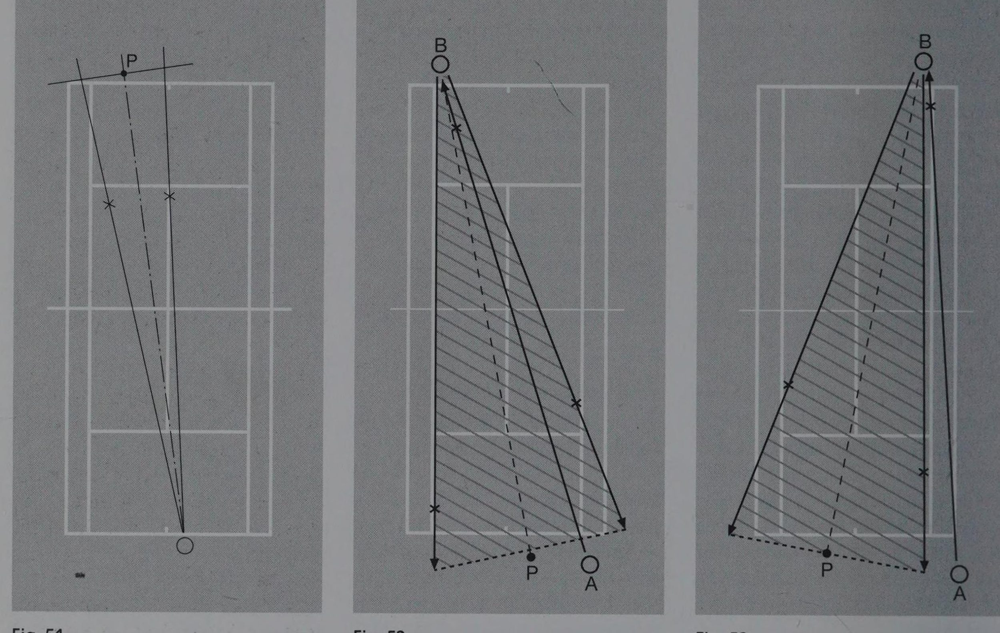
Đây là một trong những khái niệm quan trọng nhất và ít được dạy nhất trong tennis: Nơi bạn phục hồi sau một cú đánh quan trọng hơn nhiều so với nơi bạn đứng khi đánh.
Sai lầm phổ biến nhất trong tennis nghiệp dư là "luôn chạy về giữa sân" sau mỗi cú đánh. Logic này có vẻ hợp lý: sân trải dài về hai phía, nên đứng ở giữa giúp bạn che phủ cả hai phía. Đúng không?
Sai. Và đây là lý do.
Sau khi bạn đánh bóng, đối thủ không thể đánh bóng sang bất kỳ đâu trên sân — họ bị ràng buộc bởi vị trí của họ và vị trí của bóng khi nó đến tay họ. Cụ thể, họ có một tập hợp các hướng đánh có thể và một tập hợp các hướng đánh không thể hoặc không thực tế.
Nguyên lý Bisector nói rằng: Vị trí phục hồi tối ưu của bạn là điểm nằm trên đường phân giác của góc tối đa và tối thiểu mà đối thủ có thể đánh bóng.
Hãy xem một ví dụ cụ thể:
Bạn đánh một cú crosscourt rộng sang góc forehand của đối thủ. Bây giờ đối thủ đang đứng ở ngoài đường sideline bên phải của họ. Từ vị trí đó, họ có thể đánh:
- Crosscourt (sang bên trái của bạn, góc xa nhất)
- Down-the-line (sang bên phải của bạn, tương đối gần với vị trí của bạn)
- Vào giữa sân (hướng thẳng về phía bạn)
Góc tối đa của hai hướng cực đoan (crosscourt và down-the-line) tạo thành một hình nón. Đường phân giác của hình nón đó không phải là điểm chính giữa sân — nó lệch về phía crosscourt vì crosscourt là hướng tấn công nguy hiểm hơn từ vị trí đó.
Do đó, vị trí phục hồi tối ưu của bạn là lệch về phía trái, không phải trở về giữa.
2.4. Hình học của các cú đánh crosscourt — Phân tích chi tiết
Forehand crosscourt từ góc trái:
Khi đánh forehand crosscourt từ phía trái sân sang phía phải của đối thủ, bạn đang tận dụng:
- Góc sân rộng nhất (từ corner sang corner)
- Lưới thấp nhất ở điểm bóng đi qua
- Sự dịch chuyển ngang tối đa cho đối thủ
Tuy nhiên, sau cú đánh này, đối thủ từ góc phải của họ có thể:
- Đánh crosscourt trả lại (sang trái của bạn) — nguy hiểm nhất
- Đánh down-the-line (sang phải của bạn) — an toàn hơn nhưng ít tấn công hơn
Vị trí phục hồi tối ưu: Lệch sang trái khoảng 1-1.5 mét so với trung tâm sân, để bisect góc giữa crosscourt trả lại và down-the-line.
Inside-out forehand:
Một trong những cú đánh mạnh nhất trong tennis hiện đại. Bạn chạy vòng qua backhand để đánh forehand sang góc backhand của đối thủ.
Hình học của cú này rất thú vị: bạn đang đánh từ bên trái sân của bạn sang bên trái sân của đối thủ (tức là sang góc forehand của họ nếu họ cũng là tay phải), nhưng qua đường chéo. Điều này:
- Tạo ra góc tấn công cực kỳ sắc
- Khiến đối thủ phải chạy rất xa sang phải
- Mở ra đường thẳng bên trái của đối thủ để tấn công tiếp theo
Rủi ro: Bạn đang đứng ở góc trái của sân, xa trung tâm. Nếu đối thủ đánh down-the-line sang bên phải của bạn, bạn có quãng đường rất dài phải chạy. Đây là lý do tại sao inside-out forehand đặc biệt nguy hiểm khi không được thực hiện đủ sâu — nếu bóng ngắn, đối thủ có thể phản công ngược lại.
2.5. Hình học của down-the-line — Khi nào và tại sao
Down-the-line (đường thẳng) là cú đánh tấn công, không phải cú xây dựng rally. Tại sao?
Lý do 1: Margin lỗi thấp hơn
- Sân ngắn hơn theo đường thẳng
- Lưới cao hơn ở phần bên cạnh (gần cột)
- Ít dung sai hơn về độ sâu
Lý do 2: Recovery khó khăn hơn Sau khi đánh down-the-line, bạn thường đứng ở giữa sân hoặc gần đó. Nhưng bạn vừa mở ra toàn bộ crosscourt cho đối thủ — và crosscourt là hướng tấn công nguy hiểm nhất từ vị trí của họ.
Lý do 3: Dễ "đọc" hơn Đối thủ có xu hướng dự đoán down-the-line dễ hơn crosscourt, vì crosscourt đòi hỏi thay đổi hướng còn down-the-line thì không.
Tuy nhiên, down-the-line là vũ khí quan trọng khi:
- Đối thủ đang di chuyển về phía crosscourt (dự đoán của họ bị sai)
- Bạn đã thiết lập một cú crosscourt mạnh và cần phá vỡ pattern
- Đối thủ đang đứng ở góc crosscourt để chờ đón
- Bạn đang ở trong sân (service box area) và có thể thực hiện với nhiều angle hơn
Down-the-line hiệu quả nhất khi nó bất ngờ — tức là khi đối thủ đã được "lập trình" để chờ crosscourt.
2.6. T-Zone và Body Zone — Hình học của Serve
Trong serve, có ba khu vực chính mà người giao bóng nhắm đến:
Wide (Rộng): Giao bóng hướng ra phía ngoài, kéo người nhận ra khỏi sân. Tạo ra góc rộng cho cú đánh tiếp theo hoặc buộc người nhận phải thực hiện cú trả lại khó từ ngoài sân.
Body (Thân thể): Giao bóng thẳng vào người nhận, cạnh hông hoặc vai. Về mặt hình học, điều này "khóa" người nhận — họ không có chỗ để vung vợt thoải mái vì quả bóng đến quá gần người.
T (Tee): Giao bóng vào đường T (đường trung tâm), thường sang forehand hoặc backhand, nhưng với góc tấn công thẳng hơn. T serve thường được sử dụng để mở ra điểm yếu của người nhận (ví dụ backhand của họ) hoặc để thiết lập cú đánh tiếp theo.
Hình học của serve service box tương tự như hình học của rally: bạn đang đặt đối thủ vào một vị trí nơi các tùy chọn của họ bị giới hạn ngay từ đầu điểm.
2.7. Geometry của vùng service box
Service box (ô phát bóng) là khu vực nhỏ hơn so với đường baseline. Điều này có nghĩa là khi bạn serve vào service box góc Wide từ Deuce court (phía phải của server nhìn từ phía server), góc sang phía trái (wide serve) có thể tạo ra góc rộng đáng kể — kéo người nhận ra khỏi sân đến 2-3 mét.
Từ góc nhìn của người nhận:
- Wide serve từ Deuce court: bóng đến từ bên phải, buộc họ phải mở vai trái và đánh từ bên ngoài sân
- Body serve từ bất kỳ đâu: bóng đến vào vùng trung thân, khóa khuỷu tay
- T serve từ Ad court (phía trái của server): bóng đến thẳng sang forehand của người nhận (nếu đứng ở phía trái nhìn từ server) hoặc backhand, tùy vào hướng serve
Người giao bóng giỏi không giao bóng vào "ô" một cách ngẫu nhiên — họ serve nhắm đến vị trí cụ thể sẽ buộc người nhận phải trả lại theo hướng bất lợi nhất.
2.8. Nguyên lý khai thác góc kép (Double Angle Principle)
Đây là khái niệm hình học nâng cao: tạo ra góc trước để mở ra góc sau.
Ví dụ: Bạn đánh một cú forehand crosscourt rộng sang góc backhand phải của đối thủ. Đây là "góc đầu tiên". Bây giờ đối thủ phải chạy sang phải để trả lại. Khi trả lại từ góc đó, họ có ít góc tấn công hơn — phần lớn những gì họ có thể đánh là crosscourt trả lại sang trái của bạn.
Nếu bạn phục hồi tốt (bisect đúng góc), và bóng của đối thủ là crosscourt, bạn giờ đây đứng ở góc trái của sân với đối thủ ở góc phải. Bạn có thể đánh down-the-line (sang phải, nơi đối thủ vừa rời đi) — đây là "góc thứ hai".
Nguyên lý kép: Dùng crosscourt để tạo down-the-line. Dùng down-the-line để tạo crosscourt. Sự kết hợp luân phiên của hai hướng, được tính toán dựa trên vị trí của đối thủ, là cốt lõi của tấn công chiến thuật trong tennis.
2.9. Vùng Neutral, Defensive và Offensive trên sân
Sân đấu không đồng nhất về mặt chiến lược. Chúng ta có thể chia nó thành ba vùng chức năng:
Offensive Zone (Vùng tấn công): Trong sân (inside the baseline), thường ở khu vực service line hoặc gần hơn. Đây là nơi:
- Bóng có thể được đánh "on the rise" (đánh sớm)
- Góc tấn công rộng nhất
- Áp lực thời gian lên đối thủ cao nhất
- Nhưng cũng đòi hỏi phản ứng nhanh nhất
Neutral Zone (Vùng trung lập): Gần baseline, thường trong khoảng 1-2 mét phía sau đường baseline. Đây là vùng "mặc định" của tennis baseline hiện đại — an toàn để phòng thủ, không quá xa để tấn công.
Defensive Zone (Vùng phòng thủ): Xa sau baseline, thường từ 2-5 mét. Từ đây:
- Rất khó tạo ra áp lực tấn công
- Cần sử dụng height và depth để "mua thời gian" phục hồi
- Tốc độ bóng của đối thủ bị làm chậm hơn khi đến tay bạn
Chiến thuật tốt nhằm duy trì bạn ở Neutral hoặc Offensive Zone trong khi đẩy đối thủ vào Defensive Zone.
2.10. Tổng kết — Sân đấu là ngôn ngữ, không phải địa lý
Hiểu hình học sân đấu không phải là học về kích thước và đường kẻ. Đó là học về ngôn ngữ mà tennis được viết bằng đó.
Mỗi cú đánh là một câu trong ngôn ngữ đó. Hướng, chiều sâu, chiều cao, tốc độ — tất cả những điều này là "từ ngữ" của ngôn ngữ không gian tennis. Và giống như học một ngôn ngữ thực sự, thành thạo không chỉ là biết các từ mà còn là hiểu cú pháp, ngữ cảnh và sắc thái.
Trong các chương tiếp theo, chúng ta sẽ xây dựng trên nền tảng hình học này để khám phá cách thời gian (Chương 3), phục hồi (Chương 4) và bốn biến số không gian chính (Chương 5) tương tác với nhau để tạo ra động lực học phức tạp của trò chơi thực sự.
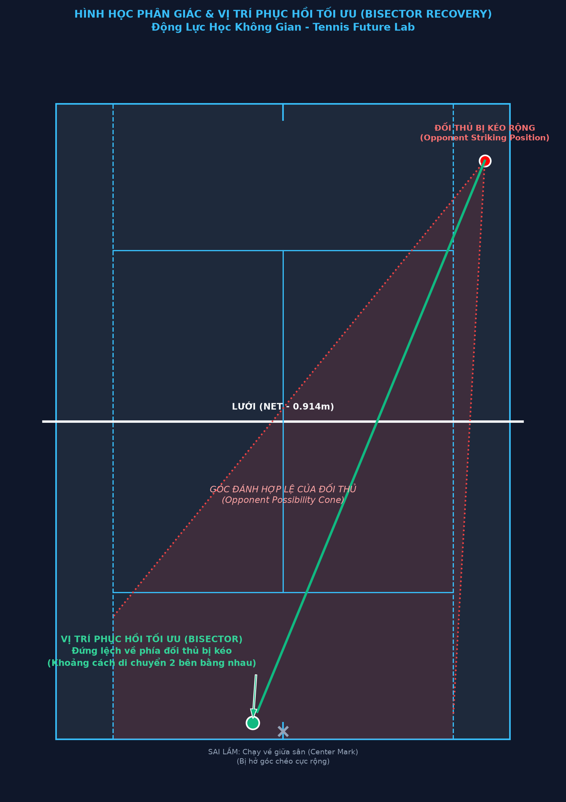
CHƯƠNG 3: THỜI GIAN, KHÔNG GIAN VÀ ÁP LỰC CHIẾN THUẬT
3.1. Chiến tranh thời gian trong tennis
Tennis, ở cấp độ sâu nhất của nó, là một cuộc chiến về thời gian.
Không phải thời gian theo nghĩa "ai serve nhanh hơn". Mà là thời gian theo nghĩa: ai kiểm soát cửa sổ ra quyết định của ai.
Mỗi cú đánh cho đối thủ một lượng thời gian nhất định để:
- Nhận thức — Nhìn thấy và đọc quỹ đạo bóng
- Dự đoán — Xác định bóng sẽ nảy ở đâu
- Di chuyển — Chạy đến vị trí cần thiết
- Chuẩn bị — Setup vị trí thân thể và vợt
- Thực hiện — Swing và đánh bóng
- Phục hồi — Bắt đầu di chuyển đến vị trí tiếp theo
Khi bạn "tạo áp lực", bạn đang cắt giảm thời gian mà đối thủ có để hoàn thành một hoặc nhiều bước trong chuỗi này. Khi bạn "mua thời gian", bạn đang tăng thời gian của chính mình để hoàn thành các bước này.
Đây là chiều thứ hai của tennis sau không gian, và cả hai tương tác với nhau theo những cách không thể tách rời.
3.2. Cửa sổ thời gian (Temporal Windows)
Mỗi cú đánh tạo ra một "cửa sổ thời gian" cho đối thủ. Kích thước của cửa sổ này phụ thuộc vào:
Tốc độ bóng: Bóng nhanh = cửa sổ nhỏ. Bóng chậm = cửa sổ lớn.
Hành trình bóng: Bóng phải bay qua khoảng cách dài hơn (ví dụ crosscourt sâu) = cửa sổ lớn hơn so với bóng bay ngắn hơn (drop shot hoặc return gần).
Chiều cao nảy: Bóng nảy thấp = ít thời gian để chuẩn bị. Bóng nảy cao nhưng chậm = nhiều thời gian hơn nhưng khó tiếp xúc hơn về vùng strike zone.
Vị trí của người nhận: Nếu đối thủ đứng xa so với nơi bóng sẽ nảy, họ có ít thời gian thực sự (mặc dù bóng bay lâu) vì họ phải chạy thêm.
Tay vợt chiến thuật bậc cao không chỉ nghĩ về "đánh bóng đi đâu" — họ nghĩ về "cửa sổ thời gian nào tôi đang tạo ra cho đối thủ và tôi cần làm gì trong cửa sổ thời gian của tôi?"
3.3. On-The-Rise — Cú đánh thay đổi phương trình thời gian
Đánh "on the rise" (còn gọi là "early ball" hay "taking time away") là một trong những vũ khí chiến thuật mạnh nhất trong tennis hiện đại, và nó hoạt động hoàn toàn thông qua cơ chế thời gian.
Khi bóng nảy và đang đi lên trước khi đạt đỉnh, bạn có thể chọn đánh nó ở ba thời điểm:
- Khi đang lên (on the rise): Bóng thấp hơn đỉnh, đang tăng tốc
- Ở đỉnh (at the peak): Bóng ở điểm cao nhất, chuyển động chậm nhất
- Khi xuống (on the fall): Bóng đang giảm độ cao
Đánh on the rise có vẻ phản trực giác: bóng đang di chuyển, khó tiếp xúc hơn. Nhưng lợi thế thời gian là cực kỳ lớn:
- Bóng rời tay bạn sớm hơn 0.3-0.5 giây so với đánh ở đỉnh
- Điều này có nghĩa là đối thủ có ít thời gian hơn để:
- Quan sát bạn chuẩn bị (ít thông tin hơn để đọc direction)
- Di chuyển đến vị trí
- Setup cú đánh của họ
- Đồng thời, bạn đang đứng trong sân hơn, tạo ra góc rộng hơn
Djokovic là bậc thầy của on-the-rise tennis. Ông thường xuyên đánh ngay trong service box khi đối thủ tấn công, và điều này không chỉ trung hòa áp lực mà còn tạo ra áp lực ngược lại vì tốc độ bóng phản công của ông đến đối thủ rất nhanh.
3.4. Sự phân biệt giữa "tốc độ" và "áp lực thời gian"
Đây là một trong những nhầm lẫn phổ biến nhất trong tennis: nhiều người chơi tin rằng bóng mạnh hơn = áp lực thời gian hơn. Điều này đúng một phần, nhưng không phải toàn bộ sự thật.
Áp lực thời gian thực sự đến từ sự kết hợp của:
- Tốc độ bóng — Yếu tố rõ ràng nhất
- Vị trí của bạn khi đánh — Đứng trong sân hơn = bóng đến đối thủ nhanh hơn
- Độ sâu của bóng — Bóng sâu buộc đối thủ phục hồi xa hơn
- Timing của bạn — Đánh sớm = giảm tổng hành trình thời gian
Một ví dụ: Một quả bóng 150 km/h đánh từ 3 mét sau baseline sẽ đến đối thủ sau khoảng 1.2-1.3 giây (tùy vào khoảng cách). Nhưng một quả bóng 120 km/h đánh từ ngay trên đường baseline sẽ đến đối thủ sau khoảng 1.0-1.1 giây vì hành trình ngắn hơn nhiều.
Tay vợt nào đang tạo ra "áp lực thời gian" hơn? Tay vợt đứng gần baseline hơn, ngay cả với bóng chậm hơn.
Điều này giải thích tại sao những tay vợt như Agassi (trong thời kỳ đỉnh cao) hay Djokovic có thể tạo ra cảm giác "lấy hết thời gian" của đối thủ mà không cần serve 220 km/h — họ đứng trong sân, đánh sớm, và nén cửa sổ thời gian của đối thủ.
3.5. Topspin như công cụ quản lý thời gian
Topspin thường được hiểu chủ yếu là công cụ kỹ thuật (giúp bóng xuống sân) hay công cụ tấn công (bóng nảy cao khó đánh). Nhưng ở cấp độ chiến thuật, topspin là công cụ quản lý thời gian.
Topspin cao và sâu = Mua thời gian
Khi bóng có nhiều topspin và bay cao qua lưới, nó:
- Bay lâu hơn trong không khí (thời gian bay dài hơn)
- Nảy lên cao, đẩy đối thủ ra sau baseline
- Từ đó đối thủ phải đánh từ vị trí phòng thủ, mất thêm thời gian để phục hồi về baseline sau cú đánh
- Trong thời gian đó, bạn có nhiều thời gian hơn để phục hồi vị trí
Topspin nặng + đánh nhanh = Nén thời gian
Ngược lại, nếu bạn kết hợp topspin nặng với tốc độ cao (không phải cú lob chậm mà là cú forehand mạnh với topspin), bóng đến đối thủ nhanh và nảy lên cao ra khỏi comfort zone của họ. Điều này nén cả không gian (vùng tiếp xúc khó) và thời gian (tốc độ cao).
Rafa Nadal là ví dụ hoàn hảo: cú forehand của ông kết hợp tốc độ, topspin nặng, và chiều sâu — tạo ra áp lực đa chiều mà rất khó để phản hóa.
3.6. Slice như công cụ đảo lộn thời gian
Slice backhand (và đôi khi slice forehand) là một trong những vũ khí thay đổi nhịp điệu mạnh nhất trong tennis, và cơ chế của nó cũng hoàn toàn liên quan đến thời gian.
Một quả bóng topspin nảy lên cao và nhanh sau khi tiếp đất — tạo ra cửa sổ thời gian nhất định.
Một quả slice nảy thấp và chậm, "trôi" qua sân — tạo ra cửa sổ thời gian hoàn toàn khác.
Sự thay đổi đột ngột từ topspin sang slice phá vỡ calibration thời gian của đối thủ. Cơ thể và não của họ đã được "lập trình" cho topspin cao — và đột nhiên bóng đến thấp, chậm hơn, nhưng bật thấp và khó nhấc lên. Họ phải tái hiệu chỉnh hoàn toàn trong thời gian rất ngắn.
Federer sử dụng kỹ thuật này kiệt xuất: ông xây dựng loạt bóng bằng topspin để thiết lập nhịp điệu, sau đó đột ngột chèn một slice backhand sâu. Đối thủ đã "nhảy vào" nhịp điệu topspin và bị bắt gặp bởi sự thay đổi.
3.7. Pace Changes — Chiến tranh nhịp điệu
"Pace" (tốc độ/nhịp điệu) là một chiều kích thời gian quan trọng khác trong tennis. Không chỉ là tốc độ bóng mà còn là nhịp điệu tổng thể của loạt bóng.
Flat ball (bóng phẳng): Nhanh, ít spin, bay thẳng. Đến đối thủ nhanh nhưng nảy theo cách có thể dự đoán được.
Heavy topspin: Chậm hơn flat trong không khí nhưng nảy nặng và cao. Thay đổi strike zone.
Slice: Chậm nhất, nảy thấp và "trôi". Buộc đối thủ phải "nhấc" bóng lên.
Drop shot: Bóng ngắn với topspin nhẹ, rơi ngay sau lưới. Yêu cầu đối thủ chạy về phía trước nhanh nhất có thể.
Tay vợt chiến thuật giỏi không đánh bóng với cùng một nhịp điệu suốt cả trận. Họ thay đổi nhịp điệu có chủ đích để phá vỡ calibration của đối thủ và tạo ra sự bất ngờ.
Ví dụ điển hình: Đánh heavy topspin liên tục trong 3-4 cú để đối thủ quen với nhịp điệu cao và nảy nặng → Sau đó đột ngột đánh flat hard ball → Đối thủ đã "nghiêng người ra sau" để xử lý topspin nặng nhưng bóng flat đến nhanh và thấp hơn dự kiến.
3.8. Serve + 1 và thời gian chuẩn bị tiếp theo
Một trong những khái niệm chiến thuật quan trọng nhất trong tennis hiện đại là "Serve + 1" — ý tưởng rằng serve tốt không chỉ giúp bạn có aces hay cú trả lại yếu, mà còn thiết lập cú đánh thứ hai của bạn (the +1).
Về mặt thời gian: Một serve hiệu quả về mặt không gian (ví dụ wide serve) sẽ kéo người nhận ra ngoài sân và buộc họ trả lại theo một hướng hạn chế. Điều này cho phép server dự đoán cú trả lại sẽ đến đâu và bắt đầu di chuyển hoặc chuẩn bị trước khi cú trả lại xảy ra.
Server không đang chờ phản ứng — họ đang phản ứng với tình huống mà họ tự tạo ra. Điều này về cơ bản là đang mua thêm thời gian cho cú +1 bằng cách biết trước bóng sẽ đến từ đâu.
Người serve tốt nhất không chỉ serve mạnh — họ serve có chiến lược để thiết lập tình huống tối ưu cho cú đánh tiếp theo.
3.9. Temporal Pressure Mapping — Bản đồ áp lực thời gian
Một cách hữu ích để hiểu áp lực thời gian là hình dung nó như một "bản đồ nhiệt" trên sân đấu — mỗi vị trí trên sân có một mức độ áp lực thời gian khác nhau tùy thuộc vào vị trí và hướng tấn công của đối thủ.
Vùng đỏ (Áp lực cao): Ngay phía sau baseline, đặc biệt là hai góc. Bóng đến đây từ đối thủ đứng trong sân = áp lực thời gian cực cao.
Vùng vàng (Áp lực trung bình): Giữa sân, khoảng 2-3 mét sau baseline. Vị trí "mặc định" của baseline tennis. Áp lực có thể quản lý nhưng cũng không thoải mái.
Vùng xanh (Áp lực thấp): Ngay trên hoặc trong baseline. Bạn đang trong offensive zone. Áp lực thời gian của bạn thấp, áp lực của đối thủ cao.
Mục tiêu trong tennis baseline là liên tục di chuyển đối thủ từ vùng xanh sang vùng đỏ trong khi duy trì bản thân ở vùng xanh hoặc vàng.
3.10. Quản lý áp lực thời gian ở cấp độ thực tế
Làm thế nào để thực sự quản lý áp lực thời gian trong trận đấu thực tế?
Kỹ thuật 1: Spin as Timekeeper Sử dụng heavy topspin khi bạn cần thời gian. Slice khi bạn muốn thay đổi nhịp. Flat khi bạn muốn nén thời gian. Hãy ý thức về spin là công cụ quản lý thời gian, không chỉ là kỹ thuật.
Kỹ thuật 2: Positioning as Time Investment Mỗi bước tiến về phía baseline là một "đầu tư thời gian" — bạn nhận ít thời gian hơn cho bản thân nhưng lấy đi nhiều hơn từ đối thủ. Mỗi bước lùi là "tiết kiệm thời gian" — bạn mua thêm thời gian cho bản thân nhưng cho đối thủ nhiều hơn.
Kỹ thuật 3: Pattern Recognition Khi bạn nhận ra rằng đối thủ luôn trả lại theo một hướng nhất định sau một cú đánh cụ thể, bạn có thể bắt đầu di chuyển sớm hơn, hiệu quả "mua" thêm thời gian bằng dự đoán.
Kỹ thuật 4: Breathing và Rhythm Áp lực tâm lý thường dẫn đến việc đánh bóng quá nhanh, thêm vào áp lực tự tạo. Hít thở có ý thức và duy trì nhịp điệu của bạn là cách "reset" cửa sổ thời gian trong đầu bạn.
CHƯƠNG 4: HỆ THỐNG PHỤC HỒI ĐỘNG VÀ BISECTOR GEOMETRY
4.1. Phục hồi là gì? Định nghĩa lại từ đầu
Trong tennis nghiệp dư, "phục hồi" (recovery) thường được hiểu là "chạy về giữa sân sau khi đánh bóng". Đây là sự hiểu biết không đầy đủ và đôi khi phản tác dụng.
Phục hồi thực sự không phải là sự tái thiết lập về trạng thái tĩnh. Nó là sự thích nghi không gian liên tục trong loạt bóng sống động.
Phục hồi đúng nghĩa bao gồm:
- Đánh giá ngay lập tức: Ngay khi bạn đánh bóng xong, não bạn phải bắt đầu xử lý — đối thủ đang đứng ở đâu? Cú đánh của tôi vừa rồi đến đâu? Đối thủ có bao nhiêu thời gian và không gian?
- Tính toán bisector: Xác định đường phân giác của các phương án đánh mà đối thủ có thể thực hiện
- Di chuyển đến bisector đó: Không phải về giữa sân, mà về điểm bisector cụ thể
- Duy trì sẵn sàng di chuyển: Đứng ở trạng thái "split step" động, sẵn sàng phản ứng theo bất kỳ hướng nào
- Điều chỉnh liên tục: Khi đối thủ chuẩn bị đánh, micro-adjust vị trí cuối cùng dựa trên tín hiệu thân thể của họ
4.2. Bisector Geometry — Toán học của vị trí phục hồi
Hãy đào sâu hơn vào toán học của bisector recovery.
Định nghĩa: Bisector (đường phân giác) của một góc là đường thẳng chia góc đó thành hai phần bằng nhau.
Trong tennis, sau khi bạn đánh bóng, đối thủ có thể đánh bóng theo một phạm vi các hướng. Hai hướng "cực đoan" nhất (thường là crosscourt tối đa và down-the-line tối đa) tạo thành một góc. Đường phân giác của góc đó là vị trí phục hồi tối ưu — từ đó bạn phải chạy cùng một khoảng cách để đến bất kỳ hướng nào trong phạm vi khả thi của đối thủ.
Ví dụ 1: Phục hồi sau cú forehand crosscourt trung tính
Bạn đứng ở giữa baseline và đánh forehand crosscourt sang phía backhand của đối thủ. Đối thủ đứng gần trung tâm sân phía họ. Phạm vi đánh của đối thủ:
- Crosscourt tối đa: sang góc bên trái của bạn (góc forehand của bạn)
- Down-the-line tối đa: sang góc bên phải của bạn (góc backhand của bạn)
Bisector của hai hướng này: gần trung tâm sân nhưng hơi lệch sang trái (về phía crosscourt) vì đó là hướng tấn công nguy hiểm hơn từ vị trí của đối thủ.
Vị trí phục hồi: khoảng 20-30 cm sang trái so với điểm chính giữa sân.
Ví dụ 2: Phục hồi sau cú forehand crosscourt rộng (tấn công)
Bạn đánh một cú forehand crosscourt rất rộng sang ngoài sideline của đối thủ. Đối thủ đang ở ngoài sân để trả lại. Phạm vi đánh của đối thủ bị giới hạn đáng kể vì họ đang ở góc rộng:
- Crosscourt tối đa: hướng sang trái của bạn, nhưng không quá rộng vì họ phải đánh qua nhiều lưới hơn
- Down-the-line: sang phải của bạn, đây là hướng tự nhiên hơn từ vị trí của họ
Bisector: Lệch sang phải đáng kể (phía down-the-line) vì đó là hướng tự nhiên và nguy hiểm nhất từ góc rộng.
Vị trí phục hồi: 40-60 cm sang phải so với giữa sân, đôi khi thậm chí ngay trên đường center.
4.3. Tại sao "luôn chạy về giữa" là chiến lược sai
Hãy minh họa tại sao "luôn về giữa" là sai thông qua một tình huống cụ thể:
Bạn đánh một cú inside-out forehand sang góc backhand của đối thủ (phía bên phải sân của họ). Đây là một cú đánh tấn công. Bạn đứng ở góc trái của sân.
Nếu bạn "luôn về giữa": Bạn chạy trở về điểm giữa baseline — khoảng 4 mét.
Nếu bạn áp dụng bisector: Đối thủ ở góc phải của họ, phạm vi đánh chủ yếu là:
- Crosscourt sang trái của bạn (nơi bạn vừa đánh từ, nếu đối thủ có thể tạo góc)
- Down-the-line sang phải của bạn (hướng "tự nhiên" nhất từ góc phải của họ)
Bisector lệch sang phải, khoảng 1.5-2 mét sang phải so với giữa. Vị trí phục hồi tối ưu là chỉ khoảng 2 mét từ nơi bạn đang đứng — không phải 4 mét.
Kết quả: Bạn tiết kiệm được 2 mét phục hồi không cần thiết. Ở đẳng cấp cao, 2 mét này là sự khác biệt giữa có thời gian và không có thời gian cho cú đánh tiếp theo.
4.4. Dynamic vs Static Recovery — Hai triết lý phục hồi
Static Recovery (Phục hồi tĩnh): Tay vợt chạy về một điểm cố định (thường là giữa sân) và dừng lại. Họ đứng và chờ bóng đến.
Nhược điểm: Mất động lực chuyển động. Phải tái tạo gia tốc từ trạng thái đứng. Khó phản ứng nhanh.
Dynamic Recovery (Phục hồi động): Tay vợt di chuyển đến điểm bisector trong khi vẫn duy trì gia tốc và sẵn sàng. Ngay trước khi đối thủ đánh, họ thực hiện "split step" — một bước nhảy nhỏ để "khóa" gia tốc và cho phép thay đổi hướng ngay lập tức.
Ưu điểm: Duy trì đà chuyển động. Phản ứng từ "trạng thái có gia tốc" thay vì từ đứng yên. Nhanh hơn đáng kể.
Split Step: Đây là kỹ thuật quan trọng nhất trong phục hồi. Khi đối thủ chuẩn bị tiếp xúc với bóng, bạn thực hiện một bước nhảy nhỏ vào không khí (khoảng 5-10 cm) và hạ xuống với hai chân rộng hơn vai. Bước nhảy này:
- "Tải" (load) cơ bắp chân và hệ thống đàn hồi
- Cho phép bạn nhìn thấy hướng bóng của đối thủ mà không có momentum dư thừa
- Cho phép tăng tốc ngay lập tức theo bất kỳ hướng nào
Split step phải diễn ra đúng lúc — không quá sớm (bạn sẽ hạ xuống trước khi biết hướng) và không quá muộn (bạn sẽ mất cơ hội tải hệ thống đàn hồi). Thời điểm lý tưởng là khi đối thủ bắt đầu vung vợt.
4.5. Sinh thái học chuyển động trong phục hồi — Di chuyển ít để bao phủ nhiều
Một nguyên lý không trực quan nhưng quan trọng: Tay vợt đỉnh cao không phải là người chạy nhanh nhất. Họ là người di chuyển ít nhất.
Điều này nghe có vẻ mâu thuẫn — làm sao bạn có thể bao phủ sân tốt hơn bằng cách di chuyển ít hơn? Câu trả lời: Phục hồi thông minh.
Tay vợt chạy nhiều thường là tay vợt:
- Phục hồi về sai vị trí (phải bù đắp bằng cách chạy nhiều hơn cho cú tiếp theo)
- Không dự đoán được hướng bóng (phải "delay" rồi "sprint")
- Phục hồi quá xa (về giữa sân khi bisector là gần đó)
Tay vợt di chuyển hiệu quả:
- Luôn ở gần bisector (không bao giờ phải chạy "bù")
- Đọc tín hiệu đối thủ sớm (bắt đầu di chuyển trước khi bóng đánh)
- Duy trì split step động (sẵn sàng theo bất kỳ hướng nào)
Kết quả: Họ trông "nhàn hạ" trên sân mặc dù đang chơi ở tốc độ cao.
4.6. "Reading" đối thủ để phục hồi trước
Phục hồi tốt không chỉ về vị trí — nó còn về dự đoán. Tay vợt giỏi bắt đầu phục hồi trước khi đối thủ thực sự đánh bóng, vì họ đang "đọc" các tín hiệu từ tư thế và chuyển động của đối thủ.
Tín hiệu tư thế:
- Vai của đối thủ quay về hướng nào? Vai dẫn đến tay vợt dẫn đến hướng bóng
- Cổ tay có đang "snap" sớm không? Điều này thường cho thấy cross-court
- Vị trí chân của họ: Chân trước (leading foot) thường chỉ ra hướng chính của cú đánh
Tín hiệu vị trí:
- Từ góc rộng, down-the-line là tự nhiên hơn
- Từ giữa sân, crosscourt là tự nhiên hơn
- Khi bị áp lực (ít thời gian), người chơi thường đánh crosscourt (hướng "an toàn" hơn)
- Khi trong tư thế tốt và thư giãn, cú tấn công down-the-line có thể xảy ra
Tín hiệu thể lực và tâm lý:
- Khi mệt, tay vợt có xu hướng đánh crosscourt và ngắn hơn
- Khi được điểm, họ có thể mạo hiểm đánh down-the-line
- Trong các điểm quan trọng, nhiều người chơi có pattern "go to" đặc trưng
Học cách đọc những tín hiệu này và bắt đầu di chuyển sớm — đây là điều phân biệt giữa tay vợt "phản ứng" và tay vợt "dự đoán".
4.7. Phục hồi sau các loại cú đánh khác nhau
Mỗi loại cú đánh tạo ra một tình huống phục hồi khác nhau:
Sau forehand crosscourt sâu từ giữa sân:
- Di chuyển lệch nhẹ sang phía crosscourt (trái với tay thuận phải)
- Khoảng cách phục hồi: 1-2 mét
- Split step timing: khi đối thủ vào strike zone
Sau forehand down-the-line tấn công:
- Đây là cú đánh rủi ro cao — bạn mở sân crosscourt
- Phục hồi PHẢI nhanh và về phía crosscourt
- Khoảng cách phục hồi: 3-4 mét (lớn hơn đáng kể)
- Bạn đang "cá cược" rằng cú down-the-line của bạn tốt đủ để đối thủ không thể phản công crosscourt
Sau slice backhand thấp:
- Đối thủ phải đánh từ thấp, nên thường không có nhiều tốc độ hoặc góc
- Phục hồi ở vị trí trung lập, hơi tiến lên trong sân để đón bóng trả lại thường ngắn hơn
- Cơ hội tốt để step forward và gây áp lực ngay sau cú tiếp theo
Sau serve:
- Server phải phục hồi ngay sau khi tiếp đất từ bước nhảy serve
- Vị trí phục hồi phụ thuộc vào loại serve và dự đoán cú trả lại
- Sau wide serve: phục hồi lệch về phía opposite (để cover trả lại down-the-line)
- Sau T serve: phục hồi về trung tâm hoặc hơi về phía bên đã serve
4.8. Exhaustion và Recovery — Khi mệt, ưu tiên gì?
Khi tay vợt mệt, tất cả mọi thứ đều trở nên khó hơn — và recovery geometry là thứ đầu tiên bị tổn hại. Người mệt có xu hướng:
- Phục hồi chậm hơn
- Phục hồi đến các vị trí "dễ" thay vì "đúng"
- Mất split step timing
- Không thể đọc đối thủ vì tập trung vào sự mệt mỏi
Chiến lược khi mệt:
- Ưu tiên depth hơn angle (bóng sâu mua thêm thời gian phục hồi)
- Sử dụng slice nhiều hơn để giảm tốc loạt bóng
- Chấp nhận vị trí phòng thủ và kiên nhẫn chờ cơ hội
- Tập trung đặc biệt vào split step để duy trì khả năng phản ứng
Việc hiểu recovery geometry trước khi mệt giúp bạn duy trì nó lâu hơn khi mệt — vì nó trở thành thói quen không cần ý thức nhiều.
4.9. Bài tập phát triển Recovery Geometry
Bài tập Bisector Feed: Đứng ở trung tâm baseline. Huấn luyện viên feed bóng đến các góc khác nhau liên tiếp. Sau mỗi cú đánh, không được nhìn vào sân — phải di chuyển đến vị trí mà bạn nghĩ là bisector đúng. Sau đó kiểm tra với huấn luyện viên.
Bài tập Figure-8 Recovery: Forehand crosscourt → phục hồi → backhand crosscourt → phục hồi → lặp lại. Tập trung vào hướng phục hồi chính xác sau mỗi cú, không chỉ tốc độ.
Bài tập Pattern Play: Chơi với đối tác nhưng chỉ được đánh crosscourt. Điều này buộc bạn phải phục hồi bisector chính xác (về phía đối thủ mới đánh sang, không về giữa) và học cách predict crosscourt.
4.10. Tổng kết — Phục hồi là đầu tư, không phải nợ
Cách đúng nhất để nghĩ về phục hồi: Mỗi cú đánh tạo ra một "nợ không gian" — bạn đã di chuyển ra khỏi vị trí trung lập, và bạn cần phục hồi để sẵn sàng cho cú tiếp theo.
Nhưng "trả nợ" không có nghĩa là "chạy về giữa sân". Nó có nghĩa là "di chuyển đến vị trí tốt nhất có thể cho tình huống hiện tại", và vị trí đó được xác định bởi bisector geometry.
Người chơi phục hồi tốt không bị "nợ" lớn sau mỗi cú đánh — họ thực hiện các cú đánh với ý thức về vị trí phục hồi từ trước, và họ di chuyển theo cách tối ưu hóa cả cú đánh hiện tại và vị trí cho cú tiếp theo.
Đây là triết lý cốt lõi của spatial tennis: Mọi hành động trong loạt bóng đều nên được thực hiện với ý thức về ba chiều không gian — quá khứ (từ đâu đến), hiện tại (đang ở đâu), và tương lai (cần ở đâu tiếp theo).
CHƯƠNG 5: WIDTH, DEPTH, HEIGHT VÀ ANGLE TRONG CHIẾN THUẬT HIỆN ĐẠI
5.1. Bốn chiều của áp lực không gian
Mọi cú đánh trong tennis có thể được phân tích qua bốn biến số không gian:
- Width (Chiều rộng): Bóng đánh gần hay xa trục trung tâm?
- Depth (Chiều sâu): Bóng đánh dài hay ngắn?
- Height (Chiều cao): Bóng bay cao hay thấp qua lưới và nảy ở đâu?
- Angle (Góc độ): Bóng bay thẳng hay theo góc sắc?
Bốn biến số này không phải là bốn lựa chọn riêng biệt — chúng là bốn chiều độc lập mà bất kỳ cú đánh nào đều có giá trị trên cả bốn. Tay vợt giỏi có thể kiểm soát cả bốn chiều đồng thời và có thể sử dụng chúng như "ngôn ngữ" chiến thuật.
5.2. Width — Kiến trúc không gian ngang
Width đề cập đến sự dịch chuyển ngang — bạn đang kéo đối thủ ra xa khỏi trung tâm sân của họ đến mức nào?
Width như vũ khí:
Cú đánh rộng (wide ball) có tác dụng:
- Kéo đối thủ ra khỏi sân, tạo khoảng trống ở phía còn lại
- Buộc đối thủ phải đánh từ góc không thoải mái
- Giảm số góc đánh có thể (vì họ đang ở ngoài sân)
- Mở ra down-the-line cho cú đánh tiếp theo của bạn
Width như bẫy:
Vấn đề với việc luôn đánh rộng là bạn cũng đang di chuyển bản thân ra khỏi vị trí trung tâm. Sau một cú wide forehand, nếu đối thủ trả lại rộng sang hướng ngược lại, bạn phải chạy qua toàn bộ sân.
Đây là lý do tại sao width phải được sử dụng như một phần của chuỗi chiến thuật, không phải đơn độc.
Width + Depth = Áp lực kép
Kết hợp width và depth là cách hiệu quả nhất để tạo áp lực. Một cú bóng rộng VÀ sâu:
- Kéo đối thủ ra ngang (width effect)
- Đẩy họ ra sau (depth effect)
- Buộc họ phải chạy đến góc xa nhất của sân phía sau baseline
Từ vị trí đó, đối thủ cực kỳ khó tấn công. Tốt nhất họ có thể làm là trả lại trung tính để phục hồi.
5.3. Depth — Vũ khí phòng thủ và tấn công
Depth (chiều sâu) là biến số thường bị đánh giá thấp. Nhiều người chơi tập trung vào tốc độ và angle, nhưng depth ảnh hưởng sâu sắc đến cấu trúc của loạt bóng.
Tại sao depth quan trọng:
1. Giảm góc tấn công của đối thủ: Khi đối thủ đứng sau baseline, góc tấn công của họ giới hạn hơn. Họ không thể tạo ra góc sắc như khi đứng trong sân. Điều này có nghĩa là cú đánh tiếp theo của họ ít nguy hiểm hơn về mặt hình học.
2. Tăng thời gian phục hồi: Bóng sâu mất nhiều thời gian hơn để đến đối thủ (vì phải đi xa hơn sau khi nảy). Điều này cho bạn thêm thời gian để phục hồi.
3. Tạo áp lực tâm lý: Chơi từ sau baseline liên tục tạo cảm giác bị "dồn ép" tâm lý, ảnh hưởng đến chất lượng quyết định.
Depth target zones:
- Deeper 3/4: Cú đánh lý tưởng nảy trong 3/4 cuối của service box phía sau, gần đường T hoặc gần baseline. Đây là vùng "golden" — đủ sâu để gây áp lực nhưng không quá risk.
- Baseline depth: Bóng nảy rất gần đường baseline, lý tưởng nhất là trong 50cm cuối. Cực kỳ áp lực nhưng cũng dễ lỗi dài hơn.
- Short ball (Bóng ngắn): Bóng nảy gần service line. Đây thường là lỗi hoặc cú set-up cho đối thủ tấn công. Phải được tránh trong play defensive và chỉ sử dụng có chủ đích (drop shot).
Depth + Consistency = Áp lực liên tục
Một trong những vũ khí đánh giá thấp nhất trong tennis: đánh sâu và nhất quán mọi lần. Không cần angle đặc biệt hay tốc độ ấn tượng. Chỉ cần mỗi quả bóng đều landing trong vùng 3/4 sâu của sân. Sau 10-15 cú như vậy, đối thủ sẽ bắt đầu mắc lỗi vì liên tục bị đẩy sâu.
5.4. Height — Chiều kích bị lãng quên
Height (chiều cao) là chiều kích bị bỏ qua nhiều nhất trong tennis nghiệp dư. Nhiều người chơi chỉ suy nghĩ trong hai chiều (trái-phải và ngắn-dài) nhưng không chú ý đến chiều cao.
Height quyết định strike zone:
Strike zone là khu vực thoải mái nhất để đánh bóng — thường ở khoảng giữa thắt lưng và vai. Khi bóng nảy vào strike zone này, người đánh có thể thực hiện với nhiều lực và kiểm soát nhất.
Bóng nảy dưới thắt lưng: Phải "nhấc" bóng lên, mất lực và kiểm soát. Bóng nảy cao hơn vai: Awkward swing position, khó kiểm soát hướng. Bóng nảy trong strike zone: Thoải mái nhất, nhiều lựa chọn nhất.
Heavy topspin và height:
Cú đánh topspin nặng (ví dụ forehand của Nadal) nảy cao hơn bình thường — thường ở mức vai hoặc trên vai. Điều này đẩy đối thủ ra khỏi comfort zone của họ: họ phải đánh từ bên trên vai, một vị trí awkward cho hầu hết các cú đánh.
Đây là lý do tại sao forehand của Nadal hiệu quả đặc biệt trên clay: mặt sân chậm hơn + clay surface = topspin nảy càng cao hơn. Đối thủ phải liên tục đánh từ trên vai của mình trong nhiều giờ liền.
Slice và height thấp:
Ngược lại, slice tạo ra bóng bay thấp và nảy thấp. Đây là cách phá vỡ topspin heavy game: bóng không nảy cao, nên đối thủ phải nhấc lên từ dưới thắt lưng. Cú nhấc lên này thường tạo ra bóng trả lại ngắn và cao — cơ hội để tấn công.
Height + Topspin = Thao túng strike zone:
Kết hợp height và topspin cho phép bạn liên tục thao túng strike zone của đối thủ. Thay đổi từ bóng nảy cao (topspin) sang bóng nảy thấp (slice hoặc flat) phá vỡ nhịp điệu và buộc đối thủ phải liên tục điều chỉnh.
5.5. Angle — Nghệ thuật của không gian sắc nét
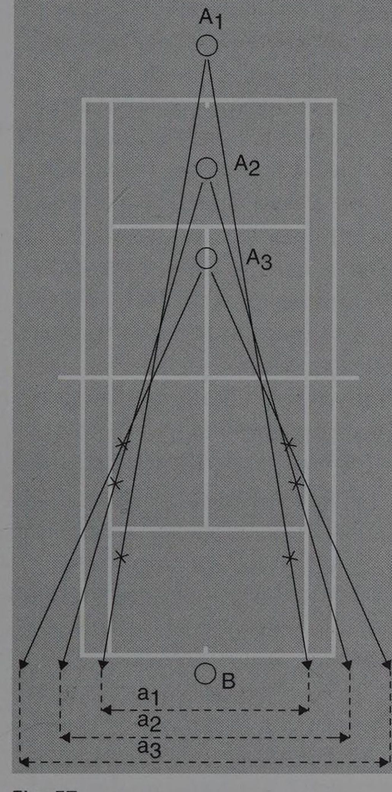
Angle là biến số tấn công nhất trong bốn biến số. Một cú đánh với angle sắc (sharply angled shot) có thể kết thúc điểm ngay lập tức vì:
- Nó kéo đối thủ ra khỏi sân
- Sân trống phía sau đối thủ rất lớn
- Tốc độ bóng không cần phải rất nhanh để gây hiệu quả
Short angle (góc ngắn sắc):
Một cú short angle rơi ngay sau lưới với góc rất sắc, buộc đối thủ phải chạy về phía trước VÀ sang bên đồng thời. Đây là một trong những cú khó nhất để phòng thủ.
Kỹ thuật: Thường sử dụng slice hoặc topspin nhẹ để bóng "dừng lại" nhanh sau khi nảy, không bounce xa. Điều này tạo thêm áp lực vì đối thủ không chỉ phải chạy đến bóng mà còn phải "đuổi theo" nó khi nó tiếp tục di chuyển sau khi nảy.
Angle as "opener" (góc như cửa mở):
Như đã đề cập trong Chương 2, angle thường được dùng để "mở cửa" — tạo ra khoảng trống sau đó khai thác. Ví dụ:
- Đánh góc sắc sang phải → đối thủ phải chạy sang phải → bỏ ngỏ phía trái → tấn công phía trái
Giới hạn của angle:
Angle không phải là lựa chọn tốt trong mọi tình huống:
- Khi bạn đang ở vị trí phòng thủ: angle rủi ro cao vì bạn đang ép bóng từ ngoài comfort zone
- Khi đối thủ đang ở vị trí tốt để counter: nếu đối thủ đứng ở giữa sân trong offensive zone, một angle sắc có thể được phản công với crosscourt winner
- Khi bóng chậm: góc sắc cần lực và timing tốt; nếu bóng chậm và thấp, angle có thể vào lưới
5.6. Kết hợp bốn biến số: Bảng chiến thuật
| Kết hợp | Tác động chiến thuật | Khi nào dùng |
|---|---|---|
| Width + Depth | Áp lực nặng nề, phòng thủ rất khó | Xây dựng rally để thiết lập tấn công |
| Width + Height | Đẩy đối thủ ra sau và sang ngoài | Khi muốn mua thời gian và đẩy lùi |
| Width + Angle | Winner tiềm năng, rủi ro cao | Khi đối thủ đang di chuyển ngược hướng |
| Depth + Height | Topspin sâu nặng, phòng thủ cực khó | Clay court play, groundstroke baseliner |
| Depth + Angle | Rất hiệu quả nếu đạt đủ sâu | Cú đánh đẳng cấp cao (Djokovic trademark) |
| Height + Angle | Short angle lob, drop shot topspin | Chuyển đổi từ phòng thủ sang tấn công |
5.7. Cách Federer, Nadal, Djokovic sử dụng bốn biến số
Roger Federer — Bậc thầy của Angle
Federer nổi tiếng với khả năng tạo angle đột ngột từ bất kỳ đâu. Bí mật của ông là kỹ thuật dự đoán (disguise) xuất sắc — cùng một motion nhưng có thể tạo ra angle crosscourt hay down-the-line, khiến đối thủ không đọc được.
Ông đặc biệt sử dụng Width + Angle từ bên forehand để mở ra toàn bộ court, sau đó khai thác với Depth + Down-the-line.
Rafael Nadal — Bậc thầy của Depth + Height
Nadal chơi tennis với depth và height không ai sánh bằng trên clay. Mỗi forehand của ông landing deep gần baseline với topspin nảy cao hơn vai. Ông hiếm khi cần angle sắc vì áp lực depth + height đã đủ để đẩy đối thủ vào thế phòng thủ.
Chiến lược của ông: Kiên nhẫn, đánh sâu và nảy cao liên tục, chờ cú ngắn của đối thủ (do áp lực liên tục) rồi tấn công.
Novak Djokovic — Bậc thầy của tất cả bốn
Djokovic có lẽ là tay vợt toàn diện nhất về bốn biến số. Ông có thể:
- Đánh depth xuất sắc (forehand và backhand đều deep)
- Tạo angle từ bất kỳ vị trí nào
- Thay đổi height tùy tình huống
- Sử dụng width cả hai cánh đều như nhau
Điều quan trọng nhất: Djokovic đặc biệt hiệu quả trong việc kết hợp các biến số theo những cách bất ngờ và biến đổi liên tục. Đối thủ không thể "quen" với pattern của ông vì ông liên tục thay đổi.
5.8. Nhịp điệu thay đổi chiến lược — Variation là vũ khí
Sử dụng bốn biến số không phải là về việc luôn chọn "giá trị tối đa" của mỗi biến số. Đây là một hiểu lầm phổ biến: nhiều người nghĩ "tốt nhất là luôn đánh sâu, rộng, cao và với góc sắc".
Thực ra, sự thay đổi là vũ khí. Bộ não của đối thủ liên tục hiệu chỉnh cho nhịp điệu hiện tại — nếu bạn liên tục đánh sâu, đối thủ sẽ hiệu chỉnh và xử lý tốt hơn. Nhưng nếu bạn đánh sâu-sâu-sâu rồi đột ngột ngắn (drop shot), hoặc cao-cao-cao rồi đột ngột flat bằng thắt lưng, đối thủ bị bất ngờ.
Nguyên tắc Variation:
- Thiết lập pattern (lặp lại 2-3 lần để đối thủ "quen")
- Phá vỡ pattern (thay đổi đột ngột một trong bốn biến số)
- Đối thủ phản ứng muộn hoặc sai
5.9. Chiều sâu trong practice — Huấn luyện bốn biến số
Bài tập Width Control: Vẽ ba vùng trên sân (gần center, giữa, gần sideline). Đánh theo các zone chỉ định bởi HLV hoặc đối tác. Mục tiêu: nhất quán đặt bóng vào zone được chỉ định.
Bài tập Depth Targets: Đặt cones hoặc targets ở khoảng 1 mét từ baseline và 1 mét từ service line. Mục tiêu: đánh bóng landing giữa hai targets (vùng "golden depth").
Bài tập Height Variation: Thực hành xen kẽ hai loại bóng: topspin nặng (nảy cao) và slice (nảy thấp). Tập trung vào sự khác biệt cảm giác và điều chỉnh kỹ thuật cần thiết.
Bài tập Angle Creation: Bắt đầu từ center baseline, đánh crosscourt với góc ngày càng sắc hơn. Tìm "giới hạn" angle của bạn — góc sắc nhất mà bạn có thể tạo ra trong khi vẫn giữ bóng vào sân.
5.10. Từ lý thuyết đến trận đấu — Áp dụng bốn biến số
Khi bạn đứng trên sân trong một trận đấu thực sự, làm thế nào để áp dụng kiến thức về bốn biến số?
Không nên: Đứng và suy nghĩ "Tôi cần đánh Width + Depth + Height với topspin" — điều này quá phức tạp để xử lý có ý thức trong thời gian thực.
Nên: Phát triển "feel" cho từng biến số thông qua practice. Khi trên sân, bạn không suy nghĩ về từng biến số mà bạn cảm nhận tình huống và cơ thể tự động điều chỉnh.
Đây là lý do tại sao việc luyện tập có ý thức (deliberate practice) về từng biến số riêng lẻ và sau đó kết hợp là quan trọng. Bạn đang "lập trình" hệ thống phản xạ của mình, không phải đang học thuộc lòng một công thức.
Mục tiêu cuối cùng: Khi cần đánh bóng deep để "mua thời gian", bạn không nghĩ "depth" — bạn chỉ cảm thấy rằng bóng phải bay cao và sâu và cơ thể thực hiện điều đó tự nhiên.
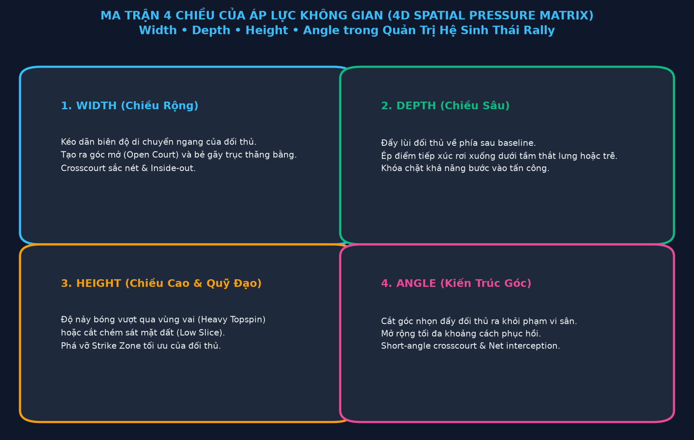
PHẦN 2: SINH THÁI CHUYỂN ĐỘNG, CƠ HỌC SÓNG & VŨ KHÍ KHÔNG GIAN
CHƯƠNG 6: NHẬN THỨC KHÔNG GIAN VÀ BẢN ĐỒ CẢM GIÁC
6.1. Nhận thức không gian là gì?
Nhận thức không gian (spatial awareness) là khả năng hiểu và xử lý thông tin về môi trường xung quanh trong mối quan hệ với bản thân và những đối tượng khác. Trong tennis, đây là khả năng biết rõ — không cần suy nghĩ có ý thức — mình đang đứng ở đâu trên sân, đối thủ đang ở đâu, bóng đang bay theo hướng nào, và khoảng không gian còn trống ở đâu.
Những tay vợt ưu tú trông như thể họ "biết trước" bóng sẽ đến đâu. Điều này không phải là phép thuật hay "bản năng" bí ẩn — đó là kết quả của nhận thức không gian được phát triển cao độ thông qua nhiều năm luyện tập.
Nhận thức không gian trong tennis bao gồm ba thành phần chính:
Proprioception (Cảm thụ bản thể): Khả năng biết vị trí của các bộ phận cơ thể mà không cần nhìn vào chúng. Ví dụ, bạn biết cánh tay đang ở góc nào mà không cần nhìn vào tay.
Visual Processing (Xử lý thị giác): Khả năng đọc thông tin hình ảnh nhanh và chính xác — không chỉ nhìn thấy bóng mà còn "đọc" spin, tốc độ và quỹ đạo trong mili-giây đầu tiên sau khi bóng rời vợt đối thủ.
Spatial Modeling (Mô hình hóa không gian): Khả năng xây dựng "bản đồ" sống trong đầu về toàn bộ sân đấu — biết khoảng cách, vị trí và xác suất mà không cần tính toán có ý thức.
6.2. Proprioception — Hệ thống GPS nội tại
Proprioception là hệ thống cảm giác cho phép bạn biết vị trí cơ thể trong không gian mà không cần thị giác. Nó đến từ các thụ thể cảm giác trong cơ, gân, khớp và hệ thống tiền đình.
Trong tennis, proprioception tốt có nghĩa là:
-
Court awareness (Nhận thức sân): Bạn biết mình đang đứng cách baseline bao xa, cách sideline bao xa — không cần nhìn xuống chân. Điều này cho phép bạn tập trung toàn bộ thị giác vào bóng và đối thủ.
-
Racket awareness (Nhận thức vợt): Bạn biết góc vợt, vị trí vợt trong không gian — không cần nhìn vào vợt. Điều này cho phép touch và feel chính xác.
-
Body awareness (Nhận thức cơ thể): Bạn biết cân bằng, tư thế và trạng thái năng lượng của mình — không cần suy nghĩ có ý thức. Điều này cho phép điều chỉnh kỹ thuật tự động.
Phát triển proprioception:
Proprioception được phát triển thông qua luyện tập lặp đi lặp lại trong môi trường thực (không phải chỉ qua lý thuyết). Một số bài tập cụ thể:
- Tập đứng gần baseline mà không nhìn xuống, sau đó kiểm tra vị trí thực tế
- Tập shadow swing (không bóng) với mắt nhắm để phát triển cảm nhận racket
- Tập balance exercises: đứng một chân, di chuyển trên bề mặt không ổn định
- Yoga và Tai Chi: các bộ môn phát triển body awareness xuất sắc
6.3. Visual Processing — Đọc bóng ở tốc độ cao
Một trong những kỹ năng quan trọng nhất trong tennis là khả năng đọc bóng sớm — xác định hướng, tốc độ và spin của bóng ngay khi nó rời vợt đối thủ, không phải khi nó gần đến bạn.
Nghiên cứu về thị giác của tay vợt chuyên nghiệp cho thấy họ không "nhìn theo" bóng theo cách người nghiệp dư làm. Thay vào đó, họ:
-
Đọc tín hiệu từ vợt đối thủ — Hướng vợt, tốc độ swing, và góc tiếp xúc cho thấy bóng sẽ đi đâu trước khi bóng rời vợt.
-
Saccadic prediction — Mắt "nhảy" trước để dự đoán nơi bóng sẽ landing, thay vì follow bóng liên tục. Điều này tiết kiệm thời gian xử lý quan trọng.
-
Pattern recognition (Nhận diện mẫu) — Não nhận ra các mẫu quen thuộc và "điền vào" thông tin còn thiếu. Ví dụ, khi thấy đối thủ đứng mở vai từ góc rộng, não tự động predict crosscourt.
Làm thế nào để cải thiện visual processing:
- Tập đọc spin: Nhìn vào seams (đường khâu) của bóng khi nó bay. Topspin: seams quay về phía bạn từ trên xuống. Backspin: seams quay ngược lại.
- Watch the racket, not just the ball: Tập trung vào vợt đối thủ trong giai đoạn backswing để đọc hướng sớm hơn.
- Video analysis: Xem slow-motion footage của chính mình và đối thủ để nhận ra các tín hiệu bạn bỏ lỡ trong thời gian thực.
6.4. Peripheral Vision — Thị giác ngoại vi
Thị giác ngoại vi (peripheral vision) là khả năng nhận thông tin từ góc nhìn rộng hơn trung tâm thị giác. Trong tennis, điều này cực kỳ quan trọng vì:
- Khi nhìn vào bóng (central vision), bạn cần đồng thời nhận thức về vị trí đối thủ (peripheral vision)
- Khi nhìn vào đối thủ để đọc tín hiệu, bạn cần duy trì awareness về bóng (peripheral vision)
Tay vợt giỏi không "chọn" giữa nhìn bóng hay nhìn đối thủ — họ sử dụng central vision cho bóng và peripheral vision cho đối thủ, hoặc ngược lại tùy giai đoạn.
Giai đoạn visual focus trong tennis:
- Khi đối thủ chuẩn bị đánh: Central vision vào vợt đối thủ (đọc hướng), peripheral vision vào toàn bộ sân
- Khi bóng đang bay: Central vision theo dõi bóng, peripheral vision nhận vị trí sân và đối thủ
- Khi chuẩn bị đánh: Central vision vào bóng đang đến, peripheral vision vào khoảng trống sân của đối thủ (để chọn hướng đánh)
6.5. Bản đồ nội tại (Internal Court Map)
Tay vợt ưu tú duy trì một "bản đồ" sống động của sân đấu trong đầu — không phải một hình ảnh tĩnh mà là một mô hình động, liên tục cập nhật.
Bản đồ này bao gồm:
- Vị trí chính xác của bản thân
- Vị trí hiện tại và momentum của đối thủ
- Vị trí và quỹ đạo của bóng
- Các vùng "mở" (open court) và "bị che" (covered court)
- Xác suất của các phương án đánh của đối thủ
Điều kỳ diệu: Bản đồ này không được xây dựng có ý thức trong mỗi điểm. Nó được duy trì tự động bởi hệ thống thần kinh sau khi được "huấn luyện" qua hàng nghìn giờ luyện tập.
Khi Federer "nhìn thấy" cú passing shot qua người serve-and-volley, ông không đang tính toán góc và khoảng cách — ông đang đọc từ bản đồ nội tại đã được cập nhật liên tục trong suốt điểm.
6.6. Không gian tâm lý — Khi perception thay đổi thực tế
Đây là một trong những khía cạnh thú vị nhất của nhận thức không gian: không gian cảm nhận không phải lúc nào cũng giống không gian thực tế.
Khi một tay vợt đang bị áp lực nặng nề, sân đấu có vẻ nhỏ hơn. Lưới có vẻ cao hơn. Các vùng "an toàn" có vẻ nhỏ hơn. Điều này không chỉ là cảm giác — nó ảnh hưởng trực tiếp đến độ chính xác và quyết định.
Ngược lại, khi một tay vợt đang trong "flow state" (trạng thái tập trung hoàn toàn), sân đấu có vẻ lớn hơn. Họ "thấy" nhiều góc mở hơn. Họ có cảm giác có nhiều thời gian hơn. Bóng có vẻ chậm hơn (trong khi thực ra nhanh như vậy).
Ý nghĩa chiến thuật: Kiểm soát không gian thực tế (vị trí, angle, depth) ảnh hưởng trực tiếp đến không gian tâm lý của đối thủ. Khi bạn liên tục áp đặt spatial pressure lên đối thủ, không gian cảm nhận của họ thu hẹp lại, dẫn đến quyết định tệ hơn và nhiều lỗi hơn.
Đây là một vòng tích cực: kiểm soát không gian thực → tạo áp lực tâm lý → đối thủ mắc lỗi → bạn giành thêm điểm → tự tin tăng → spatial awareness của bạn cải thiện → bạn kiểm soát không gian tốt hơn.
6.7. Situational Awareness — Bức tranh toàn cảnh
Spatial awareness không chỉ về vị trí trong điểm hiện tại — nó còn là situational awareness (nhận thức tình huống) ở cấp độ cao hơn:
- Score awareness: Biết score ảnh hưởng đến chiến lược. Ở 30-40, đối thủ có thể đánh bạo hơn. Ở 40-0, bạn có thể tấn công hơn.
- Momentum awareness: Cảm nhận momentum của trận đấu đang về phía ai.
- Fatigue awareness: Biết mình và đối thủ đang ở mức thể lực nào, điều đó ảnh hưởng đến các quyết định chiến thuật.
- Pattern awareness: Nhận ra các pattern lặp lại của đối thủ và của chính mình.
Tay vợt tốt "zoom out" khỏi điểm hiện tại và duy trì bức tranh toàn cảnh của trận đấu.
6.8. Developing Spatial Awareness — Lộ trình thực tế
Giai đoạn 1: Court Mapping (Tuần 1-4) Mục tiêu: Phát triển bản đồ sân cơ bản.
- Tập đứng tại các vị trí khác nhau trên sân và ước tính khoảng cách đến các điểm mốc
- Tập shadow movement không bóng với mắt nhắm, sau đó kiểm tra vị trí
- Tập "cone navigation" — di chuyển qua sân chạm các cone theo thứ tự nhất định
Giai đoạn 2: Ball Reading (Tuần 5-8) Mục tiêu: Cải thiện visual processing.
- Tập đọc spin từ máy bắn bóng (ball machine) với các loại spin khác nhau
- Tập "call it" — hét crosscourt hoặc down-the-line ngay khi đối thủ vung vợt, trước khi bóng rời vợt
- Video analysis mỗi tuần để nhận ra các visual cue bạn đang bỏ lỡ
Giai đoạn 3: Integration (Tuần 9-16) Mục tiêu: Tích hợp tất cả vào play thực tế.
- Tập với constraint: chỉ được di chuyển khi đã "đọc" hướng bóng của đối thủ
- Thêm pressure: tập với score, điểm có ý nghĩa
- Video review tập trung vào recovery positioning, không chỉ kỹ thuật
6.9. Attention Management — Phân bổ sự chú ý
Một trong những kỹ năng ẩn của spatial awareness là khả năng phân bổ sự chú ý một cách hiệu quả. Bạn không thể chú ý đến mọi thứ cùng lúc — vậy bạn chú ý đến gì và khi nào?
Pre-point: Tập trung vào breathing, positioning, và tactical plan (rộng nhất) During opponent's serve/hit: Tập trung vào vợt đối thủ (đọc hướng) Ball in flight: Tập trung vào bóng (spin, speed, trajectory) Your own preparation: Tập trung vào feeling của swing, contact point Post-hit: Tập trung vào recovery direction
Hầu hết người chơi nghiệp dư chú ý quá nhiều vào cú đánh của chính mình và không đủ vào đọc đối thủ. Thứ tự ưu tiên cần đảo ngược.
6.10. Spatial Awareness và Thiền định
Không phải ngẫu nhiên mà nhiều tay vợt hàng đầu thực hành thiền định (meditation) hoặc mindfulness. Novak Djokovic, một trong những người ủng hộ lớn nhất, đã chia sẻ rằng thiền định giúp ông:
- Quan sát sân đấu rõ hơn trong tình huống áp lực
- Không bị cuốn vào "tiếng ồn" tâm lý khi bị điểm
- Duy trì tập trung nhất quán hơn qua nhiều giờ thi đấu
Cơ chế: Thiền định tăng cường khả năng metacognitive (nhận thức về nhận thức của chính mình) và giảm thiểu "mental chatter" (tiếng nói nội tâm làm phân tán). Kết quả là spatial processing trở nên rõ ràng và nhanh hơn.
CHƯƠNG 7: SINH THÁI HỌC CHUYỂN ĐỘNG VÀ ĐIỀU HƯỚNG SÂN ĐẤU
7.1. Tennis như một hệ sinh thái chuyển động
"Movement ecology" (sinh thái học chuyển động) là một lĩnh vực khoa học nghiên cứu cách sinh vật di chuyển trong môi trường của chúng như một hệ thống tích hợp. Ứng dụng khái niệm này vào tennis mang lại góc nhìn hoàn toàn mới về cách hiểu di chuyển trên sân.
Trong sinh thái học truyền thống, một sinh vật không di chuyển trong chân không — nó di chuyển trong một môi trường, phản ứng với các tín hiệu từ môi trường đó, và hành vi di chuyển của nó không thể tách rời khỏi bối cảnh.
Tương tự, footwork trong tennis không phải là một kỹ năng cô lập có thể học riêng và sau đó "ứng dụng". Footwork là sự phản ứng tích hợp với toàn bộ hệ sinh thái của loạt bóng — bóng, đối thủ, sân, tình huống chiến thuật, mức năng lượng, và vô số yếu tố khác.
Tay vợt giỏi nhất không phải là người có footwork "đúng kỹ thuật nhất" theo một mẫu cố định. Họ là người có footwork thích nghi nhất — người di chuyển một cách thông minh và hiệu quả trong môi trường luôn thay đổi của trận đấu.
7.2. Ba nguyên lý của Movement Ecology trong Tennis
Nguyên lý 1: Adaptive Movement (Chuyển động thích nghi)
Không có footwork pattern "đúng" cho mọi tình huống. Footwork phải thích nghi với:
- Loại bóng đến (speed, spin, direction)
- Vị trí bạn đang ở
- Vị trí đối thủ
- Tactical intention của bạn
- Surface type
- Mức năng lượng hiện tại
Đây là lý do tại sao các drill footwork kiểu "A-B-C pattern" chỉ hữu ích đến một mức nhất định — chúng tốt cho phát triển mechanical basis nhưng không thể thay thế việc thực hành trong context thực tế.
Nguyên lý 2: Minimum Necessary Movement (Di chuyển tối thiểu cần thiết)
Sinh thái học dạy rằng sinh vật có xu hướng tối ưu hóa năng lượng — di chuyển đủ để đạt mục tiêu, không nhiều hơn. Trong tennis, điều này có nghĩa là:
Mục tiêu không phải là "chạy đến bóng bằng mọi cách" mà là "đến đúng vị trí để đánh bóng tốt nhất có thể với ít năng lượng nhất".
Tay vợt kém hiệu quả thường chạy nhiều hơn cần thiết vì họ phục hồi về vị trí sai (phải "bù" cho sai lầm đó bằng thêm chạy) hoặc vì họ không đọc được hướng bóng sớm (phải chạy muộn và nhanh hơn).
Nguyên lý 3: Continuous Readiness (Sẵn sàng liên tục)
Trong tự nhiên, con mồi không bao giờ hoàn toàn "nghỉ ngơi" — chúng luôn duy trì một mức alertness nhất định. Tương tự, tay vợt giỏi không bao giờ ở trạng thái "hoàn toàn dừng" trong một điểm.
Giữa các cú đánh, họ duy trình:
- Weight trên balls of feet (không ở gót)
- Slight knee bend (chân hơi cong)
- Arms slightly forward (cánh tay sẵn sàng)
- Eyes tracking opponent (mắt theo dõi đối thủ)
Trạng thái này không mệt — nó hiệu quả. Nó cho phép transition từ "chờ" sang "di chuyển" trong mili-giây.
7.3. Footwork Fundamentals — Nền tảng chuyển động
Dù footwork phải thích nghi, có một số nguyên tắc cơ bản luôn đúng:
Weight distribution (Phân bổ trọng lượng): Luôn maintain weight trên balls of feet (phần trước của lòng bàn chân), không bao giờ trên gót. Gót là "phanh" — khi weight ở gót, bạn không thể accelerate nhanh. Balls of feet là "khởi động" — từ đây bạn có thể tăng tốc ngay lập tức theo bất kỳ hướng nào.
Knee bend (Độ cong gối): Gối luôn hơi cong (không thẳng hoàn toàn). Lý do: gối thẳng là cơ bắp ở trạng thái passive. Gối cong tạo ra "pre-load" — cơ bắp đang hoạt động nhẹ và sẵn sàng explode.
Low center of gravity: Hông và trọng tâm cơ thể thấp — điều này tăng stability và cho phép change of direction nhanh hơn. Tay vợt chạy "đứng thẳng" khó thay đổi hướng hơn nhiều so với người chạy với center of gravity thấp.
Arms balance: Cánh tay không buông thõng — chúng đang "balance" và "ready" ở phía trước cơ thể. Điều này giúp maintain balance khi thay đổi hướng và cũng ready để vung vợt sớm hơn.
7.4. Các loại bước chân trong Tennis
The Split Step: Như đã đề cập, split step là "chuyển đổi" từ movement mode sang strike mode. Thực hiện đúng thời điểm — khi đối thủ vào contact với bóng. Nhảy nhẹ 5-10 cm, hạ xuống với chân rộng hơn vai và weight trên balls of feet.
The Shuffle Step: Bước trượt sang ngang, không crossover. Dùng khi cần di chuyển sang ngang trong khoảng cách vừa phải. Maintain facing position tốt hơn crossover. Phổ biến trong volley và short lateral movements.
The Crossover Step: Bước chéo — chân xa hướng di chuyển vượt qua chân gần hơn. Dùng khi cần di chuyển xa nhanh. Nhanh hơn shuffle step nhưng mất facing position nhiều hơn. Dùng khi tốc độ quan trọng hơn control.
The Approach Step: Các bước tiến về phía lưới. Quan trọng là maintain momentum về phía trước, không dừng lại đột ngột (dừng lại tạo ra unbalanced position).
The Turn and Run: Khi bóng quá xa để shuffle hay crossover, cần "open up" hoàn toàn và chạy. Dùng cho các tình huống defensive cực đoan — lob cao, balls hit wide.
The Hop Step: Khi cần adjust vị trí nhỏ sát trước khi đánh, sử dụng quick one-two step để find perfect balance point.
7.5. Movement Efficiency — Hiệu quả chuyển động
Efficiency trong movement không phải là "chạy nhanh nhất" — nó là "đến đúng nơi vào đúng lúc với năng lượng ít nhất".
Pathway optimization (Tối ưu hóa đường đi): Đường thẳng không phải lúc nào cũng là đường tốt nhất. Đôi khi một đường cong nhẹ (curved approach) cho phép bạn duy trì momentum tốt hơn và đến vị trí đánh tốt hơn so với chạy thẳng đến bóng rồi dừng đột ngột.
Deceleration planning: Nhiều tay vợt nghiệp dư không suy nghĩ về việc dừng lại khi chạy đến bóng. Kết quả là họ "lao" vào bóng, mất balance, và đánh từ tư thế không ổn định. Tay vợt chuyên nghiệp bắt đầu decelerate 1-2 bước trước khi đến điểm đánh, cho phép arrive với balance.
Anticipatory movement: Thay vì chờ xem bóng đi đâu rồi mới chạy, hãy bắt đầu di chuyển trước dựa trên đọc tín hiệu của đối thủ. Dù đây là "đoán", tỷ lệ đúng cao hơn nhiều so với wait-and-react, và ngay cả khi sai, bạn đã trong motion và chỉ cần change direction thay vì start từ đứng yên.
7.6. Movement trên các loại mặt sân khác nhau
Mặt sân ảnh hưởng đáng kể đến cách di chuyển tối ưu:
Clay (Đất nện):
- Bề mặt chậm, bóng nảy cao
- Footwork: Sliding là kỹ năng quan trọng — thay vì dừng đột ngột, "trượt" vào position
- Sliding giảm chấn thương và cho phép đến position từ xa hơn
- Recovery: Sân chậm hơn → nhiều thời gian → có thể phục hồi xa hơn
Hard court (Sân cứng):
- Bề mặt trung bình, bóng nảy trung bình
- Footwork: Không sliding (nguy hiểm), cần decelerate và plant
- Nhiều stress lên gối và khớp hơn clay
- Recovery: Cần phục hồi nhanh hơn clay
Grass (Cỏ):
- Bề mặt nhanh, bóng nảy thấp và nhanh
- Footwork: Quick, explosive movements quan trọng
- Sliding có thể xảy ra nhưng khó kiểm soát
- Positioning quan trọng hơn vì ít thời gian phục hồi
7.7. Energy Management — Quản lý năng lượng trong movement
Tennis là một sport "stop-and-start" — không phải chạy liên tục như marathon mà là những burst ngắn của explosive movement xen kẽ với recovery periods ngắn.
Aerobic vs. Anaerobic: Hầu hết movement trong tennis là anaerobic (bùng nổ ngắn) với nền aerobic (duy trì cả trận). Cả hai đều quan trọng, nhưng theo những cách khác nhau:
- Aerobic: Cho phép duy trì level of play qua nhiều giờ
- Anaerobic: Cho phép explosive first step và sprint ability trong mỗi điểm
Energy conservation trong movement:
- Sử dụng minimum necessary movement (như đã đề cập)
- Tránh "wasted steps" — bước không đưa bạn đến đâu
- Phục hồi sớm sau mỗi điểm (đi bộ về điểm đứng, không đứng yên giữa sân)
- Breathe strategically — exhale khi đánh giải phóng tension và cho phép nhanh phục hồi breath
7.8. Tennis-Specific Conditioning — Thể lực cho Movement
Để di chuyển tốt, bạn cần nền tảng thể lực phù hợp. Đây không phải là lifting heavy weights hay running long distances — mà là training cụ thể cho các yêu cầu movement của tennis:
First-step quickness: Khả năng accelerate trong 3-5 bước đầu tiên. Phát triển qua: reaction drills, short sprint intervals, resistance band starts.
Lateral speed: Tốc độ di chuyển sang ngang. Phát triển qua: lateral shuffle drills, box drills, agility ladders.
Change of direction: Khả năng thay đổi hướng đột ngột. Phát triển qua: cone drills, T-drills, 5-10-5 shuttle.
Deceleration control: Khả năng dừng lại trong kiểm soát. Phát triển qua: deceleration-focused drills, eccentric strength training (đặc biệt hamstrings và quads).
Core stability: Nền tảng của tất cả movement. Phát triển qua: plank variations, rotational exercises, balance training.
7.9. Rhythm và Flow trong Movement
Ở cấp độ cao nhất, movement không phải là một chuỗi các bước riêng lẻ — nó là một dòng chảy liên tục. Tay vợt không "dừng" giữa các bước; có một nhịp điệu liên tục kết nối mọi chuyển động.
Đây là điều Jack Broudy mô tả trong hệ thống "Non-Linear Tennis" của ông. Thay vì chuyển động kiểu stop-start-stop-start, cơ thể di chuyển trong các vòng lặp liên tục. Giống như một vũ công không dừng lại hoàn toàn giữa các động tác, mà chuyển đổi liền mạch từ chuyển động này sang chuyển động khác.
Điều này có hai lợi ích lớn:
- Năng lượng hiệu quả hơn: Duy trì momentum tiêu tốn ít năng lượng hơn là dừng rồi tái tạo gia tốc
- Sẵn sàng liên tục: Không bao giờ ở trạng thái "flat-footed" hoàn toàn
Phát triển rhythm này đòi hỏi nhiều giờ luyện tập, nhưng có thể được tăng tốc bằng cách nhận thức có ý thức về việc "keep moving" ngay cả khi không di chuyển xa.
7.10. Movement như ngôn ngữ — Đọc chuyển động của đối thủ
Cuối cùng, một khía cạnh của movement ecology mà nhiều tay vợt bỏ qua: Chuyển động của đối thủ là thông tin quý giá.
Cách đối thủ di chuyển cho bạn biết:
- Họ đang ở mức thể lực nào (chạy chậm = mệt)
- Họ đang dự đoán hướng nào (di chuyển trước = commitment)
- Họ thoải mái hay bị áp lực (movement smooth hay jerky)
- Vị trí họ không thể cover (nơi họ vừa rời đi)
Nhận thức về movement của đối thủ, kết hợp với spatial awareness, cho phép bạn đưa ra quyết định chiến thuật tốt hơn nhiều so với chỉ phân tích bóng.
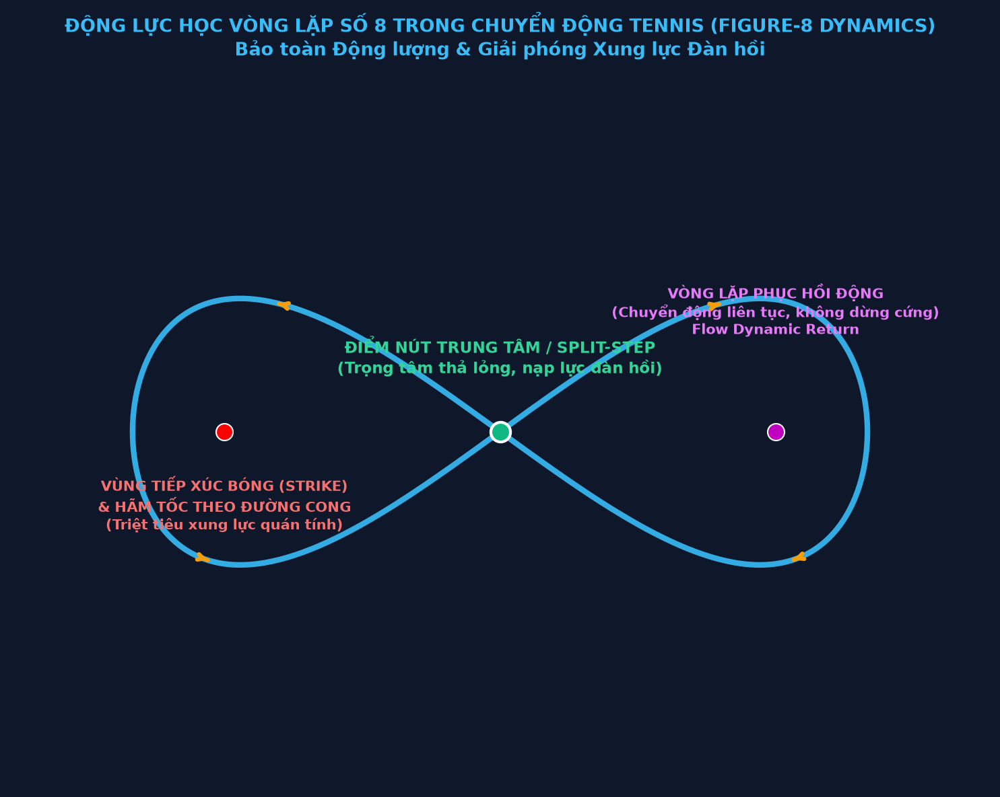
CHƯƠNG 8: ĐỘNG LỰC HỌC KHÔNG GIAN CỦA CÚ FOREHAND HIỆN ĐẠI
8.1. Forehand như vũ khí không gian
Forehand là cú đánh tấn công chủ lực trong tennis hiện đại. Nhưng ở cấp độ không gian học, forehand không chỉ là một cú đánh — nó là hệ thống kiểm soát lãnh thổ.
Hiểu forehand như một hệ thống không gian có nghĩa là hỏi: không phải "làm thế nào để đánh forehand tốt?" mà là "forehand có thể tạo ra những thay đổi không gian nào, và khi nào nên dùng từng loại?"
Cú forehand hiện đại có thể thực hiện nhiều chức năng không gian khác nhau:
- Territorial expansion: Kéo giãn đối thủ để mở sân
- Temporal compression: Lấy bóng sớm để nén thời gian của đối thủ
- Height manipulation: Thay đổi strike zone của đối thủ qua topspin nặng
- Direction change: Đảo ngược hướng loạt bóng đột ngột
- Angle creation: Tạo ra góc khó để mở sân cho winner
8.2. Biomechanics của Forehand hiện đại — Nền tảng không gian
Để hiểu tại sao forehand hiện đại tạo ra spatial effects đặc biệt như vậy, cần hiểu cơ bản về biomechanics:
Kinetic Chain (Chuỗi động học): Năng lượng trong forehand hiện đại bắt đầu từ mặt đất và di chuyển qua: chân → hông → core/thân → vai → cánh tay → cổ tay → vợt → bóng.
Điều quan trọng: mỗi "link" trong chain này phải được timing đúng. Nếu một link kích hoạt quá sớm hoặc quá muộn, power và control bị ảnh hưởng.
Open Stance vs. Closed Stance:
- Open stance (chân song song với baseline): Cho phép hip rotation nhanh hơn, tốt cho defensive hoặc on-the-rise hits. Spatial effect: có thể đánh nhanh hơn từ nhiều vị trí khác nhau.
- Closed stance (chân trước hướng về lưới): Cho phép body weight transfer tốt hơn, tốt cho offensive shots. Spatial effect: tạo ra pace và depth tốt hơn khi có thời gian setup.
Contact Point: Điểm tiếp xúc lý tưởng cho forehand topspin là bên cạnh và hơi trước thân, ở khoảng chiều cao thắt lưng đến ngực. Nhưng điểm tiếp xúc thực tế phải thích nghi với height và speed của bóng đến.
Wrist Action: Cổ tay trong forehand topspin không phải là "snap" cơ bắp chủ động — nó là elastic release của tension tích lũy trong cổ tay trong backswing. Điều này tạo ra racket head acceleration tự nhiên thay vì forced.
8.3. Các loại Forehand theo mục đích không gian
Heavy Topspin Forehand (Forehand topspin nặng): Mục đích không gian: Đẩy đối thủ ra sau và thay đổi strike zone lên cao. Kỹ thuật: Low-to-high swing path mạnh, heavy wrist lag, aggressive follow-through. Khi dùng: Xây dựng rally, tạo áp lực liên tục, trên clay, khi muốn "neutralize" pace của đối thủ.
Flat Forehand (Forehand phẳng): Mục đích không gian: Tạo tốc độ và temporal compression tối đa. Kỹ thuật: Swing path phẳng hơn, full weight transfer, contact point hơi trước. Khi dùng: Khi bóng đến thoải mái (mid-height, không quá nhanh), khi muốn "flatten out" để tấn công.
Inside-Out Forehand: Mục đích không gian: Tấn công từ trung tâm sang góc backhand của đối thủ bằng forehand. Kỹ thuật: Chạy vòng backhand, swing toward outside-in direction. Khi dùng: Khi muốn tấn công backhand yếu của đối thủ bằng vũ khí forehand mạnh của bạn. Rất mạnh vì: bạn dùng vũ khí mạnh nhất để tấn công điểm yếu nhất của đối thủ.
Inside-In Forehand: Mục đích không gian: Đánh forehand sang góc forehand của đối thủ từ trung tâm — direction bất ngờ. Kỹ thuật: Chạy vòng backhand, swing straight through sang phía forehand của đối thủ (down-the-line nhưng từ center). Khi dùng: Khi đối thủ đang di chuyển về phía backhand để đón inside-out. Cú inside-in surprise họ.
Short Angle Forehand (Forehand góc ngắn sắc): Mục đích không gian: Kết thúc điểm hoặc mở sân rộng mà không cần pace. Kỹ thuật: Brush across ball với heavy topspin, aim toward alley, low over net. Khi dùng: Khi đối thủ đang ở vị trí xa hoặc mất balance, khi có setup tốt.
8.4. Forehand Pattern Play — Các mẫu chiến thuật
Forehand không được sử dụng ngẫu nhiên. Tay vợt chuyên nghiệp có các "patterns" — chuỗi cú đánh được thiết kế để tạo ra tình huống cụ thể:
Pattern 1: Forehand Crosscourt → Attack Down-the-Line
- Đánh forehand crosscourt sang backhand của đối thủ (xây dựng pressure)
- Kéo đối thủ sang trái (từ góc nhìn của bạn)
- Khi đối thủ trả lại crosscourt, bạn đang ở vị trí setup cho forehand down-the-line
- Đánh forehand down-the-line sang forehand của đối thủ khi họ đang di chuyển ngược chiều
Pattern 2: Inside-Out → Inside-In
- Đánh inside-out forehand sang backhand của đối thủ
- Đối thủ bắt đầu anticipate inside-out (di chuyển sang phải để đón)
- Bất ngờ chuyển sang inside-in sang forehand của họ
- Đối thủ đang di chuyển sai hướng
Pattern 3: Heavy Topspin Foundation → Flat Attack
- 3-4 cú heavy topspin liên tục (đẩy đối thủ sâu và calibrate nhịp điệu nảy cao)
- Đối thủ đã "set up" cho topspin cao
- Flat attack bất ngờ — đến sớm hơn, thấp hơn dự kiến
- Đối thủ timing sai
8.5. On-The-Rise Forehand — Vũ khí thay đổi cuộc chơi
Đánh forehand on-the-rise (khi bóng vừa bật lên sau khi nảy, trước khi đạt đỉnh) là một trong những kỹ thuật phân biệt player giỏi với player bình thường.
Tại sao khó:
- Contact point thay đổi liên tục (bóng đang di chuyển lên)
- Ít thời gian để setup
- Cần timing chính xác cao
Tại sao hiệu quả:
- Bóng đến đối thủ nhanh hơn (ít thời gian họ cần phản ứng)
- Bạn đứng trong sân hơn (nhiều angle options hơn)
- Không cho đối thủ "settle" sau cú đánh của họ
- Tâm lý: đối thủ cảm thấy bị áp lực ngay cả khi họ đánh tốt
Cách tập on-the-rise: Bắt đầu với ball machine feed chậm và ổn định. Tập đánh bóng ngay khi nó bắt đầu bật lên (khoảng 10-15 cm từ mặt sân), không phải ở đỉnh. Dần dần tăng tốc độ bóng đến.
8.6. Disguise và Deception trong Forehand
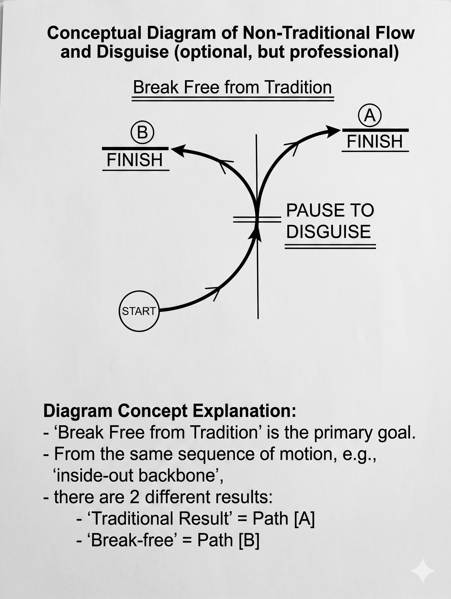
Một forehand thực sự nguy hiểm không chỉ là forehand mạnh — nó là forehand khó đọc. Disguise (che giấu hướng đánh) là kỹ năng nâng cao quan trọng.
Cơ chế disguise:
- Backswing và preparation giống nhau cho crosscourt và down-the-line
- Hướng thực sự chỉ được "reveal" ở contact point — quá muộn để đối thủ phản ứng tốt
- Federer đặc biệt giỏi điều này: cùng một motion, hai hướng hoàn toàn khác
Technical elements của disguise:
- Neutral shoulder turn (không lean về hướng muốn đánh)
- Delayed contact decision (quyết định hướng sát contact point nhất có thể)
- Consistent eye contact with ball (không "look away" sớm để signal direction)
8.7. Forehand ở các tình huống phòng thủ
Forehand không chỉ là vũ khí tấn công — đôi khi bạn phải đánh forehand từ tình huống phòng thủ (bị áp lực, vị trí xấu, thời gian ít). Trong những tình huống này, mục tiêu không gian thay đổi:
Defensive forehand goals:
- Duy trì rally (không mắc lỗi)
- Mua thời gian phục hồi (sử dụng height và depth)
- Neutralize pressure (trả lại bóng đủ an toàn để cải thiện vị trí)
- Tạo cơ hội chuyển sang tấn công
Kỹ thuật defensive forehand:
- Swing shorter (ít full swing hơn)
- Add more height (đánh qua lưới với nhiều clearance hơn)
- Add more topspin (để bóng xuống sân an toàn từ vị trí difficult)
- Aim middle of court (ít risk hơn angles khi defensive)
8.8. Forehand Coordination với Movement
Forehand không thể tách rời khỏi movement. Cú forehand tốt nhất được thực hiện khi bạn đã arrive tốt — đúng vị trí, đủ thời gian, balance tốt.
Coordination principles:
- Arrive trước bóng, không cùng lúc: Lý tưởng nhất là đến vị trí đánh khoảng 0.5-1 giây trước bóng. Điều này cho phép settle và setup.
- Last-second adjustment: Luôn để lại 1-2 small steps cuối cùng để fine-tune position dựa trên bounce của bóng.
- Recover as you finish swing: Ngay khi contact, bắt đầu weight transfer về hướng recovery. Không hoàn thành swing rồi mới nghĩ đến recovery.
8.9. Case Study: Federer vs Nadal — Hai triết lý Forehand không gian
Không có cách nào tốt hơn để hiểu forehand như một hệ thống không gian bằng cách phân tích hai bậc thầy đối lập nhau:
Roger Federer — Triết lý Angle và Speed: Federer sử dụng forehand chủ yếu như một angle creator. Topspin của ông không quá nặng theo tiêu chuẩn hiện đại, nhưng khả năng tạo angle bất ngờ và speed của ông tạo ra áp lực theo cách khác: đối thủ không biết bóng sẽ đến đâu.
Rafael Nadal — Triết lý Depth và Height: Nadal sử dụng forehand như một heavy artillery — kiên nhẫn, liên tục, và crushing. Topspin của ông nặng hơn bất kỳ ai trong lịch sử, tạo ra bóng nảy cao hơn và áp lực strike zone không ngừng nghỉ.
Bài học: Cả hai đều thành công với triết lý ngược nhau. Điều này chứng tỏ không có "forehand hoàn hảo" duy nhất — có nhiều con đường đến spatial control. Điều quan trọng là consistency với triết lý của bạn và awareness về những gì bạn đang cố gắng đạt được về mặt không gian.
8.10. Tổng kết — Forehand là ngôn ngữ tấn công
Forehand hiện đại không phải là một cú đánh — nó là một ngôn ngữ phong phú với nhiều "từ" (loại forehand khác nhau) và "câu" (patterns và sequences). Người chơi tennis giỏi nói ngôn ngữ này một cách tự nhiên, chọn "từ" phù hợp với "ngữ cảnh" (tình huống chiến thuật) và kết hợp chúng thành "câu" có ý nghĩa (tactical sequences).
Phát triển forehand như một hệ thống không gian đòi hỏi:
- Nắm vững kỹ thuật cơ bản (cơ chế đủ tốt để thực hiện ý định)
- Hiểu mục đích không gian của từng loại forehand
- Luyện tập các patterns trong context thực tế
- Phát triển feel cho khi nào dùng loại nào
CHƯƠNG 9: ĐỘNG LỰC HỌC KHÔNG GIAN CỦA BACKHAND
9.1. Backhand trong hệ thống không gian
Backhand thường được coi là "cánh yếu hơn" — cú đánh cần bảo vệ thay vì tấn công. Nhưng ở cấp độ chuyên nghiệp, đây là quan niệm sai lầm. Backhand, khi được hiểu như một hệ thống không gian, có những chức năng độc đáo mà forehand không thể thay thế.
Trong thực tế, backhand đóng một vai trò không gian khác biệt và bổ sung cho forehand:
- Forehand = Vũ khí tấn công chủ lực, angle creator, temporal compressor
- Backhand = Structural stabilizer, directional changer, pace neutralizer
Tay vợt chỉ dựa vào forehand và "chạy quanh" backhand bị hạn chế nghiêm trọng về mặt không gian — họ có thể bị khai thác bằng cách buộc phải chạy sang bên kia sân mỗi lần backhand.
9.2. Two-Handed Backhand vs One-Handed Backhand — Hai triết lý không gian
Có hai loại backhand chính, mỗi loại có triết lý không gian khác nhau:
Two-handed backhand (Backhand hai tay):
Ưu điểm không gian:
- Temporal compression: Hai tay cho phép đánh bóng muộn hơn mà vẫn tạo ra tốc độ (tay không thuận "pull through" ở cuối). Điều này cho phép hide direction lâu hơn.
- Power in tight positions: Trong tình huống bị áp lực (bóng cao, bóng vào thân), hai tay tạo ra lực tốt hơn một tay.
- Consistency: Cơ chế ổn định hơn dưới áp lực.
Nhược điểm không gian:
- Reach limitation: Ít reach hơn một tay — bóng rộng đến forehand side buộc phải "chạy xa hơn" hoặc slice.
- Slice versatility thấp hơn: Ít flexible hơn trong slice variations.
One-handed backhand (Backhand một tay):
Ưu điểm không gian:
- Reach: Nhiều reach hơn, có thể xử lý bóng xa bên thân.
- Slice diversity: Slice một tay cực kỳ đa dạng và khó đọc.
- Drop shot và angle: Dễ tạo ra touch shots và sharp angles hơn.
- Height variety: Có thể hit bóng rất cao (overhead-like) hoặc rất thấp.
Nhược điểm không gian:
- Vulnerability to high balls: Bóng nảy cao hơn vai — extremely awkward với one-handed backhand.
- Timing window narrower: Cần contact point chính xác hơn.
9.3. Backhand Crosscourt — Cột trụ của rally structure
Giống như forehand crosscourt, backhand crosscourt là "xương sống" của baseline rally structure vì những lý do hình học tương tự (khoảng cách dài, lưới thấp hơn, sự dịch chuyển ngang lớn).
Nhưng backhand crosscourt có một đặc điểm không gian độc đáo: nó thường rất khó để tấn công từ backhand side của đối thủ (nếu cả hai là tay phải). Khi cả hai đang đánh backhand crosscourt với nhau, cả hai đều đang dùng "arm phòng thủ" hơn — ít powerful hơn forehand. Rally trong pattern này thường kéo dài hơn.
Đây là lý do tại sao nhiều chiến thuật cố gắng break backhand-to-backhand rally pattern bằng cách redirect sang forehand side — đây là cú đánh tấn công phá vỡ cấu trúc an toàn.
9.4. Backhand Down-the-Line — Cú phá cấu trúc
Backhand down-the-line là một trong những cú khó nhất trong tennis kỹ thuật, nhưng cũng là một trong những cú có giá trị chiến thuật cao nhất.
Tại sao khó:
- Phải đánh qua phần lưới cao hơn (gần cột) từ bên backhand
- Ít room để sai về depth
- Cần contact point sớm hơn bình thường
Tại sao giá trị:
- Bất ngờ hoàn toàn nếu rally đang theo pattern backhand crosscourt
- Đối thủ đang cover phía crosscourt, đột ngột bóng đến forehand của họ
- Mở ra toàn bộ sân crosscourt cho cú tấn công tiếp theo của bạn
Khi nào dùng:
- Khi bạn có setup tốt (thời gian và balance đủ)
- Khi đối thủ đang "leaning" về phía crosscourt
- Sau khi đã establish backhand crosscourt pattern vài lần
- Khi điểm quan trọng và bạn cần something unexpected
9.5. Backhand Slice — Vũ khí đa năng
Slice backhand là một trong những cú đánh versatile nhất trong tennis. Ở cấp độ không gian, slice tạo ra những thay đổi cực kỳ quan trọng:
Spatial effects của slice:
- Height change: Bóng thấp và nảy thấp — thay đổi strike zone từ cao (topspin) sang thấp (slice).
- Pace change: Chậm hơn đáng kể so với topspin — thay đổi temporal rhythm.
- Trajectory change: Flat với backspin, bóng "trôi" và "skid" sau khi nảy.
- Bounce direction change: Backspin làm bóng nảy tiếp tục theo hướng cũ thay vì bật lên cao — khó xử lý hơn.
Khi nào dùng slice:
- Khi bị áp lực (slice là cú phòng thủ tốt nhất — margin cao, nhiều thời gian)
- Khi muốn thay đổi nhịp điệu (sau nhiều cú topspin)
- Khi muốn "come to net" — slice thấp và sâu kéo đối thủ vào court, mở sân cho bạn approach
- Khi muốn tạo "low ball" — buộc đối thủ nhấc bóng lên, tạo ra cú tấn công tiếp theo
9.6. Rising Ball Backhand — Đọc tốc độ
Backhand on the rise (giống forehand on the rise) là kỹ thuật cấp cao tạo ra temporal pressure. Djokovic đặc biệt nổi tiếng với khả năng này — ông thường xuyên đứng trong service box để đánh backhand trả lại, trong khi hầu hết tay vợt khác phải đứng 1-2 mét sau baseline.
Spatial implications: Khi Djokovic đánh backhand on the rise từ trong service box, ông:
- Nén thời gian phản ứng của đối thủ xuống mức tối thiểu
- Tạo ra angles mà không thể tạo ra từ behind baseline
- Tâm lý: đối thủ cảm thấy bị "dồn ép" ngay cả khi họ vừa đánh cú tưởng là mạnh
9.7. Return Backhand — Vị trí và Chiến lược
Khi đứng để trả lại serve về phía backhand, vị trí standing của bạn tạo ra sự đánh đổi không gian:
Đứng xa (Deep):
- Nhiều thời gian hơn để phản ứng
- Dễ xử lý tốc độ cao
- Nhưng: bóng trả lại ngắn hơn, ít áp lực hơn lên server
- Tốt cho: khi serve của đối thủ rất mạnh hoặc bạn muốn play safe
Đứng gần (Inside baseline):
- Nén thời gian của server (bóng trả lại đến server nhanh hơn)
- Tạo áp lực ngay từ đầu điểm
- Nhưng: ít thời gian hơn để phản ứng
- Tốt cho: khi serve của đối thủ predict được, khi muốn aggressive return strategy
9.8. Backhand Tactical Sequences
Sequence 1: Backhand Crosscourt Build → Backhand Down-the-Line Attack
- 2-3 cú backhand crosscourt sâu để push đối thủ back và sang right
- Đối thủ anticipate tiếp tục crosscourt
- Bất ngờ đánh backhand down-the-line sang forehand họ
- Hiệu quả nhất khi down-the-line đủ deep và họ đang moving toward crosscourt
Sequence 2: Slice → Approach Net
- Đánh backhand slice thấp và sâu sang backhand của đối thủ
- Bóng thấp buộc đối thủ đánh nhấc lên từ thấp
- Cú trả lại thường ngắn → bạn approach net
- Kết thúc với volley từ gần lưới
Sequence 3: Backhand High Defense → Crosscourt Redirect
- Đang bị áp lực nặng, bóng đến high và fast
- Defensive backhand với height và spin cao, sang crosscourt
- Bóng sâu và cao "neutralize" áp lực
- Mua thời gian để phục hồi vị trí
9.9. Developing a "Weapon" Backhand
Nhiều tay vợt (đặc biệt người học tennis từ muộn) có backhand yếu hơn forehand đáng kể. Trong khi đây là bình thường, nó tạo ra một điểm yếu không gian rõ ràng mà đối thủ có thể khai thác.
Strategies để develop stronger backhand:
Technical approach:
- Focus riêng lên backhand trong drill sessions (không để forehand "steal the spotlight")
- Use ball machine để tập pure backhand volume
- Video analysis để identify technical weaknesses
Tactical approach:
- Practice patterns mà backhand là shot cuối (buộc mình finish với backhand)
- Play points với restriction: backhand thắng điểm nhiều hơn = bonus points
- Build confidence bằng cách chọn match situations favorable cho backhand
Spatial approach:
- Understand natural backhand strengths (slice, slice variety, certain angles)
- Build game around những strengths đó thay vì copy forehand-style
- Backhand crosscourt sâu là nền tảng — master điều này trước
9.10. Backhand như công cụ kiểm soát rally
Cuối cùng, cách tốt nhất để nghĩ về backhand trong hệ thống không gian: backhand là công cụ kiểm soát, forehand là công cụ tấn công.
Backhand tốt không cần phải winner nhiều — nó cần phải:
- Consistent (ít lỗi)
- Deep (áp lực constant)
- Directional (có thể thay đổi hướng khi cần)
- Versatile (slice khi cần, topspin khi có)
Tay vợt với backhand tốt như này khiến đối thủ không thể "target" backhand thoải mái — mỗi lần họ tấn công backhand, họ nhận lại một backhand sâu và stable. Từ đó, forehand của bạn sẽ có nhiều cơ hội tấn công hơn vì đối thủ không thể establish pattern tấn công backhand hiệu quả.
CHƯƠNG 15: CHUYỂN ĐỘNG DỰA TRÊN SÓNG VÀ TRUYỀN LỰC ĐÀN HỒI
15.1. Vượt ra khỏi Cơ học — Wave Movement
Trong hầu hết các sách về tennis, chuyển động được mô tả theo ngôn ngữ cơ học: gối uốn, hông quay, vai xoay, cánh tay vung. Đây là cách tiếp cận hợp lý và có giá trị.
Nhưng ở cấp độ đỉnh cao, chuyển động thực sự không chỉ là cơ học. Nó là wave-based (dựa trên sóng) — năng lượng truyền qua cơ thể như sóng qua một môi trường đàn hồi.
Khi Federer đánh một forehand ở 120 mph trông nhẹ nhàng đến mức khó tin, đó không phải vì ông "cơ học hoàn hảo". Đó là vì ông đang giải phóng sóng tích lũy trong cơ thể, không ép lực từ cơ bắp.
15.2. Fascia — Mạng lưới truyền lực bí ẩn
Fascia là một hệ thống mô liên kết chạy xuyên suốt toàn bộ cơ thể — bao quanh mọi cơ, gân, xương và cơ quan. Trong nhiều thập kỷ, fascia bị coi là "không quan trọng", chỉ là lớp đệm giữ mọi thứ lại với nhau.
Nhưng nghiên cứu hiện đại cho thấy fascia là một hệ thống truyền lực chủ động:
- Fascia có khả năng đàn hồi: nó kéo dài và co lại như một lò xo
- Lực có thể truyền qua fascia mà không cần co cơ chủ động
- Toàn bộ cơ thể được kết nối qua fascia như một tensegrity structure (cấu trúc căng trước)
Trong tennis: Khi bạn load (tải) cho một forehand — xoay người, kéo vai ra sau, cong đầu gối — bạn đang kéo dài fascia. Fascia tích trữ elastic energy (năng lượng đàn hồi). Khi bạn release (giải phóng), energy đó "bắn" qua hệ thống fascia, tạo ra lực mà không cần cơ bắp co chủ động toàn bộ.
15.3. Elastic Energy Storage và Release
Hiểu elastic energy là hiểu tại sao tennis không phải là "brute force" mà là timing và relaxation:
Loading phase (Giai đoạn tải): Trong backswing và preparation, bạn đang "kéo dài" hệ thống đàn hồi:
- Vai xoay ra sau
- Hông xoay
- Đầu gối cong
- Wrist lagging back
Đây là giai đoạn tích trữ energy. Cơ bắp không phải là cứng — chúng đang eccentrically loaded (kéo dài trong khi mang tải).
Transition phase (Giai đoạn chuyển đổi): Đây là moment quan trọng nhất — khi body chuyển từ loading sang release. Nếu cơ bắp "grab" (gồng) quá sớm ở đây, elastic energy bị "chặn lại". Cần relaxation để cho phép energy truyền tự do.
Release phase (Giai đoạn giải phóng): Energy "bắn" qua chuỗi: đất → chân → hông → core → vai → cánh tay → cổ tay → vợt. Không phải sequence cơ học tuần tự — mà là wave truyền.
15.4. Ground Reaction Force — Bắt đầu từ đất
Mọi chuyển động mạnh trong tennis bắt đầu từ tương tác với mặt đất. Đây là nguyên lý vật lý cơ bản: để tạo ra force, bạn cần push off something.
Ground reaction force (GRF): Khi bạn push xuống đất, đất push ngược lại với lực bằng và ngược chiều (Newton's 3rd law). Lực này, nếu được hướng đúng, truyền lên qua cơ thể và trở thành lực trong swing của bạn.
Ứng dụng trong tennis:
- Forehand: Chân trái (với người phải) push xuống đất và sang phải, tạo GRF đẩy hông lên và xoay
- Serve: Hai chân push xuống trong leg drive, tạo GRF đẩy toàn thân lên
- Backhand: Chân phải push, creating rotational GRF
Key insight: Tay vợt mạnh nhất không nhất thiết là người có cánh tay mạnh nhất — họ là người sử dụng GRF hiệu quả nhất. Đây là lý do tại sao tập squat và leg press không trực tiếp cải thiện tennis power bằng cách tập functional leg drive trong context tennis.
15.5. Jack Broudy và Non-Linear Tennis
Jack Broudy, người phát triển hệ thống "Non-Linear Tennis" và "The 8 System", là một trong những người đầu tiên mô tả wave-based movement trong tennis theo cách có hệ thống.
Core concepts của Broudy:
Figure-8 motion: Thay vì chuyển động thẳng (linear) trong swing, cơ thể di chuyển theo các vòng lặp hình số 8 — spiral motions liên tục. Điều này maximize elastic energy storage và release.
Inner body initiation: Chuyển động bắt đầu từ bên trong (fascia, core) không phải bên ngoài (tay, cánh tay). Tay chỉ "follow" cơ thể, không "lead."
Continuous motion: Không có "stop points" trong swing — mọi thứ đều flow liên tục từ preparation đến follow-through.
Relaxation as power: Cơ bắp relaxed dẫn điện tốt hơn cơ bắp tight. Relaxation cho phép elastic energy truyền; tension blocks nó.
15.6. The Wave Model vs. The Mechanical Model
Để hiểu rõ sự khác biệt, hãy so sánh hai cách mô tả cùng một cú forehand:
Mechanical model: "Bend your knees, rotate your hips, turn your shoulders, extend your arm, roll your wrist, follow through."
Đây là correct nhưng không complete. Nó mô tả what nhưng không đầy đủ về how năng lượng truyền.
Wave model: "Load through ground contact, allow elastic energy to build through hip and shoulder rotation, relax into the transition, let the wave travel up through core and shoulder, arm follows the shoulder wave, wrist releases naturally at contact."
Wave model mô tả cơ thể như một hệ thống truyền năng lượng dynamic, không phải như một chuỗi cơ học.
15.7. Proprioception và Wave Development
Để phát triển wave-based movement, bạn cần phát triển proprioception — cảm nhận chính xác về những gì đang xảy ra bên trong cơ thể.
Exercises để phát triển body awareness:
Slow motion practice: Thực hiện swing rất chậm (10% tốc độ bình thường), focus vào cảm nhận sequence của energy truyền. Bạn có thể cảm nhận được từng giai đoạn không?
Contrast training: Đánh một cú với "force" (tight muscles) rồi một cú với "release" (relaxed). Cảm nhận sự khác biệt về sound (tiếng rền vợt), feel, và kết quả.
Breathing and relaxation: Exhale trong impact — khi thở ra, cơ bắp naturally relaxes, cho phép elastic release tốt hơn.
15.8. Tai Chi và Tennis — Wisdom cổ đại cho Sport hiện đại
Nhiều principles của Tai Chi align với wave-based tennis:
Song (Sung/Relaxation): Tai Chi nhấn mạnh "song" — trạng thái relaxed alertness, không flaccid nhưng không tense. Trong tennis: muscles ready nhưng không tight.
Peng (Ward-Off Energy): Cấu trúc tensegrity — body như một inflated structure, có structural integrity mà không cần muscular tension. Trong tennis: body structure cho phép transfer lực mà không "collapse."
Yi (Intent leads, body follows): Trong Tai Chi, intention (yi) leads và body follows. Trong tennis: mental image của cú đánh muốn thực hiện dẫn dắt cơ thể, không phải muscular commands.
Continuity of movement: Tai Chi không có stop points — mọi thứ flow. Trong tennis: từ preparation đến follow-through là một dòng liên tục.
15.9. Wave Movement và Injury Prevention
Một lợi ích quan trọng của wave-based movement không được nói đến đủ: giảm risk chấn thương.
Khi bạn force lực (tight muscles):
- Joints chịu impact forces mà không có elastic dampening
- Micro-trauma tích lũy dẫn đến overuse injuries (tennis elbow, shoulder tendinitis)
- Recovery sau mỗi session chậm hơn
Khi bạn release wave:
- Fascia network absorb và distribute forces
- Joints chịu ít stress hơn
- Cơ thể recover nhanh hơn
- Sustainable trong thời gian dài hơn
Đây là lý do tại sao nhiều tay vợt professional chơi đến 35-40 tuổi — những người như Federer (chơi đến gần 42) đã phát triển movement efficiency cao, giảm tổng tải trọng tích lũy lên joints và connective tissue.
15.10. Implementing Wave Tennis — Từng bước thực tế
Bước 1: Nhận ra và Release Tension Trước mỗi buổi tập, kiểm tra các areas tension trong cơ thể: cổ, vai, cánh tay, bàn tay. Release tension này thông qua gentle rotation và deep breathing.
Bước 2: Ground Connection Thực hành cảm nhận GRF — đứng nhẹ và cảm nhận sức nặng qua lòng bàn chân. Tập tiny bounces để cảm nhận ground connection.
Bước 3: Elastic Loading Trong practice swings, deliberately exaggerate loading phase — cảm nhận vai và hông kéo ra và back. Rồi "let go" và observe bóng đi đâu.
Bước 4: Shadow Swings với Focus Thực hiện shadow swings (không bóng) focus vào:
- Sequence bắt đầu từ đất
- Shoulder và hip rotation feeling
- Natural wrist release tại contact point
- Follow-through là kết quả của wave, không phải muscular action
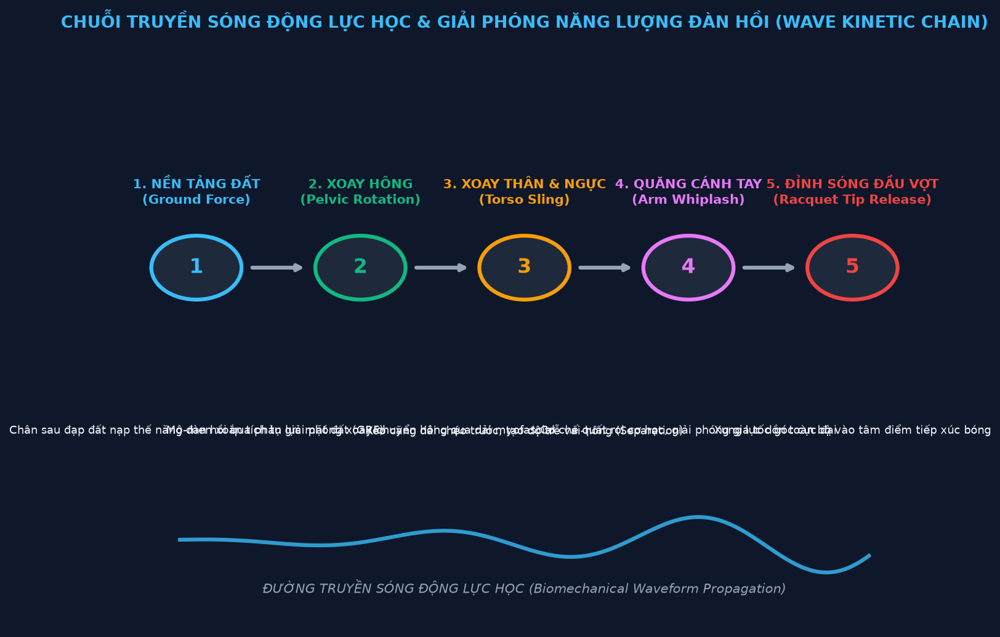
PHẦN 3: CHIẾN TRANH TẤN CÔNG, PHÒNG THỦ & ĐÁNH CHẶN LƯỚI
CHƯƠNG 10: SERVE NHƯ MỘT HỆ THỐNG THỐNG TRỊ KHÔNG GIAN
10.1. Serve là gì trong hệ thống không gian?
Serve là cú đánh duy nhất trong tennis mà bạn hoàn toàn kiểm soát — không có đối thủ tấn công bạn, không có áp lực thời gian, không có phản ứng cần thiết. Chỉ có bạn và quả bóng và ý định.
Đây là cơ hội vàng để thiết lập cấu trúc không gian của điểm ngay từ đầu.
Tuy nhiên, nhiều tay vợt lãng phí cơ hội này bằng cách chỉ focus vào tốc độ serve. Serve nhanh nhất không phải lúc nào cũng là serve tốt nhất về mặt không gian. Serve tốt nhất là serve thiết lập tình huống có lợi nhất cho cú đánh tiếp theo của bạn.
Ba mục tiêu không gian của serve:
- Vô hiệu hóa ngay lập tức — Ace hoặc serve khiến người nhận không thể trả lại đủ tốt để gây áp lực
- Thiết lập tình huống — Buộc người nhận trả lại theo một hướng có thể dự đoán, chuẩn bị sẵn cú đánh +1
- Kiểm soát nhịp điệu — Sử dụng variety (wide, body, T) và spin để không cho người nhận "settle" vào pattern trả lại
10.2. Hình học của Service Box — Tư duy như người giao bóng
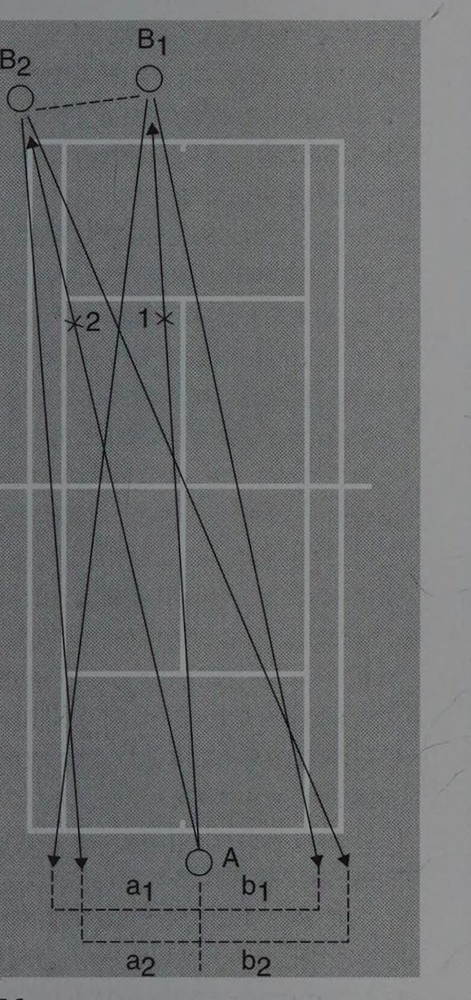
Hãy nhìn service box từ góc độ của người giao bóng:
Từ Deuce court (phải của server):
- Wide serve: Kéo người nhận ra ngoài phía phải (forehand với người phải hoặc backhand với người trái). Mở ra toàn bộ phía trái sân cho +1 attack.
- T serve: Vào đường T, sang backhand của người nhận (người phải). Hard to attack từ position này.
- Body serve: Vào thân, "jam" người nhận. Trả lại thường yếu và không có angle.
Từ Ad court (trái của server):
- Wide serve: Kéo ra phía trái (backhand của người phải). Excellent để force weak backhand return.
- T serve: Vào forehand của người nhận. Có thể nguy hiểm nếu forehand của họ mạnh, nhưng also có thể create angle.
- Body serve: Vào thân từ phía này, cũng hiệu quả.
10.3. Serve Speed vs. Placement — Cuộc tranh luận không gian
Có một cuộc tranh luận lâu dài trong tennis: serve cần mạnh hay chính xác hơn?
Câu trả lời đúng theo góc nhìn không gian: placement quan trọng hơn speed trong phần lớn tình huống.
Lý do:
Thứ nhất, một serve 210 km/h vào giữa service box (dễ đọc, nảy thoải mái) ít hiệu quả hơn một serve 170 km/h vào wide corner chuẩn xác, buộc người nhận ra ngoài sân.
Thứ hai, placement tạo ra "serve + 1 setup" (như đã đề cập). Speed mà không có placement chỉ tạo ra ace hoặc return mà bạn không control được hướng.
Thứ ba, serve nhanh nhưng không có placement dễ bị "read" — người nhận biết rằng server chỉ serve flat và hard, không có variation. Họ có thể camp trên một side.
Tuy nhiên, speed không phải không quan trọng: Serve quá chậm (<150 km/h) cho người nhận quá nhiều thời gian để setup và attack. Cần đủ speed để tạo pressure, sau đó placement làm phần còn lại.
Optimal range: 160-190 km/h với placement chuẩn xác và spin variation thường hiệu quả hơn 220 km/h flat không có strategy.
10.4. Spin Serve — Công cụ không gian đặc biệt
Spin serve (slice serve và kick serve) thêm một chiều kích không gian hoàn toàn mới:
Slice Serve: Sidespin khiến bóng curve sang ngang trong không khí và "skid" sau khi nảy (không nảy lên cao, tiếp tục di chuyển ngang).
Spatial effect: Kéo người nhận ra ngoài sân theo đường cong. Wide slice serve từ Deuce court curve ra ngoài sang phía forehand của người phải, "kéo" họ ra ngoài sân hơn một serve thẳng.
Kick Serve (American Twist): Topspin với sidespin tạo ra bóng nảy cao và "kick" sang một bên.
Spatial effect: Bóng nảy lên vai hoặc trên vai người nhận — awkward strike zone. Từ Ad court, kick serve sang backhand của người phải có thể nảy lên cao ra khỏi comfort zone hoàn toàn.
Second Serve và Spatial Strategy: Second serve phải đáng tin cậy (vào sân) nhưng cũng phải chiến lược. Nhiều tay vợt chơi second serve an toàn quá mức — chậm và ngắn, mời đối thủ tấn công. Second serve tốt nhất là kick serve sâu sang backhand — spin đảm bảo vào sân (cao qua lưới, topspin kéo xuống) trong khi vẫn gây áp lực qua height và placement.
10.5. Serve + 1 — Kiến trúc điểm ngay từ đầu
Khái niệm "Serve + 1" nghĩa là: serve được thiết kế không chỉ để vào sân mà còn để setup cú đánh thứ hai của bạn.
Ví dụ cụ thể:
Wide serve từ Deuce court + Forehand Inside-In:
- Serve wide sang forehand của người nhận (tay phải)
- Người nhận bị kéo ra ngoài sân, trả lại về phía backhand của bạn (crosscourt direction tự nhiên nhất từ vị trí của họ)
- Bạn đã anticipate điều này và đang setup cho forehand inside-in sang forehand của họ (nơi họ vừa rời đi)
- Winner hoặc setup tốt
T serve từ Ad court + Backhand Crosscourt Attack:
- Serve T sang forehand của người nhận từ Ad court
- Người nhận phải trả lại về phía backhand của bạn (khó tạo angle từ forehand)
- Bạn setup cho backhand tấn công sang wide angle crosscourt (nơi sân đang open)
Body serve + Approach Net:
- Serve vào thân khiến người nhận không thể tạo angle
- Trả lại thường thẳng và trung bình
- Bạn đã bắt đầu move forward, approach net, đánh volley kết thúc
10.6. Reading the Return — Phân tích và Dự đoán
Một server giỏi không chỉ serve và chờ xem điều gì xảy ra — họ dự đoán return và bắt đầu chuẩn bị cho +1 ngay khi bóng serve rời tay.
Dự đoán return dựa trên:
- Loại serve: Wide buộc người nhận đánh theo một direction hẹp hơn
- Vị trí người nhận: Đứng xa → trả lại crosscourt để cover. Đứng trong → nhiều options hơn
- Pattern đã thiết lập: Người nhận này thường làm gì với loại serve này?
- Mức thể lực: Mệt → trả lại crosscourt và ngắn. Tươi → có thể tấn công
Dựa trên dự đoán này, server bắt đầu shift weight và position sớm, "mua" thêm thời gian cho cú +1.
10.7. Serve Pressure Zones — Mapping áp lực serve
Giống như rally có pressure zones (Chương 3), serve có pressure zones trong service box:
High pressure zones (Vùng khó xử lý nhất):
- Wide corner: Buộc người nhận ra ngoài sân, ít options
- Body at hip: "Jam" người nhận, không có swing room
- T deep: Vào body nhưng theo hướng T, thêm hướng pressure
Lower pressure zones:
- Middle of service box: Dễ xử lý nhất, người nhận có nhiều options
- Serve ngắn và chậm: Mời tấn công
Server có chiến lược tốt "work" around high pressure zones, không phải ngẫu nhiên serve vào bất kỳ đâu.
10.8. Return Positioning như Phản chiếu Serve Strategy
Người nhận cũng có spatial decisions quan trọng dựa trên serve của đối thủ:
Stand deep: Nhiều thời gian hơn nhưng ít attack angle hơn. Tốt khi serve rất fast và flat.
Stand inside baseline: Nén thời gian reaction của server. Tốt khi second serve hoặc khi muốn attack. Nguy hiểm nếu server có kick serve sang high zone.
Stand wider: Đón wide serve tốt hơn nhưng để T serve ít thời gian hơn. Trade-off rõ ràng.
Sophisticated receiver thay đổi vị trí tùy theo situation để prevent server từ việc "farm" một pattern trả lại.
10.9. Psychological Dimensions của Serve
Serve cũng có chiều kích tâm lý không gian:
Confidence projection: Server tự tin, ready routine nhất quán, không rush tạo ra "ownership" của điểm. Điều này tạo ra pressure tâm lý trước khi bóng thậm chí được đánh.
Variety như uncertainty: Server không có pattern rõ ràng buộc người nhận phải "wait and see" thay vì anticipate. Uncertainty gây ra hesitation — hesitation trong tennis dẫn đến late reactions.
Serve as momentum setter: Serve tốt sau điểm tệ "resets" momentum. Serve tệ tiếp tục momentum xấu. Kiểm soát serve là kiểm soát phần nào momentum của trận.
10.10. Serve Development — Lộ trình xây dựng spatial serve
Phase 1: Placement consistency (Tháng 1-3) Serve vào 6 zones (3 từ Deuce, 3 từ Ad) với 80%+ consistency. Speed không quan trọng, placement mới là focus.
Phase 2: Spin development (Tháng 4-6) Phát triển slice serve và kick serve cơ bản. Focus vào spin quality, không phải speed.
Phase 3: Combination (Tháng 7-9) Kết hợp placement với spin. Wide kick, T slice, body flat, v.v.
Phase 4: Tactical serve (Tháng 10-12) Tập "serve + 1" sequences. Thiết kế serves để setup specific +1 patterns.
Phase 5: Match integration Observe patterns của specific opponents. Serve specific zones để exploit specific weaknesses.
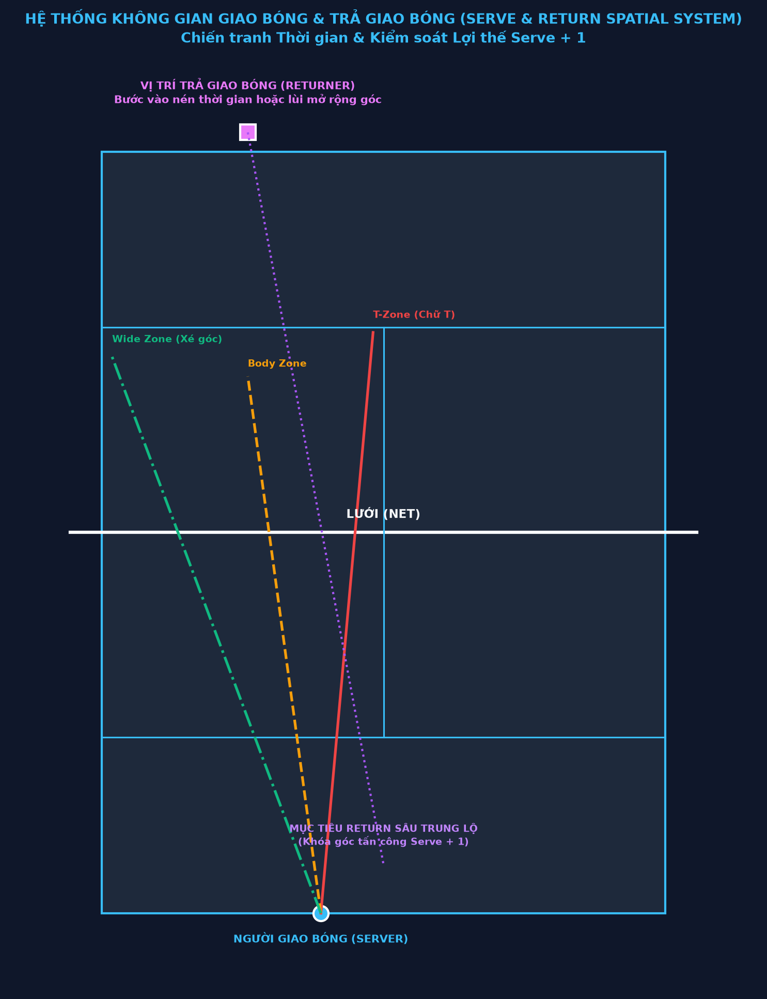
CHƯƠNG 11: RETURN POSITIONING VÀ CHIẾN TRANH THỜI GIAN
11.1. Return là gì trong hệ thống không gian?
Return of serve (trả lại phát bóng) là cú đánh đặc biệt nhất trong tennis — đây là lần duy nhất trong điểm mà bạn hoàn toàn không kiểm soát thời điểm và vị trí bóng đến. Bạn phải phản ứng với ý định của đối thủ.
Điều này làm cho return trở thành bài kiểm tra thuần túy nhất về spatial awareness và reaction ability. Và cũng là nơi mà tư duy không gian có thể bù đắp cho sự chênh lệch về thể lực.
Ba mục tiêu của return theo thứ tự ưu tiên:
- Vào sân (đừng bao giờ double fault cho đối thủ) — Return vào sân, dù ngắn hay yếu, vẫn tốt hơn return lỗi
- Trung hóa serve — Trả lại đủ để không bị tấn công ngay bởi +1
- Tấn công — Trả lại tạo áp lực hoặc winner ngay
Thứ tự này quan trọng: nhiều người chơi nghiệp dư cố gắng tấn công return quá thường xuyên, dẫn đến nhiều lỗi không cần thiết.
11.2. Positioning — Vị trí như chiến lược
Nơi bạn đứng để nhận serve là một quyết định chiến thuật, không phải thói quen. Vị trí đứng ảnh hưởng đến:
- Thời gian bạn có để phản ứng
- Loại return bạn có thể thực hiện
- Thông điệp bạn gửi đến server (về những gì bạn đang "chuẩn bị cho")
Vị trí cơ bản: Hầu hết tay vợt bắt đầu ở khoảng 1-2 mét sau baseline, gần điểm giữa của vị trí giao bóng có thể sang phía của mình. Đây là điểm trung lập cho phép xử lý hầu hết các serve mà không cần quá nhiều adjustment.
Điều chỉnh dựa trên server:
Versus flat hard server: Đứng xa hơn (2-3 mét sau baseline). Tốc độ cần thêm thời gian.
Versus kick serve specialist: Đứng trong hơn. Kick serve nảy cao, nhưng nếu bạn đứng trong, bạn có thể đánh nó trước khi nảy quá cao.
Versus slice serve: Đứng hơi gần và dịch ra ngoài theo hướng slice. Slice curve ra ngoài — bạn cần di chuyển theo.
11.3. The Art of Reading Serve — Đọc serve
Đọc serve là kỹ năng có thể học và phát triển. Những gì bạn cần đọc:
Toss (Tung bóng): Toss là tín hiệu sớm nhất. Toss hơi sang bên phải của server (với tay phải) thường = slice hoặc flat wide. Toss hơi ra sau đầu = kick serve. Toss thẳng trên đầu = flat serve. Đây không phải quy tắc tuyệt đối nhưng đủ để bắt đầu anticipate.
Shoulder alignment: Trước khi server bắt đầu motion, shoulder của họ align theo hướng serve. Nếu họ mở shoulder sang phải = có thể wide serve. Closed shoulder = T or body.
Grip: Continental grip = flat hoặc slice. Grip khác = spin serve. Nhưng hầu hết pro dùng continental nên điều này ít hữu ích ở level cao.
Racket face angle tại contact: Gần như không thể đọc trong real-time, nhưng với video analysis bạn có thể học pattern của specific opponents.
11.4. Return Positioning theo từng scenario
Deuce Court Returns:
Nếu server thường wide: Dịch chuyển ra ngoài hơn 30-50cm so với điểm trung lập. Nhưng cẩn thận: điều này để T open hơn.
Nếu server thường T: Dịch vào trong hơn, gần đường T. Nhưng wide serve sẽ mở sân nhiều hơn.
Nếu server vary well: Ở vị trí trung lập, tập trung vào reading thay vì guessing.
Ad Court Returns:
Nếu server thường wide sang backhand: Dịch ra backhand side. Đây là return quan trọng nhất vì wide ở Ad = vào backhand side của tay phải (thường yếu hơn).
Nếu server thường T sang forehand: Dịch vào trung tâm hơn.
11.5. Aggressive Return vs. Conservative Return — Khi nào tấn công
Conservative Return (Trả lại an toàn): Mục tiêu: Vào sân, trung hóa, không mắc lỗi. Kỹ thuật: Compact swing (ít backswing hơn), aim crosscourt với topspin hoặc slice. Khi dùng: Second serve thông thường, khi điểm quan trọng và đối thủ đang serving well.
Aggressive Return (Trả lại tấn công): Mục tiêu: Tạo áp lực ngay từ đầu điểm, không cho server advantage. Kỹ thuật: Full swing hoặc step-in, aim toward weakness. Khi dùng: Second serve yếu, khi bạn đang reading serve tốt, khi momentum cần được thay đổi.
Threshold decision: Tấn công khi bóng đến "comfortable zone" (đủ thời gian, bounce tốt). An toàn khi áp lực (ít thời gian, bounce khó). Đây là quyết định phải được đưa ra trong điểm, không phải trước.
11.6. Return như Statement về Chiến lược
Vị trí return và cách return gửi thông điệp đến server về chiến lược của bạn. Tay vợt intelligent sử dụng điều này có chủ đích.
Ví dụ: Nếu bạn đứng rất sâu (3-4 mét sau baseline) để nhận second serve, bạn đang nói với server: "Tôi đang chơi an toàn." Server có thể giao bóng "bombard" bạn với kick serves sâu mà không lo bị punished.
Ngược lại, nếu bạn bước vào trong baseline để nhận second serve, bạn đang nói: "Tôi sẽ attack second serve của bạn." Server sẽ phải serve second serve tốt hơn — hoặc risk double fault khi cố gắng spin nhiều hơn.
Positioning trước khi serve là một phần của "game within the game" tâm lý giữa server và receiver.
11.7. Chip-and-Charge — Return và Net Attack
Chip-and-charge là chiến thuật return cổ điển nhưng vẫn hiệu quả: return ngắn gọn (chip) và rush lên lưới ngay.
Spatial logic: Sau return slice ngắn sang body của server, server phải đánh từ thấp và awkward position. Bóng trả lại thường không có speed hay angle. Bạn đang ở lưới, chiếm hết không gian → easy volley winner.
Khi nào hiệu quả:
- Grass courts (bóng nảy thấp, mọi thứ diễn ra nhanh)
- Khi đối thủ có second serve yếu và slow
- Khi đối thủ không comfortable với passing shots
- Khi bạn muốn surprise họ về mặt chiến thuật
11.8. Return Pattern Analysis — Học từ Data
Mỗi trận đấu là cơ hội để thu thập data về return patterns của đối thủ (khi họ là server) và của chính mình.
Cần track:
- Server thường serve đâu trong Deuce và Ad court?
- Khi server ở tình huống tốt (40-0), họ serve an toàn hơn hay aggressive hơn?
- Khi bị break point, họ serve đâu?
- Return nào của mình đang vào sân? Return nào đang lỗi?
- Sau return của mình, điểm thường diễn ra như thế nào?
Adjustment trong trận: Dựa trên observations này, điều chỉnh positioning và strategy trong trận. Tennis là một "living game" — điều chỉnh liên tục tốt hơn bám chặt vào một plan.
11.9. Return trên Grass vs. Clay vs. Hard
Grass: Return là cực kỳ khó — bóng nảy thấp và nhanh. Conservative return (block và chip) thường là cách tiếp cận tốt nhất. Chip-and-charge rất hiệu quả.
Clay: Return dễ nhất vì bóng chậm và nảy cao và chậm lại. Aggressive return thường được sử dụng nhiều hơn. Receiver có nhiều thời gian hơn để setup và tấn công.
Hard: Trung gian. Second serve return có thể được tấn công. First serve thường đòi hỏi conservative return trừ khi prediction tốt.
11.10. Tổng kết — Return như Half của Game
Nhớ rằng: Server thắng khoảng 65-70% số điểm serve trong tennis chuyên nghiệp. Điều này nghĩa là nếu bạn return well, bạn đang làm điều gì đó khó — bạn đang "breaking" xác suất.
Return tốt không cần phải spectacular. Return tốt chỉ cần:
- Vào sân — không bao giờ mắc lỗi trực tiếp từ return nếu có thể
- Đủ deep — không cho server attack +1 dễ dàng
- Hướng chiến lược — sang weakness của server hoặc mở sân
Tay vợt với return game tốt là người khó break — và đó là nền tảng để xây dựng competitive game.
CHƯƠNG 12: HÌNH HỌC CỦA VOLLEY VÀ INTERCEPTION TENNIS
12.1. Net Play như Spatial Domination
Lên lưới là hành động không gian mạnh nhất có thể thực hiện trong tennis. Khi bạn ở lưới, bạn:
- Chiếm hầu hết sân: Từ net, bạn có thể reach cả hai sides và cover hầu hết passing shot angles
- Nén thời gian của đối thủ: Bóng từ vợt của bạn đến đối thủ trong ít hơn một giây
- Tạo ra geometric threat: Đối thủ phải đánh qua một "wall" di động — bạn
Nhưng lên lưới cũng có rủi ro không gian: nếu bạn ở sai vị trí hoặc approach kém, đối thủ có thể lob qua đầu bạn hoặc pass qua hai bên.
12.2. Geometric Principles của Volley Positioning
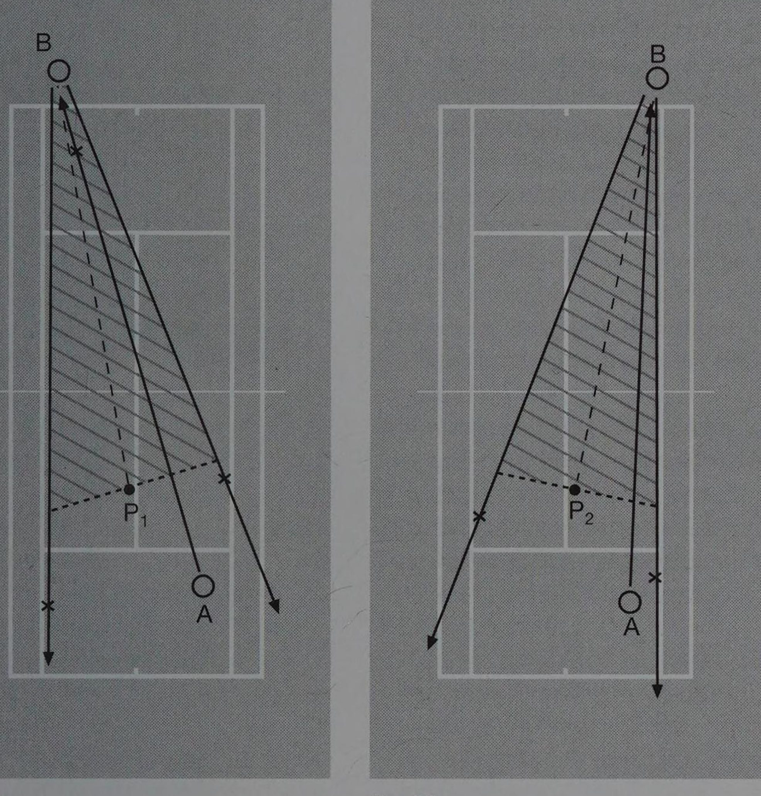
T-zone positioning: Vị trí lý tưởng ở net là khoảng 2-3 mét từ lưới, gần service line T. Từ đây bạn có thể reach cả forehand volley và backhand volley với equal efficiency, và lob phải đi rất cao và dài để qua đầu bạn.
Too close to net: Lob ngắn qua đầu bạn. Khó reach passing shot xuống hướng của bạn.
Too far from net (near service line): Opponent có quá nhiều angle cho passing shots. Volley phải đánh từ xa, khó winner.
Closing the net: Khi approach, không dừng quá sớm. Di chuyển về phía lưới sau bóng approach của bạn, dừng khi bạn đã ở T-zone (2-3m từ lưới). Sai lầm phổ biến: approach và dừng giữa service line — quá xa.
12.3. Angle Coverage từ Net Position
Từ net, bạn phải cover cả hai passing shot angles. Geometric logic:
Khi ở center T-zone: Bạn cover cả forehand và backhand passing shot với equal distance → vị trí trung lập tốt.
Khi đã committed sang một side: Nếu bạn đã move sang trái để intercepta ball, bạn phải "guess" tiếp: đối thủ lob, down-the-line, hay crosscourt? Bạn không thể cover tất cả.
Đây là lý do tại sao volley approach position là quan trọng nhất — bạn muốn đặt bóng approach của mình theo cách buộc đối thủ vào corner có ít angle nhất.
12.4. The Split Step at Net
Split step ở net quan trọng hơn thậm chí ở baseline — vì ở net, bạn có ít thời gian hơn để phản ứng.
Khi bạn ở net và đối thủ đang chuẩn bị đánh:
- Split step ngay khi đối thủ vào contact
- Hạ xuống với balance tốt
- Chọn hướng move dựa trên đọc tín hiệu của đối thủ
- Explosive first step sang hướng đó
Timing split step ở net: phải diễn ra nhanh hơn ở baseline vì bóng có thể đến bạn trong <0.5 giây.
12.5. Volley Technique — Tối giản giao bóng tốc độ
Kỹ thuật volley (bao gồm cả không gian học):
Compact swing: Không có backswing lớn ở volley. "Punch" forward, không swing. Lý do: ít thời gian cho swing dài, và punch tạo ra control và block tốt hơn.
Contact point in front: Tiếp xúc bóng trước thân, không ngang hoặc sau. Điều này cho tầm nhìn tốt hơn và control hướng tốt hơn.
Racket face angle: Racket face hơi open (nghiêng về phía bên trên) tạo ra volley với underspin — bóng low và controlled.
Use opponent's pace: Ở net, bạn không cần tạo ra tốc độ — redirect pace của đối thủ. Ít effort, nhiều control.
12.6. Volley Patterns — Đặt bóng như chess pieces
Bởi vì đối thủ đang ở defensive position khi bạn ở net, hầu hết volley nên nhắm vào:
Low and away: Volley thấp qua net vào body của đối thủ hoặc ở feet của họ (nếu họ đang tiến lên để pass) rất khó return.
Angle volley: Từ T-zone, một volley sắc sang sideline tạo ra winner vì đối thủ không thể reach.
Deep volley: Volley sâu (gần baseline đối thủ) không kết thúc điểm ngay nhưng giữ áp lực và cho bạn thêm thời gian để close net further.
Drop volley: Volley ngắn rơi ngay sau lưới — opponent phải chạy về phía trước, awkward position.
12.7. Approach Shot — Cầu nối từ Baseline đến Net
Approach shot (cú đánh trước khi lên lưới) là bước chuẩn bị quan trọng nhất cho net play.
Spatial requirements cho approach shot tốt:
- Deep (sâu, gần baseline của đối thủ): Đối thủ không có angle cho passing shot tốt
- Low (thấp, slice approach): Buộc đối thủ đánh từ thấp, bóng trả lại thường cao → easy volley
- Hướng đối thủ: Thường sang backhand side (yếu hơn) hoặc sang body
After the approach: Di chuyển forward về T-zone trong khi bóng đang bay. Đừng dừng để "xem" — keep moving, split step khi đối thủ vào contact.
12.8. Lob Defense — Khi Net Position bị Challenged
Khi đối thủ đánh lob, bạn có ba options:
Smash (Overhead smash): Nếu lob không quá sâu và không quá cao, turn và smash. Đây là lý tưởng — kết thúc điểm ngay.
Retreat and reset: Nếu lob quá tốt, retreat nhanh về baseline và reset rally. Better to be alive than dead.
Running forehand: Nếu lob là short lob sang forehand side, bạn có thể turn và hit forehand running — khó nhưng possible.
Lob prevention: Cách tốt nhất để xử lý lob là ngăn không cho đối thủ thực hiện lob tốt:
- Giữ đối thủ ở defensive position (không cho họ time và balance để lob tốt)
- Đặt volley thấp (buộc đánh từ thấp, không thể lob hiệu quả từ thấp)
- Tiếp tục advance (ít angle cho lob khi bạn gần lưới hơn)
12.9. Server and Volleyer Strategy
Serve-and-volley (giao bóng rồi lên lưới ngay) là chiến thuật cổ điển đang ít phổ biến hơn trong tennis hiện đại nhưng vẫn hiệu quả trong đúng context:
Khi hiệu quả:
- Grass courts (bóng nảy thấp, ít thời gian cho receiver)
- Khi opponent không comfortable với passing shots
- Khi bạn có serve placement tốt (setup weakened return)
- Khi cần surprise element
Spatial setup:
- Serve wide hoặc body → receiver bị kéo ra ngoài hoặc jammed
- Approach ngay sau serve
- Split step ở T-zone trước receiver contact
- Volley vào open court
12.10. Modern Net Play — Selective và Strategic
Net play trong tennis hiện đại không còn là serve-and-volley all-the-time. Thay vào đó, net approach trở nên selective và strategic — bạn lên lưới khi:
- Bạn có short ball (bóng ngắn của đối thủ) — cơ hội approach tốt nhất
- Bạn đã setup tốt với slice hoặc heavy topspin → opponent's return sẽ yếu
- Bạn muốn thay đổi rhythm của rally
- Bạn đang winning và muốn "shorten" các điểm (giảm unforced error risks)
Tay vợt baseline-first như Djokovic và Nadal sử dụng net approach như một "bonus" chiến thuật, không phải default strategy — và điều đó thường tạo ra surprise factor khi họ lên lưới.
CHƯƠNG 13: MỞ RỘNG KHÔNG GIAN PHÒNG THỦ
13.1. Phòng thủ là nghệ thuật, không phải thất bại
Trong tennis văn hóa đại chúng, phòng thủ thường được coi là yếu — "anh ta chỉ đang chạy và trả lại, không tấn công." Quan niệm này sai hoàn toàn.
Phòng thủ chiến lược là một trong những kỹ năng khó nhất và giá trị nhất trong tennis. Nó đòi hỏi:
- Thể lực đặc biệt
- Patience tâm lý
- Spatial awareness cao để biết cách neutralize áp lực
- Kỹ thuật để tạo ra bóng có chất lượng từ vị trí khó
Và quan trọng hơn: phòng thủ tốt tạo ra cơ hội tấn công. Bằng cách tồn tại trong rally, bạn chờ đối thủ mắc lỗi hoặc tạo ra short ball.
13.2. Defensive Spatial Expansion — Mở rộng không gian khi bị áp lực
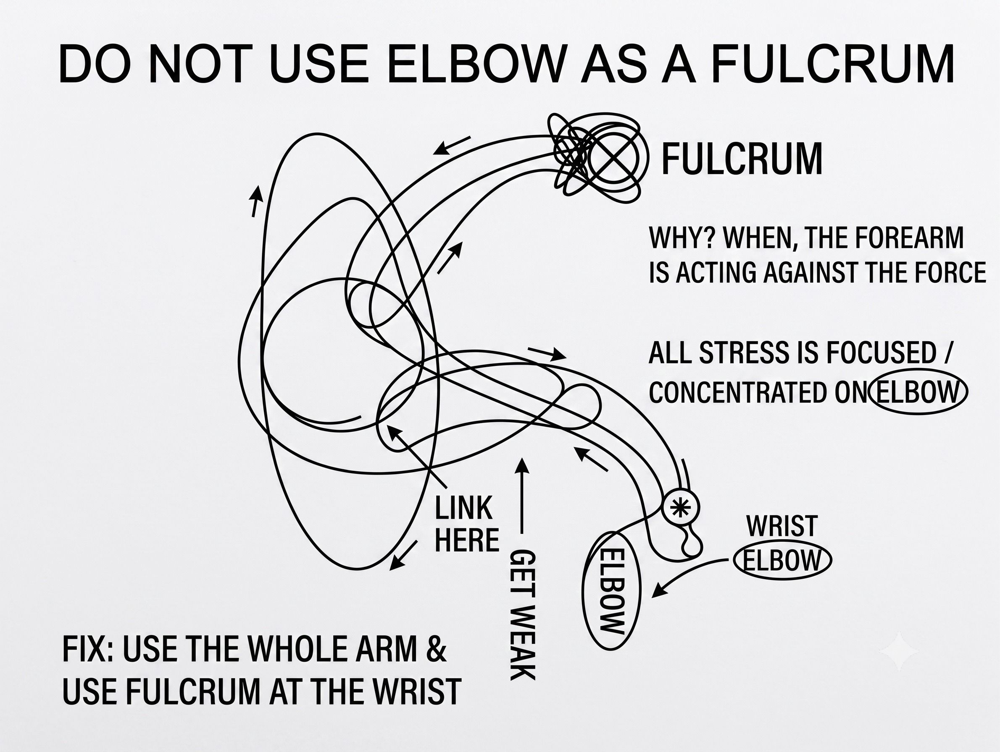
"Defensive spatial expansion" là khái niệm: khi bị áp lực không gian, mở rộng không gian của bạn thay vì co rút.
Co rút (sai): Khi bị dồn vào góc, đánh bóng ngắn và trung bình → cho đối thủ cơ hội tấn công tiếp.
Mở rộng (đúng): Khi bị dồn vào góc, đánh bóng cao và sâu → tạo flight time dài, đẩy đối thủ ra sau, mua thời gian phục hồi.
Spatial expansion through height và depth là cơ chế cốt lõi của defensive play. Mỗi "high deep ball" là một cú "reset" không gian — nó neutralize áp lực và cho phép bạn phục hồi vị trí.
13.3. The Defensive Arc — Hình học của phòng thủ
Khi bị áp lực và phải phòng thủ, mục tiêu không phải là "chỉ vào sân" — mà là vào sân với đủ height và depth để tạo ra defensive arc hiệu quả.
Defensive arc: Quỹ đạo bóng cao qua lưới (3-5 mét clearance), với topspin để bóng xuống sân sâu.
Lý do height quan trọng:
- Bóng bay lâu hơn → bạn có thêm 1-2 giây để phục hồi
- Bóng nảy sâu → đối thủ phải rút lui sau baseline
- Từ sau baseline, góc tấn công của đối thủ hẹp hơn
Lý do topspin quan trọng:
- Kéo bóng xuống sân an toàn mặc dù clearance cao
- Bóng nảy lên khó xử lý (high topspin)
- Consistent hơn flat ball khi defensive
13.4. Counter-Punching — Phòng thủ chuyển sang tấn công
Counter-punching (phản đòn) là phong cách chơi lấy áp lực của đối thủ và redirect lại. Nó không phải là passive defense — nó là active defensive strategy.
Cơ chế counter-punching:
Đối thủ đánh mạnh và deep → bạn đứng sâu và redirect với spin → bóng trả lại deep và nặng → đối thủ phải đánh lại → đôi khi họ mắc lỗi vì pace không được khai thác mà bị redirect
Spatial keys của counter-punching:
Position: Đứng 1-2 mét sau baseline. Không quá xa (mất control) nhưng đủ xa để có thời gian.
Racket preparation: Compact, sẵn sàng — không cần swing to để tạo pace vì pace đến từ đối thủ.
Direction: Redirect crosscourt (an toàn, margin lớn). Thỉnh thoảng down-the-line để surprise.
Spin: Heavy topspin để "slow down" pace, convert thành sâu và high.
13.5. Djokovic và Nghệ thuật Counter-Punching
Không có tay vợt nào trong lịch sử master counter-punching như Novak Djokovic. Phân tích:
Defensive positioning: Djokovic đứng rất gần baseline ngay cả khi "phòng thủ" — ông không retreat xa. Điều này cho phép ông return on the rise, stealing time.
Redirection accuracy: Ông redirect bóng sang bất kỳ hướng nào với precision cao — đối thủ không thể predict được.
Physical endurance: Khả năng duy trì defensive play với intensity cao qua nhiều giờ là extraordinary.
The mental game: Djokovic không bao giờ "give up" điểm ngay cả khi bị áp lực cực độ. Đây tạo ra pressure tâm lý ngược cho đối thủ — biết rằng mọi bóng "tưởng là winning" đều có thể được return.
13.6. Lob như Defensive Weapon
Defensive lob (lob phòng thủ) là cú đánh underrated nhất trong tennis. Khi bị net rushed hoặc ở vị trí xấu, lob tốt:
- Qua đầu đối thủ ở net → họ phải retreat
- Cao và sâu → bạn có thời gian phục hồi
- Có thể là outright winner nếu đủ tốt
Lob kỹ thuật:
- High clearance (4-7 mét trên lưới)
- Target: 1-2 mét trong baseline, không quá sâu (dễ overhead) không quá ngắn (dễ smash)
- Topspin lob: Khó nhất nhưng rất hiệu quả — bóng dip xuống nhanh sau khi qua net
Khi dùng lob:
- Khi đối thủ ở net gần (T-zone hoặc gần hơn)
- Khi bạn bị áp lực cực độ và không còn option nào tốt
- Khi đối thủ đang không expect it (surprise element)
13.7. Moonball — Extreme Defensive Weapon
Moonball là cú đánh topspin cực kỳ cao (4-8 mét qua lưới) và sâu. Nghe có vẻ yếu nhưng là một vũ khí chiến lược mạnh trong đúng tình huống.
Khi moonball hiệu quả:
Khi đối thủ không comfortable với high balls: Một số tay vợt (thường one-handed backhand) ghét bóng nảy cao. Moonball liên tục là "torture" cho họ.
Trên clay: Sân chậm + topspin = bóng nảy cao và nặng. Moonball trên clay gần như không thể tấn công được.
Khi cần reset: Nếu bạn bị áp lực nặng và cần "nhịp thở", một moonball sâu cho bạn 2-3 giây để phục hồi hoàn toàn.
Khi muốn frustrate đối thủ: Nhiều tay vợt tấn công không kiên nhẫn với bóng chậm và cao — họ mắc lỗi vì hit too hard hoặc không chờ bóng đúng điểm.
13.8. Slice as Defensive Neutralizer
Backhand slice (và forehand slice) là công cụ phòng thủ và neutralizing xuất sắc:
Defensive slice functions:
Slow down rally: Slice làm chậm pace của loạt bóng, cho bạn thời gian phục hồi.
Keep ball low: Bóng thấp buộc đối thủ đánh từ thấp — ít lực và angle hơn.
Change rhythm: Sau nhiều topspin heavy, slice bất ngờ phá vỡ timing của đối thủ.
Approach prep: Slice sâu và thấp tạo ra weak return, cho phép bạn approach net.
13.9. Defensive Endurance — Thể lực cho Phòng thủ
Phòng thủ tốt đòi hỏi thể lực đặc biệt — không chỉ speed mà còn endurance.
Specific requirements:
Aerobic capacity: Những defensive rallies dài tiêu tốn aerobic energy. Tay vợt phòng thủ tốt nhất có VO2 max cao.
Mental endurance: Chịu đựng pressure trong nhiều điểm liên tiếp mà không "give up" là mental skill.
Recovery speed: Khả năng recover quickly giữa points để duy trì level cao.
Injury resistance: Defensive play thường đòi hỏi extreme reaching, bending, và sprinting — cần body durability.
13.10. Defense Creates Attack — Vòng lặp chiến lược
Phòng thủ và tấn công không phải là hai chiến lược riêng biệt — chúng là hai phần của cùng một vòng lặp chiến lược:
Defensive play giỏi → Đối thủ phải tấn công nhiều hơn → Tăng risk của đối thủ → Nhiều forced errors của đối thủ → Bạn giành điểm
Và: Defensive play giỏi → Bạn tồn tại trong rally → Chờ short ball của đối thủ → Attack khi có cơ hội → Winner
Tay vợt defensive giỏi nhất không chỉ "survive" — họ patience đến khi họ có cơ hội tốt, sau đó attack với confidence.
CHƯƠNG 14: NÉN KHÔNG GIAN TẤN CÔNG
14.1. Tấn công như Thu hẹp Thế giới của Đối thủ
Nếu phòng thủ là mở rộng không gian của bạn, tấn công là thu hẹp không gian của đối thủ.
Offensive spatial compression hoạt động qua nhiều cơ chế đồng thời:
- Giảm thời gian phản ứng của đối thủ
- Giảm số góc đánh mà đối thủ có thể thực hiện
- Giảm "quality" của bóng trả lại của đối thủ
- Tăng áp lực tâm lý dẫn đến quyết định tệ hơn
Một tay vợt đang trong offensive spatial compression mode không cần winner mỗi cú — họ đang liên tục giảm options của đối thủ cho đến khi đối thủ mắc lỗi hoặc để lộ opportunity.
14.2. Step Forward — Hành động không gian đơn giản nhất
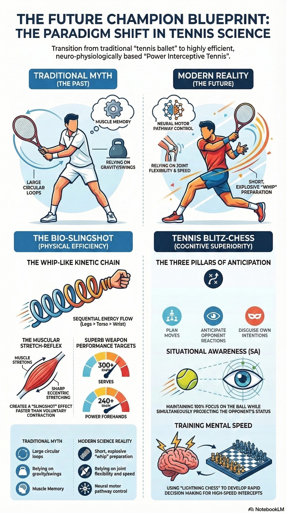
Hành động không gian tấn công đơn giản nhất là bước tiến về phía lưới.
Mỗi mét bạn tiến về phía lưới:
- Bóng của bạn đến đối thủ nhanh hơn (~0.1 giây mỗi mét)
- Angle của bạn rộng hơn (bạn có thể đặt bóng sắc hơn)
- Đối thủ cảm thấy bị đe dọa (tâm lý)
Đây là lý do tại sao tay vợt offensive luôn "working the baseline forward" — họ không đứng yên sau baseline, họ luôn tìm cơ hội step in.
14.3. Temporal Aggression — Nén Thời gian như Tấn công
Temporal aggression là sử dụng thời gian như vũ khí:
Early ball taking (Lấy bóng sớm): Đánh bóng on the rise hoặc ngay ở đỉnh nảy thay vì để bóng xuống xuống. Điều này nén thời gian phản ứng của đối thủ.
Quick tempo: Không bounce ball nhiều lần trước khi serve. Không đứng quá lâu sau mỗi điểm. Maintain quick tempo khi winning — đây là psychological pressure.
Short backswing: Swing compact hơn để accelerate contact time. Bóng rời vợt của bạn nhanh hơn → đến đối thủ nhanh hơn.
14.4. Angle Creation as Offensive Tool
Tạo angle (angle creation) là cơ chế tấn công cốt lõi trong tennis:
Shallow angle (Góc trung bình): Đặt bóng ra khỏi center, buộc đối thủ di chuyển ngang nhưng không quá xa. Thường được dùng để build pressure mà không risk quá cao.
Sharp angle (Góc sắc): Đặt bóng rất rộng, gần sideline. Buộc đối thủ chạy xa khỏi sân. Winner tiềm năng hoặc setup opportunity. Cần execution tốt — lỗi dễ hơn.
Inside-out angle: Tạo angle sang phía đối diện (chạy vòng backhand để đánh forehand sang backhand corner). Rất effective vì sử dụng strongest shot sang weakest area của đối thủ.
14.5. Aggressive Baselining — Tấn công từ Baseline
Aggressive baselining là phong cách tấn công từ baseline, không cần vào net. Tiêu biểu nhất là Agassi trong thời kỳ đỉnh cao.
Spatial elements:
Stand inside baseline: Mỗi khi có thể, take position inside baseline. Tạo pressure through positioning.
Early contact: Không chờ bóng drop — contact on the rise hoặc at peak.
High-paced groundstrokes: Tốc độ bóng cao → ít thời gian cho đối thủ.
Direction variation: Không predict được để đối thủ không thể lean một hướng.
14.6. Inside the Baseline Philosophy
Triết lý "inside the baseline" — luôn cố gắng duy trì vị trí trong baseline — là cốt lõi của offensive spatial strategy.
Spatial benefits:
- Angle wider (từ trong sân, angle attack rộng hơn)
- Opponent time compressed (bóng đến đối thủ nhanh hơn từ vị trí closer)
- Psychological dominance (bạn đang "in charge" của rally)
Nhược điểm và trade-offs:
- Ít thời gian hơn cho bản thân (bóng đến bạn cũng nhanh hơn)
- Lob vulnerability (dễ bị lob hơn khi ở trong baseline)
- Requires excellent footwork và reaction
Khi không nên ở inside baseline:
- Khi bị heavy topspin kick serve (cần step back để xử lý high bounce)
- Khi defensive situation (cần thêm thời gian)
- Khi mệt và reaction slowing
14.7. Winning by Percentage vs. Winning by Aggression
Một tension quan trọng trong offensive play: khi nào nên "go for it" và khi nào nên play safer?
High-percentage tennis: Đánh bóng vào "safer zones" (crosscourt, middle of court) với high consistency. Thắng bằng cách đối thủ mắc lỗi nhiều hơn bạn.
Aggressive tennis: Tấn công vào "difficult zones" (angles, lines) với risk cao hơn. Thắng bằng winners trực tiếp.
The balance: Tay vợt tốt nhất combine cả hai — build áp lực bằng high-percentage shots, tấn công khi có opportunity tốt. Không phải random aggression.
Tactical decision tree:
- Setup shot: High percentage, deep, build pressure → OK to be conservative
- Opportunity shot (short ball, weak return): Moderate aggression, target weakness
- Finishing shot (opponent out of position, wide open court): Full aggression, go for winner
14.8. Pace Management — Không phải lúc nào cũng mạnh
Offensive play không có nghĩa là mỗi cú đánh đều mạnh nhất có thể. Pace management (quản lý tốc độ) là kỹ năng quan trọng:
Vary pace intentionally: Đánh mạnh 2-3 cú → đột ngột slice hoặc moonball chậm → đánh mạnh ngay sau. Sự thay đổi này phá vỡ timing của đối thủ.
Pace to position: Đánh mạnh khi bạn ở vị trí tốt. Slice hoặc topspin cao khi cần phục hồi. Điều chỉnh pace theo vị trí của bạn.
Pace as tactic: Đôi khi một cú chậm hơn đặt đúng chỗ hiệu quả hơn cú mạnh sai chỗ.
14.9. Rally Control — Sở hữu Cuộc đối thoại
Tay vợt tấn công giỏi "own" the rally — họ dictate direction, pace, và rhythm. Làm thế nào?
Direction control: Đánh theo pattern nhất quán đủ lâu để đối thủ bắt đầu anticipate, sau đó thay đổi. Đối thủ đang "respond" đến bạn thay vì ngược lại.
Pace control: Thiết lập pace của rally. Khi muốn nhanh, tấn công early. Khi muốn reset, thêm topspin và height.
Psychological control: Confident body language, consistent routine, không bao giờ show frustration. Đây tạo ra mental pressure và subtle intimidation.
14.10. Tổng kết — Tấn công như Philosophy
Tấn công trong tennis không chỉ là hitting hard — nó là philosophy của việc kiểm soát cấu trúc của loạt bóng.
Tay vợt tấn công giỏi không chờ opportunities — họ tạo ra chúng. Họ đặt bóng theo cách buộc đối thủ phải trả lời theo cách bất lợi. Họ step forward khi cơ hội xuất hiện. Họ không bao giờ "reactive" — họ luôn trong mode "làm thế nào để tôi tăng áp lực hơn lên đối thủ?"
Điều này đòi hỏi:
- Spatial intelligence (biết khi nào có cơ hội)
- Technical skill (có thể execute)
- Mental toughness (tấn công dưới áp lực)
- Pattern recognition (biết opponent's weaknesses)
PHẦN 4: BẢN ĐỒ CẢM THỤ BẢN THỂ, TÂM LÝ KHÔNG GIAN & GIÁO ÁN HUẤN LUYỆN 2026
CHƯƠNG 16: PROPRIOCEPTION VÀ KINESTHETIC MAPPING
16.1. Kinesthetic Intelligence — Trí thông minh cảm thụ
Howard Gardner đề xuất rằng con người có nhiều loại "trí thông minh" khác nhau. Một trong số đó là "bodily-kinesthetic intelligence" — khả năng sử dụng cơ thể khéo léo và biết vị trí cơ thể trong không gian.
Tay vợt tennis ở cấp độ cao nhất — và đặc biệt là những người di chuyển đặc biệt như Federer hay Djokovic — có kinesthetic intelligence đặc biệt phát triển. Điều này không chỉ là thiên năng; phần lớn là được phát triển qua nhiều năm tập luyện chú tâm.
Kinesthetic intelligence trong tennis bao gồm:
- Proprioception (biết vị trí cơ thể)
- Kinesthesia (cảm nhận movement)
- Balance (thăng bằng)
- Spatial orientation (định hướng không gian)
- Body schema (bản đồ cơ thể)
16.2. Building Your Internal Court Map
Như đã đề cập trong chương 6, tay vợt ưu tú duy trì một internal court map — bản đồ nội tại về sân đấu.
Bản đồ này phát triển qua:
Repetition and experience: Sau hàng nghìn giờ trên sân, cơ thể và não "học" spatial relationships của sân mà không cần conscious processing. Bạn không cần nhìn để biết mình đứng cách baseline bao xa.
Attention to feedback: Tập chú ý đến physical cues — cảm giác dưới chân, vị trí của walls và fences, angle của ánh sáng. Những cues này feed vào court map.
Landmark awareness: Identify visual landmarks trên sân (lines, posts, cones nếu có) và calibrate vị trí relative đến chúng.
16.3. Joint Position Sense — Cảm giác Vị trí Khớp
Joint position sense là khả năng biết góc và vị trí của mỗi khớp mà không cần nhìn. Đây là component quan trọng của proprioception.
Trong tennis:
- Biết góc cổ tay mà không nhìn → consistency của racket face angle
- Biết vị trí khuỷu tay → consistent swing path
- Biết tư thế toàn thân → optimal balance và rotation
Phát triển joint position sense:
Closed-eye practice: Thực hiện shadow swings với mắt nhắm. Focus vào cảm nhận position của từng phần của swing.
Position-checking: Đứng một tư thế, sau đó nhờ partner check nó. So sánh với cảm nhận của bạn.
Yoga với proprioceptive focus: Yoga poses đòi hỏi body awareness cao có thể directly transfer sang tennis.
16.4. Balance Training cho Tennis
Balance (thăng bằng) là nền tảng của tất cả movement trong tennis. Bạn không thể hit tốt nếu mất balance. Bạn không thể move efficiently nếu balance bị compromise.
Static balance (thăng bằng tĩnh): Khả năng maintain position mà không di chuyển. Quan trọng cho setup trước cú đánh và volley.
Dynamic balance (thăng bằng động): Khả năng maintain balance trong khi di chuyển. Quan trọng cho di chuyển hiệu quả và hitting on the run.
Bài tập balance:
Single-leg stands: Đứng một chân 30-60 giây, progressing đến eyes closed, then on unstable surface (foam pad).
Split-step landing drills: Practice split step và immediate directional move, focus vào landing với balance.
Bosu ball exercises: Balance board và bosu ball training chuyển transfer tốt sang dynamic balance trong tennis.
16.5. Kinesthetic Mapping trong Cú Đánh
Mỗi cú đánh trong tennis có một "kinesthetic signature" — cảm giác đặc trưng khi thực hiện đúng. Phát triển "kinesthetic map" cho mỗi loại cú đánh là mục tiêu quan trọng.
Forehand kinesthetic signature:
- Cảm giác weight transfer từ chân phải sang trái (với người phải)
- Cảm giác hip rotation — bướm dưới bụng "pulling" sang phải rồi explode trái
- Cảm giác shoulder drop và lift trong swing path
- Cảm giác contact — racket face flush với ball, không off-center
- Cảm giác follow-through — tự nhiên, không forced
Backhand kinesthetic signature (two-handed):
- Cảm giác two-handed grip — cả hai tay secure nhưng không tight
- Cảm giác shoulder turn — trái sang phải (người phải)
- Cảm giác contact in front — không ngang thân
- Cảm giác "pull through" của tay không thuận
Khi cú đánh "feels right": Tay vợt có kinesthetic awareness tốt có thể biết ngay khi contact rằng cú đánh "tốt" hay "không tốt" — trước khi nhìn xem bóng đi đâu. Điều này là proprioceptive feedback từ racket qua tay vào não.
16.6. Sensory Integration — Tích hợp nhiều Giác quan
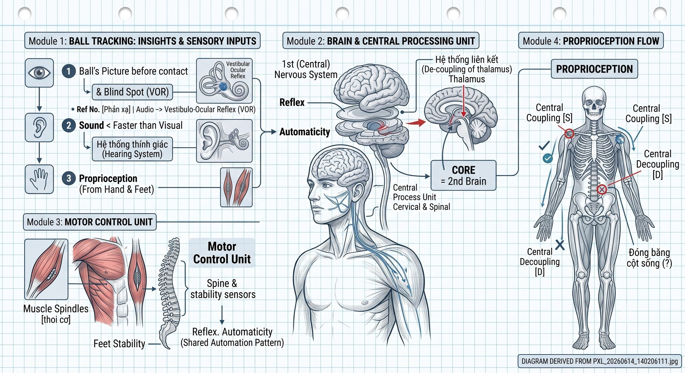
Tennis đòi hỏi tích hợp nhiều giác quan đồng thời:
Vision (thị giác): Nhìn bóng, đọc đối thủ, nhận thức sân Proprioception (cảm thụ bản thể): Biết vị trí cơ thể Vestibular (tiền đình): Balance và orientation trong không khí Auditory (thính giác): Sound của contact cho biết spin, power Tactile (xúc giác): Feel của grip, vibration qua handle
Não phải tích hợp tất cả những inputs này liên tục và real-time để tạo ra decisions và movement. Tay vợt giỏi có khả năng multi-sensory integration xuất sắc.
Training sensory integration:
- Shadow rallies (không bóng, focus vào proprioception)
- Blind folded catching drills
- Tennis với peripheral awareness drills (count objects trong peripheral field while playing)
16.7. Kinesthetic Memory và Automaticity
Mục tiêu cuối cùng của tất cả technique training là automaticity — thực hiện mà không cần conscious control.
Stages of learning (Stages học):
Stage 1 - Conscious incompetence: Bạn không biết cách làm và biết mình không biết. Stage 2 - Conscious competence: Bạn biết cách làm nhưng phải think carefully về từng step. Stage 3 - Unconscious competence: Bạn biết cách làm và thực hiện tự nhiên không cần think.
Tennis đỉnh cao đòi hỏi hầu hết kỹ thuật ở Stage 3 — để conscious mind free để focus vào strategy và spatial awareness.
Developing automaticity: Repetition với proper form trong deliberate practice. 10,000 repetitions tạo ra neurological groove — nhưng chỉ nếu repetitions là correct. Bad repetitions build bad automaticity.
16.8. Proprioceptive Drills cho Tennis
Drill 1: Baseline Awareness Đứng gần baseline và nhắm mắt. Di chuyển ra sau 1 mét, sau đó 2 mét. Mở mắt và check vị trí thực tế. Calibrate cảm giác.
Drill 2: Shadow Footwork Thực hiện footwork patterns (forward, backward, side) với mắt nhắm trên sân. Focus vào cảm nhận mặt sân, orientation, và spatial position.
Drill 3: Contact Point Feel Với ball machine, feed slow balls. Nhắm mắt ngay trước contact (sau khi đã track ball). Focus hoàn toàn vào feel của contact. Sau đó open eyes để check kết quả.
Drill 4: Recovery Blind Đánh cú đánh, sau đó close eyes và move đến bisector position bạn cảm nhận là đúng. Mở mắt và check với partner.
16.9. Technology và Proprioception Training
Công nghệ hiện đại đang tạo ra các công cụ mới để train proprioception:
Wearable sensors: Sensors đeo trên cơ thể track joint angles, movement patterns, và impact forces. Cung cấp objective feedback về kinesthetic data.
Video analysis với overlay: Overlay skeleton và movement paths lên video giúp tay vợt "see" điều mà proprioception cảm nhận và calibrate.
VR tennis: Virtual reality cho phép practice trong simulated environments với immediate visual feedback cho positioning.
Biofeedback systems: Thiết bị measure muscle tension và provide real-time feedback, giúp develop awareness về tension vs. Relaxation.
16.10. The Feeling of "Zone" — Khi mọi thứ click
Mọi tay vợt đã trải qua những moments khi mọi thứ "click" — khi cú đánh trở nên effortless, khi bạn seem to know exactly where the ball will be, khi you move và hit với unusual precision.
Đây được gọi là "flow state" hay "zone." Và về mặt kinesthetic, đây là khi proprioception, visual processing, và spatial awareness đang hoạt động ở peak efficiency — fully integrated, fully automatic, fully present.
Điều kiện để vào zone:
Challenge-skill balance: Match không quá dễ (bored) và không quá khó (anxious). Optimal challenge level.
Complete focus: Không distracted bởi outcome, score, hay external noise.
Automatic movement: Kỹ thuật đã automatic, không cần think về mechanics.
Proprioceptive clarity: Cảm giác về cơ thể và bóng clear và precise.
Zone không phải là ngẫu nhiên. Nó là kết quả của đủ practice để tạo automaticity, kết hợp với đúng mental state. Proprioception training là một phần quan trọng của "infrastructure" cho phép zone xảy ra thường xuyên hơn.
CHƯƠNG 17: KHÔNG GIAN TÂM LÝ VÀ ÁP LỰC CẢM XÚC
17.1. Tâm lý học của Không gian
Không gian trong tennis không chỉ tồn tại trên sân — nó tồn tại trong đầu người chơi. Và thường thì không gian trong đầu quan trọng hơn không gian thực tế.
Psychological space là cách người chơi cảm nhận sân đấu, đối thủ, và tình huống. Và perception này trực tiếp ảnh hưởng đến performance.
Khi bị áp lực nặng:
- Sân đấu có vẻ nhỏ hơn
- Lưới có vẻ cao hơn
- Đối thủ có vẻ nhanh hơn
- Target areas có vẻ nhỏ hơn
Khi tự tin:
- Sân đấu cảm thấy rộng
- Nhiều options hơn
- Thời gian có vẻ nhiều hơn
- Cú đánh cảm thấy tự nhiên
Điều thú vị là những thay đổi "perception" này có thể đo được: EEG studies cho thấy neural activity patterns khác nhau đáng kể giữa trạng thái confident và anxious.
17.2. Pressure và Spatial Perception
Áp lực (pressure) ảnh hưởng đến spatial perception theo nhiều cách:
Tunnel vision: Dưới áp lực cao, peripheral vision giảm. Bạn chỉ nhìn thấy phần nhỏ của sân thay vì toàn bộ bức tranh. Điều này cắt giảm spatial intelligence.
Temporal distortion: Áp lực khiến thời gian cảm thấy nhanh hơn — bóng có vẻ đến nhanh hơn, bạn cảm thấy không đủ thời gian.
Decision narrowing: Khi anxious, não thu hẹp số options xem xét. Thay vì thấy 5-6 tactical options, bạn chỉ thấy 1-2.
Body tension: Lo lắng gây tension cơ bắp, giảm elastic movement, giảm spatial freedom.
17.3. Kiểm soát Không gian Tâm lý — Các chiến lược
Breathing (Hít thở): Deep breathing activate parasympathetic nervous system — "rest and digest" mode ngược lại với "fight or flight." Một vài hít thở sâu trước điểm quan trọng literally changes brain chemistry và reduces cortisol.
Pre-point routine: Tất cả tay vợt chuyên nghiệp có pre-point routine — một chuỗi actions nhất quán trước khi serve hoặc receive. Djokovic nổi tiếng với việc bounce ball nhiều lần. Nadal có elaborate ritual.
Những routine này không phải là superstition — chúng là anchors đưa não vào familiar, calm state. Đây là "pattern interrupt" cho anxiety.
Present-moment focus: Lo lắng thường về tương lai ("nếu tôi thua điểm này...") hoặc quá khứ ("cú đó là lỗi của tôi..."). Kỹ năng mental quan trọng nhất là return to present — chỉ focus vào bóng hiện tại, cú đánh hiện tại.
Process vs. Outcome: Tập trung vào process ("tôi sẽ đánh high và deep sang backhand") thay vì outcome ("tôi phải win điểm này"). Process focus activates rational brain; outcome focus activates emotional brain.
17.4. Momentum — Sóng Tâm lý của Trận đấu
Momentum là một trong những hiện tượng thực tế nhất trong tennis — nhưng cũng là một trong những thứ khó kiểm soát nhất.
Momentum physics: Khi một người chơi đang "on a roll," nhiều things align:
- Neural pathways đang "hot" — reactions faster
- Confidence cao → spatial perception mở rộng → better decisions
- Body relaxed → elastic movement better → physical performance better
- Opponent nervous → spatial perception narrowed → mistakes
Stopping negative momentum: Khi momentum đang ngược chiều, cần pattern interrupt:
- Slow down (bounce ball more, take longer between points)
- Change something physical (re-tie shoe, change racket if allowed)
- Reset breathing deliberately
- Choose ONE specific tactical adjustment để focus vào
Building positive momentum:
- Win early points trong service game (start strong)
- Aggressive early return to pressure server
- Win your serve convincingly early in sets
17.5. Choking — Spatial Collapse dưới Áp lực
"Choking" là hiện tượng performance deteriorates dưới áp lực cao. Dưới góc nhìn không gian:
Why choking happens: Dưới extreme pressure (match point, important score), anterior cingulate cortex — "error detector" trong não — becomes hyperactive. Nó bắt đầu "monitor" every movement, every decision quá kỹ. Điều này disrupts automatic movement.
Kết quả: cú đánh "bình thường" đột nhiên trở nên "conscious" — bạn đang think về how to swing thay vì just swing. Conscious control của movement là chậm hơn và ít chính xác hơn automatic movement.
Preventing choking:
Train under pressure: Mô phỏng pressure trong practice — play with meaningful scores, bet on points, invite audience. Body học xử lý pressure physical response.
Acceptance: Paradoxically, chấp nhận rằng pressure sẽ xảy ra và không try to eliminate nó reduces its effect.
Trigger words: Some players have specific words/phrases họ nói với bản thân để trigger automatic mode (ví dụ "just play," "trust it," "let go").
17.6. Confidence và Spatial Freedom
Confidence không chỉ là cảm giác tốt về bản thân — nó là mental state cho phép full expression của ability.
Confident body language và spatial expansion:
Nghiên cứu của Amy Cuddy về "power poses" cho thấy rằng body posture ảnh hưởng đến hormone levels và mental state. Đứng thẳng, vai rộng, head up → increases testosterone (confidence) và decreases cortisol (stress).
Trên sân tennis, body language ảnh hưởng đến cả bạn và đối thủ. Confident body language:
- Giữ bạn trong performance state
- Có thể intimidate hoặc discourage đối thủ
Fake it till you feel it: Ngay cả khi không confident, adopting confident body language bắt đầu shift internal state. Không phải là cheating — đây là sử dụng body-mind connection.
17.7. Adversity Response — Phản ứng với Khó khăn
Mọi trận đấu có những moments khó khăn — bad calls, unforced errors, lost games. Cách bạn phản ứng với adversity xác định bạn là loại player nào.
Resilient players:
- Accept và move on — không dwell
- "Reset" sau mỗi điểm
- Maintain spatial intelligence ngay cả sau sai lầm
- Find something to work with trong situation bất lợi
Non-resilient players:
- Dwell trên sai lầm
- Lose confidence sau lỗi
- Let score và situation contaminate spatial perception
- "Give up" points mentally trước khi secara physical
Building resilience:
- "Next ball" mentality: sau mỗi điểm — tốt hay xấu — focus shifts hoàn toàn sang point tiếp theo
- Mistake routine: một quy trình cụ thể sau lỗi (ví dụ: look at strings, take breath, set up feet) — reset signal
- Perspective training: nhắc nhở bản thân về bigger picture (tennis là một game, không phải cuộc sống hay cái chết)
17.8. The Mental Game của Deuce và Ad Points
Deuce và Ad points (điểm quyết định) là nơi psychological space được test rõ nhất.
Server tâm lý: Ở deuce, server có lợi thế — chỉ cần win hai consecutive points để thắng game. Áp lực chủ yếu ở receiver. Server nên play normally, không ngại risk quá.
Ở advantage server, server gần thắng. Áp lực tăng — đây là khi nhiều tay vợt "tighten up" (gồng cứng). Cần có pre-serve routine đặc biệt hiệu quả.
Receiver tâm lý: Ở deuce, receiver cần win hai consecutive. Aggressive return strategy có thể shift momentum.
Ở advantage receiver (break point), người nhận có leverage. Nhưng pressure cũng cao — đây là khi "double fault" từ server xảy ra nhiều nhất. Receiver nên simply "put it in play" — áp lực là ở server.
17.9. Inter-Point và Between-Set Rituals
Thời gian giữa các điểm và giữa các set quan trọng hơn nhiều người nghĩ:
20-second between-point rule: Tay vợt professional có 20 giây giữa các điểm (25 giây sau games). Sử dụng thời gian này:
- Đi bộ về điểm đứng (không đứng yên giữa sân)
- Breathe deliberately
- Choose ONE tactical thought cho điểm tiếp theo
- Reset body posture
Between-set break: 90 giây giữa các set. Opportunities:
- Physical recovery (water, towel)
- Mental reset — đặc biệt nếu vừa thua set
- Tactical adjustment — identify one thing to change
Towel ritual: Nhiều tay vợt yêu cầu towel sau mỗi điểm. Điều này không chỉ là sweat management — đây là ritualistic "cleanse" tâm lý, transition từ điểm vừa rồi sang điểm tiếp theo.
17.10. Building Mental Toughness — Lộ trình dài hạn
Mental toughness không phải là "không sợ" hay "không cảm thấy áp lực." Đó là khả năng perform well mặc dù áp lực.
Xây dựng mental toughness:
Compete regularly: Match play experience là không thể thay thế. Tập điều kiện pressure response thông qua experience.
Challenge yourself: Thi đấu với người mạnh hơn thường xuyên. Thất bại thường xuyên builds resilience.
Journaling: Ghi chép sau mỗi trận — cả kỹ thuật/chiến thuật VÀ mental game. Identify patterns.
Sports psychology: Làm việc với sports psychologist nếu có thể. Mental game là trainable, same as strokes.
Mindfulness practice: Daily mindfulness (10-20 phút) builds general present-moment awareness transferable sang tennis.
Mental toughness được build qua adversity, không phải success. Mỗi lần bạn chiến đấu qua một difficult moment trên sân — và survive — bạn đang build capacity cho lần tới.
CHƯƠNG 18: CÁC MẪU CHIẾN THUẬT VÀ ĐIỀU KHIỂN HỆ SINH THÁI RALLY
18.1. Pattern Play — Ngôn ngữ chiến thuật
Tennis ở cấp độ cao không phải là improvisation thuần túy — nó có cấu trúc. Những tay vợt chuyên nghiệp chơi theo "patterns" — chuỗi cú đánh có thể predict được và đã luyện tập, được thiết kế để tạo ra situations có lợi.
Điều này không có nghĩa là họ chơi predictably. Trái lại: bởi vì họ có nhiều patterns và biết khi nào dùng từng pattern, họ khó predict hơn nhiều so với người chơi ngẫu nhiên.
Pattern play giống như ngôn ngữ — bạn có "vocabulary" (individual shots), "grammar" (cách kết hợp shots), và "sentences" (hoàn chỉnh tactical sequences).
18.2. Core Patterns trong Tennis Hiện đại
Pattern 1: Crosscourt Lock → Inside-Out Attack
Setup: Đánh 2-3 cú crosscourt heavy topspin sang backhand của đối thủ. Đối thủ bắt đầu predict crosscourt return và di chuyển sang trái.
Attack: Bất ngờ đánh inside-out forehand sang forehand của đối thủ (góc đối diện). Đối thủ đang moving sang trái → không thể cover phải.
Khi hiệu quả: Đối thủ đang di chuyển anticipating crosscourt. Needs good execution (inside-out phải deep và fast).
Pattern 2: Short Ball Provocation → Approach
Setup: Đánh slice hoặc drop shot ngắn, luring đối thủ vào sân.
Attack: Khi đối thủ tiến lên, đánh passing shot sâu hoặc lob.
Ngược lại: Bạn bị dụ lên sân bởi slice của đối thủ, họ pass bạn. Đây là một trong những points đẹp nhất trong tennis.
Pattern 3: Body-Wide-Body
Setup: Serve body → trả lại bị jam, ngắn vào center.
Attack: Forehand inside-out wide sang corner forehand của đối thủ.
Follow-up: Serve wide → đối thủ trả lại crosscourt (forced) → forehand attack down-the-line.
Pattern 4: Height Manipulation
Setup: Heavy topspin 2-3 cú (nảy cao). Đối thủ bắt đầu open up stance và prepare cho high ball.
Attack: Flat ball thấp vào body hoặc short angle. Đối thủ đang setup cho high → flat ball đến sớm và thấp hơn.
Pattern 5: Backhand Pressure Build → Forehand Switch
Setup: Đánh liên tục sang backhand của đối thủ, pushing them wide.
Attack: Khi đối thủ đang trả lại crosscourt từ wide backhand position (natural direction), bạn bất ngờ switch sang forehand inside-in.
18.3. Reading the Opponent's Patterns
Cũng như bạn có patterns, đối thủ có patterns. Reading và exploiting chúng là một trong những kỹ năng IQ chiến thuật quan trọng nhất.
Trong warm-up: Quan sát kỹ warm-up — nhiều tay vợt bộc lộ patterns ngay cả trong warm-up vì họ đang "comfortable." Bạn có thể thấy:
- Forehand hay backhand mạnh hơn?
- Họ thích slice backhand không?
- Di chuyển có vẻ tốt không?
- Serve placement pattern?
Trong set đầu tiên: Set đầu nên là "information gathering." Thử các tactics khác nhau, xem đối thủ react như thế nào. Ai thích serve wide? Ai không thích body serve? Ai mắc lỗi forehand down-the-line?
Pattern recognition: Ghi chú (mental hoặc physical trong breaks) về:
- Khi đối thủ ở X position, họ thường đánh Y hướng
- Khi score là X, đối thủ thường chơi Y cách
- Sau cú X của bạn, đối thủ thường trả lại Y
Exploiting patterns: Khi bạn biết pattern, bạn có thể start moving trước khi bóng được đánh — gaining time advantage.
18.4. Counter-Pattern Play — Phá vỡ Mẫu
Equally important là biết phá vỡ patterns của mình khi đối thủ đang read chúng:
Signs bạn đang bị read:
- Đối thủ moving trước khi bạn đánh
- Đối thủ consistently đang ở đúng vị trí để counter
- Patterns không đang producing opportunities
How to break your pattern:
- Vary one element (cùng setup, khác execution)
- Complete reversal (setup gợi ý A, thực hiện B)
- Add new pattern element (timing change, pace change)
Mục tiêu không phải là không có patterns (vô ích) mà là có enough patterns rằng đối thủ không thể identify và exploit pattern của bạn.
18.5. Tactical Flexibility — Thay đổi Game Plan
Đôi khi game plan ban đầu không working. Biết khi nào và làm thế nào để change là kỹ năng quan trọng.
Signals cần thay đổi:
- Bạn đang thua nhiều points từ specific tactical approach
- Đối thủ đang comfortable và trong rhythm
- Một weakness của đối thủ bạn đã identify không đang bị exploit
Cách thay đổi:
- Từng bước, không drastic overhaul
- Try one thing different; xem kết quả
- Đừng panic và thay đổi tất cả mọi thứ cùng lúc (bạn sẽ mất reference point)
Mental flexibility: Cần sự linh hoạt tâm lý — khả năng nhìn nhận lại situation và adapt. Tay vợt rigid trong game plan thường là victims của đối thủ nhạy bén.
18.6. Rally Ecology Management — Điều khiển Hệ sinh thái
Như đã thảo luận trong Chương 1, rally là một "hệ sinh thái" với dynamics riêng. Tay vợt giỏi không chỉ react với các events trong rally — họ shape ecology của rally.
Shaping the rally ecology:
Pace management: Quyết định ai dictates pace. Aggressive early ball taking → bạn set pace. Allow opponent to dictate → họ set pace.
Direction control: Consistent crosscourt → crosscourt becomes default direction. Bạn có thể exploit điều này với surprise down-the-line.
Height and spin variation: Maintain variety prevents opponent from calibrating. Predictable spin/height → opponent trong rhythm → harder to win.
Psychological atmosphere: Body language, pace between points, và sound all shape the "feel" của rally.
18.7. Serve Patterns và Third Ball
"Third ball" là cú đánh thứ ba trong điểm (sau serve và return). Đây thường là cú quyết định điểm hay tiếp tục rally.
Serve patterns designed cho third ball:
Wide + Third ball inside-in: Wide serve opens opposite side → third ball inside-in sang open court.
Body + Third ball wide: Body serve cramps receiver → return goes crosscourt → third ball wide.
T serve + Third ball cross: T serve pushes receiver back center → third ball crosscourt far side.
Cueing và anticipation: Server giỏi nhất bắt đầu "moving" cho third ball ngay sau serve — anticipating where return will go based on serve placement and opponent tendencies.
18.8. Doubles Spatial Dynamics — Tổng quan
Trong doubles, spatial dynamics trở nên phức tạp hơn nhiều vì có bốn người trên sân và sân rộng hơn (alley added).
Key differences từ singles:
Net player presence: Mọi shot phải "threaten" net player hoặc "avoid" them. Net player intercepts shortcuts.
Poaching: Net player của server có thể move để intercept return → extreme angle requirement từ receiver.
Formation variations: I-formation, Australian formation tạo thêm visual confusion.
Alley vulnerability: Doubles alley (thêm 1.37m mỗi bên) phải được covered — nhưng không nên be defensive về nó.
Core doubles principles:
Move as a unit: Cả đôi di chuyển together, maintain optimal spacing. Control the net: Đội nào control the net thường win. Net is spatial advantage. Attack return of serve: Aggression từ đầu điểm là quan trọng trong doubles.
18.9. Developing Tactical Intelligence — Lộ trình
Tactical intelligence không thể được học chỉ từ sách. Nó phải được developed qua experience. Nhưng experience có thể được accelerated:
Match analysis: Video review của matches của bạn — không chỉ kỹ thuật mà còn patterns và decisions. "Tại sao tôi đánh đó? Đó có phải là best choice không? Alternatives là gì?"
Watching high-level tennis với analytical eye: Xem professional matches không phải để xem shots đẹp mà để understand tactical logic. "Tại sao anh ta đánh sang đó? Tại sao đây là setup?" Better yet, xem với experienced coach hoặc partner để discuss.
Post-match review với partner: Sau practice matches, discuss tactical decisions với partner. "Khi bạn ở X position, bạn cảm thấy gì là threat? Tại sao bạn trả lại đó?"
Studying top players' patterns: Identify 3-5 specific patterns của Djokovic, Federer, Nadal. Learn what setup them và what they do with the opportunity.
18.10. Tactical Evolution — Khi chiến thuật phải thích nghi
Tennis chiến thuật không static — nó evolve:
Against one opponent over time: Đối thủ adapt đến chiến thuật của bạn. Bạn phải adapt đến adaptation của họ. Đây là cat-and-mouse game trong dài hạn.
As you develop: Khi kỹ thuật của bạn cải thiện, tactical options mở rộng. Một chiến thuật solid backhand mở ra patterns mới.
As conditions change: Wind, sun, surface, temperature — tất cả affect optimal tactics. Flexible player adapt; rigid player suffer.
Age and physical changes: Khi thể lực giảm (với age hoặc injury), tactics phải compensate. Nhiều "crafty" players develop exceptional tactical intelligence để bù đắp cho reduced physical prowess.
Tactical adaptation là một skill cần được deliberately developed — không chỉ là "figure it out on the fly."
CHƯƠNG 19: HỆ THỐNG BÀI TẬP VÀ GIÁO ÁN HUẤN LUYỆN SPATIAL TENNIS
19.1. Philosophy của Spatial Tennis Training
Huấn luyện tennis truyền thống tập trung vào kỹ thuật riêng lẻ: "Hôm nay chúng ta tập forehand. Ngày mai backhand. Tuần tới serve." Đây là approach mechanical layer — và nó cần thiết.
Nhưng spatial tennis training đòi hỏi một philosophy khác: Mỗi bài tập, từ đơn giản nhất đến phức tạp nhất, phải có một spatial component (thành phần không gian) rõ ràng.
Điều này không có nghĩa là kỹ thuật bị bỏ qua. Nó có nghĩa là kỹ thuật được luyện tập TRONG CONTEXT của không gian: không phải "đánh forehand tốt" mà "đánh forehand sâu sang backhand corner để buộc đối thủ vào phòng thủ."
Nguyên tắc training:
Purposeful repetition: Mỗi cú đánh có một spatial intent rõ ràng. Contextual variety: Không chỉ fed balls — include situations với opponent, recovery, decision-making. Progressive challenge: Từ đơn giản (fixed pattern) đến phức tạp (open play với constraints). Feedback integration: Hiểu tại sao mỗi cú đánh đạt hay không đạt mục tiêu không gian.
19.2. Warm-Up Protocol cho Spatial Tennis
10 phút warm-up routine:
Phút 1-2: Dynamic movement Footwork warm-up: shuffle step, crossover, forward-backward. Focus: activate proprioception và balance.
Phút 3-4: Shadow swings Shadow forehand và backhand swings, không bóng. Focus: kinesthetic feel của swing, không mechanics.
Phút 5-7: Mini tennis Chơi mini tennis (service box range only). Focus: touch, consistency, spatial awareness in small space.
Phút 8-10: Gradual transition Move từ service box ra baseline, dần dần mở rộng rally. Focus: calibrate timing và depth.
19.3. Drill Category 1 — Depth và Consistency Drills
Drill: Deep Target Practice
Setup: Đặt cones hoặc targets ở 1 mét từ baseline (vùng "golden depth"). Execution: Feed từ máy bắn bóng hoặc partner. Mục tiêu: landing trong vùng target. Scoring: Đếm số bóng target trong 50 cú. Goal: 70%+ consistency. Progression: Add movement — phải chạy đến bóng trước khi đánh, sau đó phục hồi.
Drill: Crosscourt Consistency
Setup: Hai tay vợt đánh crosscourt forehand-to-forehand liên tục. Execution: Aim for depth (back 3/4 của sân) và crosscourt direction. Rules: Không được phép đánh down-the-line. Focus thuần trên consistency và depth. Progression: Add spin variety — alternating topspin và slice.
19.4. Drill Category 2 — Width và Angle Drills
Drill: Figure-8 Rally
Setup: Hai tay vợt đánh crosscourt backhand-to-backhand, sau đó forehand-to-forehand luân phiên, tạo thành hình số 8 qua sân. Focus: Recovery positioning sau mỗi cú — di chuyển đến bisector đúng. Spatial learning: Cảm nhận cách recovery position thay đổi theo hướng cú đánh.
Drill: Wide Ball Recovery
Setup: Feeder đánh bóng rất rộng (ngoài sideline), player phải chạy và đánh. Ngay sau khi đánh, feeder đánh sang phía đối diện. Focus: Phục hồi sau wide ball, bisector calculation, explosive change of direction. Progression: Thêm decision — player phải chọn crosscourt hay down-the-line dựa trên position của "simulated opponent."
19.5. Drill Category 3 — Recovery và Bisector Drills
Drill: Bisector Challenge
Setup: Sau mỗi shot, player phải nói to "bisector here" và move đến đó. Execution: Partner confirms whether bisector is correct or incorrect. Focus: Conscious bisector calculation, building the habit. Progression: Làm ở tốc độ real-play, không có pause để think.
Drill: Three-Position Recovery
Setup: Feeder đánh bóng đến ba positions khác nhau, alternating randomly. Execution: Player đánh, phục hồi, đánh, phục hồi... Focus: Recovery direction và speed, bisector accuracy. Data tracking: Track recovery time và bisector accuracy.
19.6. Drill Category 4 — Pattern Play Drills
Drill: Crosscourt Lock → Attack
Setup: Player A đánh crosscourt only. Player B defends crosscourt only. Trigger: Khi Player A quyết định (sau ít nhất 3 crosscourt shots), họ đánh inside-out attack. Focus: Timing of pattern switch, disguise, execution of inside-out. Variation: Player B không biết khi nào inside-out sẽ đến — phải react.
Drill: Serve + 1 Pattern
Setup: Server serves đến specific zone, receiver returns. Server thực hiện predetermined +1 shot. Execution: 10 lần với mỗi serve-return-+1 combination. Focus: Execution của +1 dựa trên serve placement và anticipated return direction. Tracking: Win% của server với từng serve + +1 combination.
19.7. Drill Category 5 — Temporal Pressure Drills
Drill: On-the-Rise Challenge
Setup: Ball machine feeds with varied pace. Execution: Player phải đánh bóng on the rise (trước khi bóng đạt đỉnh). Nếu đánh sau đỉnh, không tính. Focus: Timing, court position (inside baseline), early preparation.
Drill: Time Compression Game
Setup: Two players. One player must stand inside baseline always. Other player can be anywhere. Rules: Inside-baseline player đang simulate aggressive baseliner; other phải cope. Focus: Temporal awareness, dealing với pace of play, defensive strategies.
19.8. Match Play với Spatial Constraints
Constraint training là một trong những tools hiệu quả nhất cho developing spatial intelligence:
Constraint 1: Direction-Limited Play Chỉ được phép đánh crosscourt. Player phải maintain quality crosscourt và không được phép go down-the-line. Forces: deep crosscourt consistent shots và correct recovery.
Constraint 2: Zone Restrictions Mỗi player phải stay trong half của sân (theo chiều ngang). Tạo ra extreme angle play và width challenges.
Constraint 3: Serve-to-Pattern Server phải serve đến specific zone, sau đó play theo predetermined pattern. Cho phép pattern drilling trong match context.
Constraint 4: Approach-Required Mỗi short ball (bouncing trước service line) phải được follow bởi net approach. Develops net play và approach shot skills.
Constraint 5: Points Without Winners Không được phép đánh winner (phải đánh vào sân). Tất cả điểm phải đến từ forced errors. Builds patience và strategic point construction.
19.9. Technology-Enhanced Spatial Training
Ball tracking systems (Hawkeye, TrackMan): Measure chính xác nơi bóng landing, pace, spin. Cho phép objective feedback về depth, consistency, và spin — không phải chỉ "cảm nhận."
Video analysis software: Overlay recovery paths, court positions, và tactical patterns lên video. Giúp identify spatial errors và patterns không visible với naked eye.
Heart rate monitoring: Correlate physical state với performance. Khi HR vượt threshold, spatial awareness giảm — understand your individual threshold.
GPS tracking: Measure actual distance run trong practice và matches. Compare với optimal movement paths để identify wasted movement.
19.10. Monthly và Annual Training Structure
Monthly structure:
Week 1-2: Technical và Drill Focus Heavy emphasis trên specific skills và drills. Less match play. High repetition volume.
Week 3: Integration More match play với constraints. Apply skills từ weeks 1-2 trong competitive context.
Week 4: Competition Tournament hoặc match play. Minimal drilling. Focus trên applying everything.
Annual periodization:
Off-season (2-3 months): Build physical base, address technical weaknesses, develop new patterns.
Pre-season (1-2 months): Integrate new technical elements, increase match play intensity.
In-season: Maintain fitness và skills, focus trên tactical refinement, compete regularly.
Recovery weeks: Mỗi 3-4 tuần, một "recovery week" với reduced volume. Prevents burnout và allows adaptation.
CHƯƠNG 20: TƯƠNG LAI CỦA SPATIAL TENNIS VÀ WAVE COACHING SYSTEMS
20.1. Tennis đang Thay đổi như thế nào?
Tennis đang ở trong một giai đoạn transformation mạnh mẽ. Không chỉ về kỹ thuật hay thể lực — mà về cách chúng ta hiểu và huấn luyện trò chơi.
Ba xu hướng lớn đang định hình tương lai:
1. Data Revolution: Với các hệ thống như Hawkeye, TrackMan, và SLAM tennis analytics, lần đầu tiên trong lịch sử chúng ta có dữ liệu chính xác về mọi khía cạnh của tennis — tốc độ serve, spin rate, bounce location, court coverage, recovery paths. Tennis đang trở thành một "data sport."
2. Neuroscience Integration: Hiểu biết ngày càng sâu hơn về cách não xử lý spatial information, pattern recognition, và motor learning đang thay đổi cách chúng ta dạy và luyện tập.
3. Biomechanics Evolution: Với các công cụ như motion capture và EMG sensors, chúng ta có thể "see inside" chuyển động theo cách chưa từng có, revealing wave-based movement patterns mà trước đây chỉ có thể đoán.
20.2. AI và Tactical Analysis
Trí tuệ nhân tạo đang revolutionize tactical analysis trong tennis:
Pattern recognition at scale: AI có thể analyze hàng nghìn điểm và identify tactical patterns mà không human analyst nào có thể thấy. "Player X thường đánh backhand down-the-line sau 4 consecutive crosscourt shots" — loại insight này chỉ có thể có với AI analysis.
Real-time tactical suggestions: Trong tương lai gần, coaches có thể nhận real-time AI analysis trong breaks về tactical patterns của đối thủ và suggestions cho adjustments.
Personalized training: AI có thể analyze individual player data và create personalized training programs — không phải "generic program" mà một program được thiết kế specifically cho weakness và strength của từng player.
Predictive positioning: AI có thể giúp develop đoán trước models để predict recovery positioning, telling players where to be before the ball is hit.
20.3. Biomechanics Innovation
Motion capture cho mọi người: Công nghệ motion capture đang giảm giá nhanh. Trong tương lai gần, motion capture chất lượng cao có thể available cho regular players, không chỉ professionals.
Real-time biofeedback: Wearable sensors đang đo muscle activation patterns trong real-time. Hình dung: trong practice, bạn nhận feedback ngay về sequence của muscle activation và biết ngay khi chuyển động không phải wave-based.
Fascia imaging: Ultrasound và other imaging technologies đang cho phép lần đầu tiên "visualize" fascia function trong real-time movement. Điều này sẽ revolutionary cho understanding và training wave-based movement.
20.4. Virtual Reality và Training Environments
VR tennis training đang phát triển nhanh:
Spatial scenario training: VR cho phép create specific spatial scenarios (ví dụ: "ở 15-30, đối thủ đang ở X position, serve đến Y zone, return coming Z direction") và practice responses hàng trăm lần trong một hour — không thể trong physical training.
Tactical visualization: Players có thể "see" tactical concepts trong 3D space — thấy recovery geometry, see angles, understand spatial relationships — theo cách flat video không thể cung cấp.
Pressure simulation: VR có thể simulate match pressure: crowd noise, simulated score, opponent body language. Training pressure response mà không cần actual tournaments.
20.5. Coaching Evolution — Từ Kỹ thuật đến Hệ thống
Coach của tương lai sẽ khác với coach của hiện tại:
From: Technique Corrector → System Builder Thay vì primarily fixing technique, coach tương lai sẽ primarily design learning systems — bao gồm kỹ thuật, chiến thuật, mental, physical, và analytical components.
From: Intuition → Data-Informed Coach sẽ make decisions dựa trên data, không chỉ "eye test." Nhưng data vẫn cần interpretation — human coaching intelligence vẫn essential.
From: One-size-fits-all → Highly personalized Mỗi player có unique spatial intelligence level, physical capabilities, learning style, và competitive needs. Coaching sẽ increasingly personalized.
From: Technical vocabulary → Spatial vocabulary Thay vì "keep your elbow up," coaches sẽ nói về "spatial pressure" và "recovery geometry" và "wave mechanics" — ngôn ngữ phản ánh deeper understanding của game.
20.6. Player Development của Tương lai
Cách chúng ta develop players trẻ cũng đang thay đổi:
Early spatial exposure: Thay vì bắt đầu với kỹ thuật ngay lập tức, players trẻ sẽ được expose đến spatial concepts sớm hơn — học "see the court" trước khi học "swing the racket."
Games-based learning: Nhiều research cho thấy "games-based approach" — dạy through constrained games thay vì drills — phát triển spatial intelligence và tactical understanding nhanh hơn và retain tốt hơn.
Multi-sport development: Early specialization đang được questioned bởi science. Players với diverse sport background develop better general spatial awareness và adaptability. Tennis của tương lai sẽ encourage multi-sport participation cho young players.
Neural-optimized learning: Dựa trên neuroscience, training sẽ được tối ưu hóa cho neural plasticity windows — sử dụng knowledge về khi nào não most receptive đến specific types của learning.
20.7. The Wave Coaching System — Tổng kết Framework
Từ tất cả những gì đã thảo luận trong 20 chương, có thể outline một "Wave Coaching System" — framework tổng hợp:
Pillar 1: Spatial Foundation
- Court geometry understanding
- Recovery geometry (bisector principle)
- Spatial pressure mapping
- Tactical pattern library
Pillar 2: Wave Movement
- Fascia mechanics awareness
- Ground reaction force utilization
- Elastic energy storage và release
- Non-linear movement principles
Pillar 3: Proprioceptive Intelligence
- Court mapping development
- Kinesthetic awareness
- Balance và spatial orientation
- Multi-sensory integration
Pillar 4: Psychological Space
- Pressure management
- Mental resilience building
- Flow state development
- Psychological space expansion
Pillar 5: Tactical Intelligence
- Pattern recognition và development
- Tactical flexibility
- Rally ecology management
- Data-informed decision making
Năm pillars này không hoạt động độc lập — chúng tích hợp với nhau để tạo ra một player hoàn chỉnh.
20.8. Spatial Tennis cho Mọi Cấp độ
Một điều quan trọng cần nhấn mạnh: Spatial tennis không chỉ dành cho chuyên nghiệp. Những nguyên lý trong cuốn sách này áp dụng cho mọi cấp độ, từ người chơi mới đến veteran.
Beginner level:
- Start với court awareness basics — biết mình đứng ở đâu
- Understand crosscourt vs. Down-the-line với mục đích không gian
- Bắt đầu develop recovery habit (không đứng im sau cú đánh)
Intermediate level:
- Develop bisector geometry habit
- Understand four spatial variables (width, depth, height, angle)
- Begin pattern play với 2-3 fundamental patterns
Advanced level:
- Fine-tune all five pillars
- Develop extensive pattern library
- Integrate data feedback
- Develop wave movement
Recreational level: Ngay cả người chơi recreational mỗi tuần có thể hưởng lợi từ understanding spatial principles — trận đấu thú vị hơn, ít lỗi vô lý hơn, và deeper enjoyment của trò chơi khi understand tại sao mọi thứ xảy ra.
20.9. The Future is Already Here
Nhiều thứ được mô tả như "tương lai" trong chương này đang xảy ra ngay bây giờ:
- AI analytics được sử dụng bởi top players và coaches
- Motion capture analysis available tại nhiều performance centers
- Data analytics ngày càng accessible
- VR tennis training products đã tồn tại
Nhưng adoption rộng rãi vẫn đang đến. Tương lai của tennis coaching là spatial, wave-based, và data-informed — và nó đang đến nhanh hơn nhiều người nghĩ.
Players và coaches early adopt những approaches này sẽ có advantage đáng kể trong những năm tới.
20.10. Lời kết — Tennis là Hình học trong Chuyển động
Chúng ta đã đi qua một hành trình dài: từ basic court geometry đến wave mechanics, từ proprioception đến psychological space, từ individual shots đến system-level tactical thinking.
Nhưng tất cả có thể được tóm gọn trong một câu:
Tennis là hình học trong chuyển động.
Sân đấu là một bản đồ sống. Mỗi cú đánh thay đổi cấu trúc của những khả năng tiếp theo. Người hiểu không gian kiểm soát tương lai của loạt bóng.
Học spatial tennis không phải là học một system mới để add vào những gì bạn đã biết. Nó là học cách nhìn tennis theo cách mới — không phải như một series của cú đánh riêng lẻ, mà như một flowing, living system của không gian, thời gian, chuyển động, và trí tuệ.
Khi bạn nhìn tennis theo cách này, mọi thứ thay đổi:
- Cú đánh không còn là kỹ thuật — chúng là ngôn ngữ không gian
- Di chuyển không còn là footwork — nó là sinh thái học thích nghi
- Chiến thuật không còn là patterns — chúng là hệ sinh thái rally đang được shaped
- Thể lực không còn là strength — nó là elastic wave capability
Hãy mang những gì bạn đã học trong cuốn sách này ra sân. Không phải tất cả mọi thứ cùng lúc — chọn một concept, luyện tập với ý thức về nó cho đến khi nó trở thành tự nhiên, sau đó add một concept khác.
Quá trình này mất thời gian. Nhưng mỗi ngày, sân đấu sẽ trở nên phong phú hơn, phức tạp hơn và thú vị hơn khi bạn bắt đầu nhìn thấy những structure ẩn giấu đằng sau trò chơi.
Đó là spatial tennis.
PHỤ LỤC: THUẬT NGỮ SPATIAL TENNIS
Adaptive Movement: Footwork thích nghi với context thay vì follow fixed patterns.
Angle Creation: Tạo ra góc đánh sắc để mở sân hoặc kết thúc điểm.
Bisector Principle: Nguyên lý phục hồi về đường phân giác của góc đánh có thể của đối thủ.
Continuous Readiness: Duy trì trạng thái sẵn sàng di chuyển liên tục trong điểm.
Counter-Punching: Phong cách chơi lấy pace của đối thủ và redirect lại.
Court Ecology: Rally như một hệ sinh thái sống với dynamics của riêng nó.
Defensive Spatial Expansion: Mở rộng không gian thông qua height và depth khi bị áp lực.
Dynamic Balance: Thăng bằng trong khi đang di chuyển.
Elastic Energy: Năng lượng tích trữ trong fascia và cơ bắp, được giải phóng như sóng.
Fascia: Hệ thống mô liên kết chạy qua toàn thân, truyền lực đàn hồi.
Figure-8 System: Hệ thống chuyển động theo vòng lặp số 8 của Jack Broudy.
Flow State: Trạng thái tập trung tối đa khi mọi thứ "click."
Ground Reaction Force (GRF): Lực từ mặt đất phản lại khi đẩy xuống, nền tảng của tất cả lực tennis.
Inside-Out Forehand: Forehand đánh từ trái sang phải sân của đối thủ (với tay phải).
Kinesthetic Intelligence: Trí thông minh cơ thể-không gian.
Kinesthetic Mapping: Phát triển bản đồ cảm giác của cú đánh và di chuyển.
Moonball: Cú đánh topspin cực kỳ cao và sâu như vệ tinh, dùng phòng thủ và thay đổi nhịp điệu.
Offensive Spatial Compression: Thu hẹp không gian và thời gian của đối thủ qua tấn công.
On-the-Rise Hitting: Đánh bóng khi nó vừa bật lên sau khi nảy.
Pattern Play: Chuỗi cú đánh được thiết kế để tạo tình huống có lợi.
Proprioception: Cảm nhận vị trí cơ thể trong không gian không cần nhìn.
Psychological Space: Không gian sân đấu như được cảm nhận bởi người chơi, bị ảnh hưởng bởi trạng thái tâm lý.
Recovery Geometry: Hình học xác định vị trí phục hồi tối ưu sau mỗi cú đánh.
Serve + 1: Khái niệm serve được thiết kế để setup cú đánh thứ hai.
Situational Awareness: Nhận thức toàn cảnh của trận đấu bao gồm score, momentum, và thể lực.
Spatial Ecology: Cách rally hoạt động như hệ sinh thái với các vòng phản hồi.
Spatial Intelligence: Khả năng hiểu và thao túng không gian trong tennis.
Spatial Pressure: Trạng thái đối thủ thiếu không gian hoặc thời gian để đánh thoải mái.
Split Step: Bước nhảy nhỏ thực hiện khi đối thủ vào contact để tạo ready position.
Strike Zone: Vùng thoải mái nhất để tiếp xúc bóng, thường từ thắt lưng đến ngực.
Temporal Compression: Giảm thời gian phản ứng của đối thủ.
Tensegrity: Cấu trúc dựa trên tension liên tục, như fascia network của cơ thể.
Wave-Based Movement: Chuyển động trong đó lực truyền qua cơ thể như sóng qua môi trường đàn hồi.
Width: Chiều rộng — sự kéo giãn ngang của đối thủ ra khỏi trung tâm sân.
Kết thúc: ĐỘNG LỰC HỌC KHÔNG GIAN TRONG TENNIS
Henry Pham
"Sân tennis là nơi hình học gặp gỡ nhân tính — nơi góc độ và cảm xúc, tốc độ và trí tuệ, cùng tồn tại trong từng mili-giây của loạt bóng. Hãy chơi không chỉ bằng cơ thể — hãy chơi bằng trí tuệ không gian."